THE CAUSAL BODY AND THE EGO ΔΔ
By
Arthur E. Powell
A publication of The Theosophical Society
DEDICATION
This book, like its
three predecessors, is dedicated with gratitude and appreciatoin to those whose
painstaking labour and researches have provided the materials out of which it
has been fashioned
INTRODUCTION
GENERAL DESCRIPTION
THE FIELD OF EVOLUTION
THE COMING FORTH OF MONADS
THE FORMATION OF THE FIVE PLANES
THE KINGDOMS OF LIFE
THE ATTACHMENT OF THE ATOMS : HIGHER TRIAD
THE ATTACHMENT OF THE LOWER ATOMS : LOWER TRIAD
THE CREATIVE HIERARCHIES
GROUP SOULS
MINERAL GROUP SOULS
VEGETABLE GROUP-SOULS
ANIMAL GROUP-SOULS
INDIVIDUALISATION :MECHANISM AND PURPOSE
INDIVIDUALISATION :METHODS AND DEGREES
FUNCTIONS OF THE CAUSAL BODY
COMPOSITION & STRUCTURE OF THE CAUSAL BODY
CAUSAL THOUGHT
DEVELOPMENT AND FACULTIES OF THE CAUSAL BODY
LIFE AFTER DEATH: THE FIFTH HEAVEN
THE SIXTH HEAVEN
THE SEVENTH HEAVEN
TRISHNA: THE CAUSE OF REINCARNATION
PERMANENT ATOMS ANDTHE MECHANISM OF REINCARNATION
In section II of this document will be found
THE EGO AND REINCARNATION
THE EGO AND HIS "INVESTMENT"
THE EGO AND THE PERSONALITY
THE EGO IN THE PERSONALITY
THE EGO & THE PERSONALITY: SACRAMENTAL AIDS
MEMORY OF PAST LIVES
THE EGO ON HIS OWN PLANE
INITIATION
BUDDHIC CONSCIOUSNESS
THE EGO AND THE MONAD
THE SECOND AND HIGHER INITIATIONS
CONCLUSION
INTRODUCTION
This book forms the fourth, and last, of the series of compilations dealing with the bodies of man. Throughout the series the same plan has been adopted. Approximately forty volumes mostly those written by Annie Besant and by C.W. Leadbeater, have been thoroughly searched, the material thus found has been sorted, arranged and classified into its appropriate departments, so as to present to the student of modern Theosophy a coherent and sequential account of the finer bodies of man.
In addition, there has been incorporated a considerable amount of information regarding the planes, or worlds, associated with these four bodies of man. It is therefore, probably near the truth to say that the gist of nearly everything that has been published by the two principle pioneers into the mysteries and complexities of the Ancient Wisdom, with the exception of certain clearly marked specialities [such as Occult Chemistry, for example] is to be found in these four books.
The compiler thus hopes that the intensive labour, which has occupied him for about three years and a half years, will serve to make a little easier the path of those who desire to obtain a comprehensive grasp of what may be termed the technical aspects of modern Theosophy.
In view of the fact
that our occult knowledge, of planes finer than the physical, is likely to be
enormously increased in the near future, it has seemed desirable to undertake
the not inconsiderable task of arranging, in textbook form, such data as are
already in our possession, before the total mass becomes too unwieldy to be
handled in this manner. Moreover, by such orderly arrangement of our materials,
we construct for ourselves an outline, or skeleton into which further
information can be built, as it becomes available.
As in the previous volumes, references to the sources of the information have
throughout been given in the margin (when using the book) , so that any student
who so desires, may verify for himself every statement made, at its original
source. In the few cases where the compiler has stated his own unsupported
views, the initials A.E.P. have been printed in the margin. About two thirds of
the diagrams are original, the remainder having been taken, sometimes with
slight modifications, from the works of C.W.Leadbeater, and a few from A Study
In Consciousness, by Annie Besant.
A further department of Theosophical knowledge, to a great extent self-contained, and therefore specialised, is that of the Scheme of Evolution in which man evolves: this includes Globes [ such as the Earth] Rounds, Chains, Races, Sub-Races, and so forth. The writer hopes to compile a volume dealing with this section of technical Theosophy, in the near future.
A.E.Powell
CHAPTER I
GENERAL DESCRIPTION
In the three preceding volumes of this series, viz.,
The Etheric double,
The Astral Body, and The Mental Body, the life history of each of
the three lower vehicles of man has been studied. In these studies, it has been
sufficient for us to take each of the three vehicles as we find it actually
existing in man, and to examine its methods of functioning, the laws of its
growth, its death, and then the formation , from the nucleus provided by the
permanent atoms and mental unit, of new vehicles of the same kind, in order that
man's evolution on the three lower planes can be continued.
When we come to study the causal body of man, we enter upon a new phase of our work, and must take a far wider sweep in our purview of man's evolution. The reason for this is, that whilst the etheric, astral and mental bodies exist for one human incarnation only, i.e.., are distinctly mortal, the causal body persists throughout the whole of man's evolution, through many incarnations, and is therefore relatively immortal. We say relatively immortal advisedly because, as will be seen in due course, there is a point where a man, having completed his purely normal human evolution, commences his supernormal human evolution, and actually loses the causal body in which he has lived and evolved during the past ages of his growth.
Hence, in dealing with man's causal body, we are no longer standing within the personality , looking upon any vehicle of that personality, and seeing from its own standpoint how it is serving the evolution of the real man who uses it, but instead we must take up our stand by the side of the man himself, looking from above on the vehicles of the personality, and regarding them as so many temporary instruments fashioned for the use of the man himself, and discarded, as a broken tool is discarded, when they have served their purpose.
Furthermore, in order to make our study comprehensive, and to round it off in a manner that will be intellectually satisfactory, we must discover and study the origin and birth of the causal body, i.e., how it has formed in the first instance. Finding that it had a beginning, we see at once, not only that it must have an end, but also that there must be some other form of consciousness which uses the causal body, much as the ego in the causal body uses the vehicles of the personality. This other form of consciousness is, of course, the human Monad. Hence, in order that we may fully comprehend the part that the causal body plays in the tremendous story of human evolution, we must study also the human Monad.
Reverting to the
birth or formation of the causal body, we are at once plunged into a
consideration of the somewhat intricate subject of Group-Souls, with which we
shall have to deal. Tracing the origin of Group-Souls, we are led back, step by
step, to the Three Great Outpourings of the Divine Life, from which all forms of
manifested life arise. Whilst studying the Three Outpourings, we must
necessarily consider to some extent the formation of the material world into
which the Outpourings are projected.
Thus in order that our study of the Causal Body may be a comprehensive one, we
must describe, though in brief outline only, the formation of the field of
evolution, the flow into that field of the great streams of life, the coming
forth of the Monads, the building of the many kingdoms of life, and the plunging
of the Monads, with the assistance of the permanent atoms, into the material
universe, and the gradual development of the life in the Group Souls until
eventually, after aeons of existence, the point of Individualisation is reached,
when the causal body for the first time appears.
Thereafter, our study will follow much the same lines as in the previous books of this series. We shall have to deal in turn with the functions of the Causal Body: its composition and structure; the nature of causal thought; the development and faculties of the causal body; the portion of life after death spent in the causal body in the higher heaven worlds.
Then we must pass to a fuller examination of the entity, the ego to wit, who inhabits and uses the causal body, projecting from it personality after personality into the cycle of reincarnation. We must examine what is known as Trishna, the "thirst", which is the true cause of reincarnation; the permanent atoms and the mechanism of reincarnation; the attitude which the ego takes toward the whole process of reincarnation and to the personalities which he projects into the lower worlds.
The whole relationship of the ego to the personality, his link with it, and the way in which he uses it, must be carefully examined. A special chapter will be devoted to certain Sacramental aids towards strengthening and improving the link between the ego and the personality, and another chapter to the rationale of the memory of past lives.
Then we pass to describe, so far as is possible, the life of the ego on his own plane. This leads us on to Initiation into the Great White Brotherhood, when the causal body vanishes for a time. Some description of the buddhic consciousness must be attempted, and a succinct epitome of such facts as are known regarding the Second and Higher Initiations.
Finally, we
conclude our long history with the relation of the ego to his "Father in
Heaven", the Monad.
The field which this book attempts to cover is thus, as already said, a far
greater one than that covered in any of the three preceding volumes of the
series. The book will, it is hoped, enable the student of Theosophy to obtain a
broad grasp of the wonderful panorama of human evolution, and to see in true
perspective the part played by each of the four subtler bodies of man - the
etheric, the astral, the mental and the causal.
CHAPTER II
THE FIELD OF EVOLUTION
By the "field of evolution" we mean the material universe in which Evolution is
to take place. Strictly speaking, life or Spirit, and matter are not in reality,
separate and distinct existences, but rather are opposite poles of one noumenon;
but for purposes of intellectual analysis and study it is convenient to consider
these two aspects or poles almost as though they were separate and distinct,
much in the same way that a builder, for example considers, more or less
separately, plans and sections of his buildings, although these plans and
sections are merely abstractions, from the one entity - the building itself.
The field of evolution in our solar system consists of seven planes or worlds; these may be regarded as making up three groups: [1] the Field of Logoic manifestation only; [2] the field of supernormal evolution [3] the field of normal human, animal, vegetable mineral and elemental evolution. These facts may be tabulated as shown on page 5.
The Adi and
Anupadaka planes may be conceived as existing before the solar system is formed.
The Adi plane may be imagined as consisting of so much of the matter of space,
symbolised by points, as the Logos marks out to form the material basis of the
system He is about to produce.
The Anupadaka plane, symbolised by lines, we may imagine as consisting of this
same matter, modified or coloured by His individual life, His all ensouling
consciousness, thus differing in some way from the corresponding plane in
another solar system. These ideas may be roughly symbolised thus:
|
Field of Evolution
|
||||
| Group | Serial | Sanskrit | English | |
| 1 | Adi | (a) | Logoic | |
| 2 | Anupadaka | (b) | ||
| 3 | Atma | Spirit | Super-normal human, i.e., "Initiates". | |
| 4 | Buddhi | Intuition | ||
| 5 | Manas | Mind | Normal human, animal, vegetable, mineral and elemental entities. | |
| 6 | Kama | Emotions | ||
| 7 | Sthula | Physical Activity | ||
|
Notes: (a) No English equivalent exists: Adi means literally "first" (b) No English equivalent exists: Anupadaka means literally "without vesture". |
||||
| First Stage | The Logos marks out His Universe on the Adi plane | 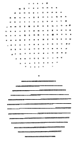 |
||
| Second Stage | The Logos modifies this matter with His own individual life, on the Anupadaka plane | |||
This preparatory work may be illustrated in another way by two sets of
symbols,one showing the threefold manifestation of the consciousness of the
Logos, the other the threefold change in matter corresponding to the threefold
change in consciousness.
Taking first the manifestation of consciousness, the site of the universe having been marked out [see diagram II] : [1 ] the Logos Himself appears as a point within the sphere; [2] the Logos goes forth from that point in three directions to the circumference of that sphere or circle of matter; [ 3 ] the consciousness, of the Logos returns on Itself,
Diagram II
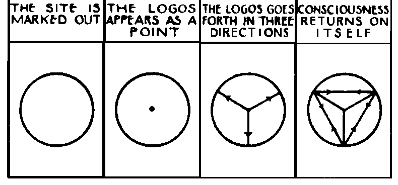
Taking now the changes set up in Universal matter, corresponding to the manifestations of consciousness, we have, in the sphere of primordial substance, the virgin matter of space [see Diagram III ]
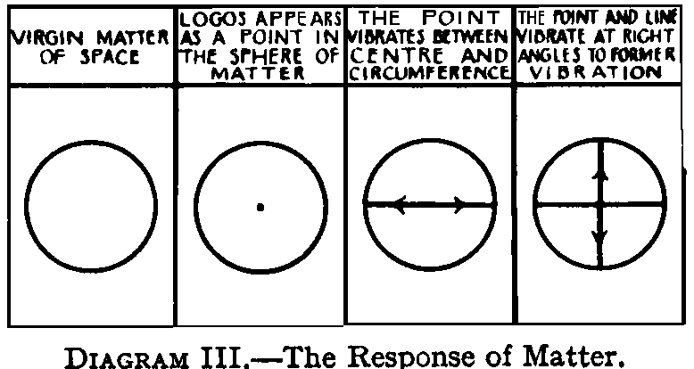
The Cross is thus
said to "proceed" from the Father [the point] and the Son [the diameter] and
represents the third Logos, the creative mind,the Divine activity ready to
manifest as Creator.
Before considering the creative activity of the Third Logos, and the detailed preparation of the field of evolution, we must note the origination of the Monads or units of consciousness, for whose evolution in matter the field of a universe is prepared. We shall return to their fuller consideration in a later chapter.
The Myriads of these units, who are to be developed in the coming universe, are
generated within the divine life, before the field for their evolution is
formed. Of this forthgoing it has been written : "That willed: I shall multiply
and be born" [Chhandopanishat VI.ii, 3] : thus the Many arise in the One by that
act of will. The act of will is that of the First Logos, the undivided Lord, the
Father.
The Monads are described as sparks of the Supreme Fire, as "Divine fragments".The Occult Catechism , quoted in the Secret Doctrine . I., 145, says: "Lift thy head, O Lanoo; dost thou see one, or countless, lights above thee, burning in the midnight sky?' ‘I sense One Flame, O Gurudeva; I see countless, undetached sparks shining in it'." The Flame is Ishvara, in His manifestation, as the First Logos; the undetached sparks are the Monads, human and other. The word "undetached" should be especially noted, as signifying that the Monads are the Logos Himself.
A Monad may thus be defined as a fragment of the divine life, separated off as an individual entity by rarest film of matter, matter so rare that, while it gives, a separate form to each, it offers no obstacle to the free intercommunication, of a life, thus encased, with the surrounding similar lives.
A Monad is thus not pure consciousness, pure Self, samvit. That is an abstraction. In the concrete universe there are always the Self and his sheaths, however tenuous the sheaths may be, so that a unit of consciousness is inseparable from matter. Hence a Monad is consciousness plus matter.
The Monad of Theosophy, is the Jivatma of Indian Philosophy, the Purusha of the Samkya, the particularised Self of the Vedanta.
The life of the
Monads being thus of the First Logos, they may be described as Sons of the
Father, just as the Second Logos Himself is the Son of the Father; but the
Monads are but younger Sons, with none of their divine powers, capable of acting
in matter denser than that of their own plane – the Anupadaka; while the Second
Logos, with ages of evolution behind Him, stands ready to exercise His divine
powers, "the first-born " among many brethren.
Whilst the roots of their life are in the Adi plane, the Monads themselves
dwell, on the Anupadaka Plane, as yet without vehicles in which they can
express, themselves, awaiting the day of "manifestation" of the Sons of
God".There they remain, while the Third Logos begins the external work of
manifestation, shaping the matter of the objective universe. This work will be
described, in the next chapter.
Diagram IV indicates the Monads, waiting on their own plane whilst the world, in
which they are to develop is being fashioned.
These units of
Consciousness, known as Monads, are described as the Sons, abiding from the
beginning of a creative age, in the "bosom of the Father", who have not yet been
–"made perfect through suffering". Each of them, is truly "equal to the Father
as touching his Godhead, but inferior to the Father as touching his
manhood"----in the words of the Athanasian Creed. Each of them is to go forth
into matter in order " to render all things subject to himself" [ 1 Corinthians
xv. 28]. He is to be "sown in weakness" that he may be "raised in power"
[ibid.xv.43]. From a static condition unfolding all divine potentialities, he is
to become dynamic, unfolding all divine powers.
Whilst omniscient, omnipresent, on his own plane –the Anupadaka –he is
unconscious- "senseless"-, on all others; he is to veil his glory in matter that
blinds him, in order that he may become omniscient, omnipresent, on all planes
able to answer to all divine vibrations in the universe, instead of only those
of the highest levels.
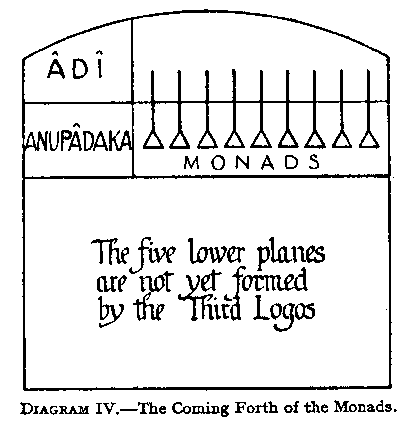
As the Monads derive their being from the First Logos, His will to manifest is also their will. Hence, the whole process of the evolution of the individual "I" is an activity chosen by the Monads themselves. We are here in the worlds of matter, because, we as Monads willed to live: we are Self-moved, Self determined.
This divine impulse, striving ever after fuller manifestation of life, is seen every where in nature, and has often been spoken of as the Will-to-live. It appears in the seed, which pushes its growing point up towards the light, in the bud bursting its prison and expanding In the sunshine. It is the creative genius in the painter, the sculptor, the poet, the musician, the craftsman. The subtlest pleasure, the keenest savour of exquisite,delight derives from this urge, from within, to create. All things feel most alive when multiplying themselves by creation. To expand to increase, results from the Will-to-live: the fruition is the Bliss of living, the joy of being alive.
CHAPTER IV
THE FORMATION OF THE FIVE PLANES
Continuing now with the creative process, The Third Logos, the Universal Mind, works on the Matter of space - Mulaprakriti, the Celestial Virgin Mary throwing its three qualities of Tamas [Inertia], Rajas [Mobility], and Sattva[Rhythm] out of stable into unstable equilibrium, and therefore into continual motion in relation to each other.
The Third Logos thus creates the atoms of the five lower planes—Atma, Buddhi, Manas, Kama, and Sthula: "Fohat electrifies into life and separates primordial stuff, or pre-genetic matter into atoms."
We may note, parenthetically, that there are three stages in the formation of these atoms:-
[1] the fixing of the limit within which the life of the Logos shall vibrate, this being known as the "divine measure" or "Tanmatra", literally "the measure of "That", "That" being the divine Spirit.
[2] The marking out of the axes of growth of the atom, the lines which determine, its shape; these correspond to the axes of crystals.
[3] From the measurement of the vibration, and the angular relation of the axes with each other, the surface or wall of the atom is determined.
Under the directive activity of the Third Logos, the atoms of each plane are awakened to new powers and possibilities of attraction and repulsion, so that they aggregate into molecules, and simpler molecules into complex ones, until, on each of the five planes six lower sub-planes are formed, making, in all seven sub-planes on each plane.
The matter of the sub-planes so formed, however, is not that now existing: it is the more strongly attractive or cohesive energies of the Second Logos, the aspect of Wisdom or Love, which brings about the further integrations into the forms of matter with which we are acquainted.
Furthermore, the whirling currents in the atoms, known as spirillae, are not made by the Third Logos, but by the Monads , with whom we shall deal presently. The spirillae are developed into full activity in the course of evolution, normally one in each Round. Many of the practices of Yoga are directed to bring about the more rapid development of the spirillae.
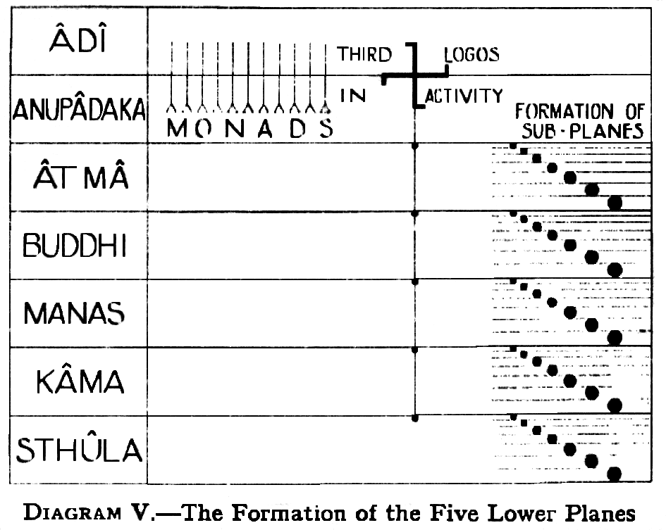
Thus in every atom lie involved innumerable possibilities of response to the three aspects of consciousness, and these possibilities are developed in the atom in the course of evolution.
This work of the
Third Logos is usually spoken of as the First Life Wave, or First Outpouring.
DIAGRAM V illustrates this work of the Third Logos or First Outpouring.
We shall consider the matter a little further, and the ascent of the
First Outpouring, in the next and later chapters after we have dealt with the
Second Outpouring.
CHAPTER V
THE KINGDOMS OF LIFE
Into matter vivified by the Third Logos, the second great wave of the divine life descends, coming from the Second Logos or Second Person of the Trinity,: this is usually known as the Second Outpouring. The Second Person of the Trinity thus takes form, not of the "virgin" or unproductive matter alone, but of the matter which is already instinct with the life of the Third Person, so that both the life and the matter surround Him as a vesture. It is thus an accurate statement that He is "incarnate of the Holy Ghost and the Virgin Mary", which is the true rendering of a prominent passage in the Christian Creed.
Slowly and
gradually this resistless flood of life pours down through the various, planes
and kingdoms, spending in each of them a period equal in duration, to one entire
incarnation of a planetary chain, and covering many millions, of years. [NOTE:
A planetary Chain consists of seven globes of matter, of various grades, round
which the stream of evolving lives passes seven complete times.]
At various stages of its descent, the life of the Second Outpouring is known by
various names. As a whole, it is often spoken of as a monadic essence, though
this term is better confided to that portion of it which is clothed only in the
atomic matter of the various planes. This name was originally given to it
because it has become fit to provide permanent atoms to Monads.
When it ensouls matter of the lower sub-planes of each plane, i.e., all the sub-planes below the atomic, which consist of molecular matter, it is known as Elemental Essence. This name is borrowed from the writings of mediaeval occultists, it having been bestowed by them on the matter of which the bodies, of nature spirits were composed: for they spoke of these as "Elementals", dividing them into classes belonging to the elements of Fire, Air, Water and Earth.
When the
Outpouring, or wave of the Divine Life - which in some previous aeon, has
finished its downward evolution through the buddhic plane—pours down into the
highest level of the mental plane, it ensouls great masses of atomic mental
matter. In this its simplest condition, it does not combine the atoms into
molecules in order to form a body for itself, but simply applies by its
attraction an immense compressing force to them.
We may imagine the force, on first reaching this plane on its downward swoop, to
be entirely unaccustomed to its vibrations, and unable at first to respond to
them. During the aeon which it will spend on this level, its evolution will
consist in accustoming itself to vibrate at all rates which are possible there,
so that at any moment it can ensoul and use any combination of the matter of
that plane. During this long period of evolution it will have taken upon, itself
all possible combinations of the matter of the three arupa [formless] or causal
levels, but at the end of the time it returns to the atomic level - not, of
course as it was before, but bearing latent within it all the powers which it
has gained.
The Wave of Life, then, having drawn together the matter of the Causal Plane,
combines it into what at that level corresponds to substances, and of these
substances builds forms which it inhabits. This is called the First Elemental,
Kingdom.
As we are here dealing with the Monadic essence on its downward arc, progress for it means descent into matter instead of as with us, ascent towards, higher planes. Hence this essence, even on the causal plane, is less evolved than we are, not more so: but it would perhaps be more accurate to say that it is less in-volved, as its e-volution, in the strict sense of that term has not yet commenced.
There are seven subdivisions in the First Elemental Kingdom: the highest corresponds with the first sub-plane; the second, third and fourth correspond with the second sub-plane; the fifth, and sixth and seventh correspond with the third sub-plane.
After spending a whole chain period evolving through different forms at that level, the wave of life, which is all the time pressing steadily downwards identifies itself so fully with these forms that, instead of occupying them and withdrawing from them periodically, it is able to hold them permanently and make them part of itself.When that stage is reached, it can proceed to the temporary occupation of forms at a still lower level. Accordingly it takes forms on the lower mental , or rupa [form] levels of the mental plane, and is known then as the Second, Elemental Kingdom. The student should note that the ensouling life resides on the higher mental or causal level, while the vehicles through which it manifests are on the lower mental plane.
The Second Elemental Kingdom is divided into seven subdivisions: the highest subdivision corresponds with the fourth sub-plane; the second and third divisions with the fifth sub-plane; the fourth and fifth subdivision with the sixth sub-plane; the sixth and seventh divisions with the seventh sub-plane.
For convenience of reference, the subdivisions of the First and Second Elemental Kingdoms are tabulated thus:---
| Plane | Sub-Planes | ||
| Sub-Divisions | Kingdoms | ||
|
Higher Mental |
1 | 1 | First |
| 2 | 2 : 3 : 4 | ||
| 3 | 5 : 6 : 7 | ||
|
Lower
Mental |
4 | 1 | Second |
| 5 | 2 : 3 | ||
| 6 | 4 : 5 | ||
| 7 | 6 : 7 | ||
After spending a whole chain-period at this stage, the continuous downward, pressure has caused the process to repeat itself. Once more the life has identified itself with its forms, and has taken up its residence on the lower mental levels. Then it takes for itself forms of astral matter, and becomes the Third Elemental Kingdom.
As we saw in The Astral Body and The Mental Body, both mental and astral elemental essences are very intimately connected with man, entering largely into the composition of his vehicles.
After spending a whole chain-period in the Third Elemental Kingdom, the life again identifies itself with those forms, and so is able to ensoul the etheric part of the mineral kingdom, becoming the life which vivifies that kingdom.
In the course of the mineral evolution, the downward pressure again causes the life to identify itself with the etheric forms, and from those forms to ensoul, the denser matter of such minerals as are perceptible to our senses.
What we know as the mineral kingdom includes, of course, not only what are usually called minerals, but also liquids, gases, and many etheric substances, as yet unknown to Western orthodox science.
When in the mineral kingdom, the life is sometimes called the "mineral monad", just as at later stages it has been named "the vegetable monad", and the "animal monad". These titles, however, are somewhat misleading, because, they seem to suggest that one great monad animates the entire kingdom, which is not the case, because even when the monadic essence first appears before us as the First Elemental Kingdom, it is already not one monad, but very many monads: not one great life-stream, but many parallel streams, each possessing characteristics of its own.
When the Outpouring has reached the central point of the mineral kingdom, the downward pressure ceases, and is replaced by an upward tendency. The "outbreathing", has ceased, and the "inbreathing" or indrawing has begun.
It will be noted that, if there were but one Outpouring of life, which passed from one kingdom to the next, there would be in existence at any given time one kingdom only. This , however as we know, is not the case: the reason is that the Logos sends out a constant succession of waves of life, so that at any given time we find a number of them in operation. Thus we ourselves represent one such wave; the wave that immediately followed our wave now ensouls the animal kingdom; the wave behind that is now in the vegetable kingdom; a fourth is in the mineral stage; whilst a fifth, sixth and seventh are represented by the Three Elemental Kingdoms. All are successive, ripples of the same great Outpouring from the Second Aspect of the Logos.
The whole scheme tends increasingly towards differentiation, the streams as they descend from kingdom to kingdom dividing and subdividing more and more. It may be that before all this evolution takes place there is a point at which we may think of the Great Outpouring as homogeneous, but of that, nothing is known.
The process of subdivision continues until, at the end of the first great stage of evolution, it is finally divided into individualities, i.e., into men, each man being a separate and distinct soul, though at first, of course, an undeveloped soul.
Looking at the work of the Second Life Waves, or Second Outpouring,-as a whole, we may fairly regard its downward sweep as concerned with the making of primary tissues, out of which in due time, subtle and dense bodies will be formed. In certain ancient scriptures this process has been aptly called "weaving".
The materials which are prepared by the Third Logos, are woven by the Second Logos into threads and fabrics out of which future garments - i.e., bodies—will be made.
The Third Logos may be thought of as a Chemist, working as in a laboratory; the Second Logos we may regard as the Weaver, working as in manufactory, Materialistic as are these similes, they are useful as crutches for the understanding.
The Second Logos thus "weaves" various kinds of cloth, i.e., of material, out of which will later be made the causal and mental bodies of men; out of the cloth of astral matter, of desire stuff, will later be made the astral bodies of men.
Thus are fashioned the materials of the mechanism of consciousness, the characteristics of each class of material being determined by the nature of the aggregations of particles - texture , colour, density, and so forth.
All this downward sweep of the life-wave through the planes, giving qualities to the many grades of matter, is a preparation for evolution and is often and more properly, called involution .
After the lowest stage of immersion in matter is reached both the first and the second outpouring turn upwards and begin their long ascent through the planes: this is evolution properly so called.
DIAGRAM VI is an attempt to illustrate graphically the First Outpouring from the Third Logos, forming the matter of the five lower planes, and The Second Outpouring which, taking the matter vivified by the Third Logos, moulds and ensouls it so as to produce the three Elemental Kingdoms, and the Mineral Kingdom, and in due succession, the vegetable, and animal kingdoms.
There is indicated also on the diagram the Third Outpouring, from the First Logos, the Outpouring from which results the formation of individual entities, or human beings. With this however, we shall deal more fully at a later stage of our study.
The student should take careful note of the exact position of the figures in Diagram VI, representing each kingdom. Thus the mineral is shown of full width in the denser part of the physical plane, showing that the life there, such as it is, has full control over the dense physical matter. But the band grows steadily narrower as it mounts up through the etheric sub-planes, indicating that control over etheric matter is not yet perfectly developed.
The small point penetrating into the astral plane indicates that a little consciousness, works through astral matter. This consciousness is the beginning, of desire, expressed in the mineral kingdom as chemical affinity, etc. We shall refer to this again when we come to the Mineral Group-Souls.
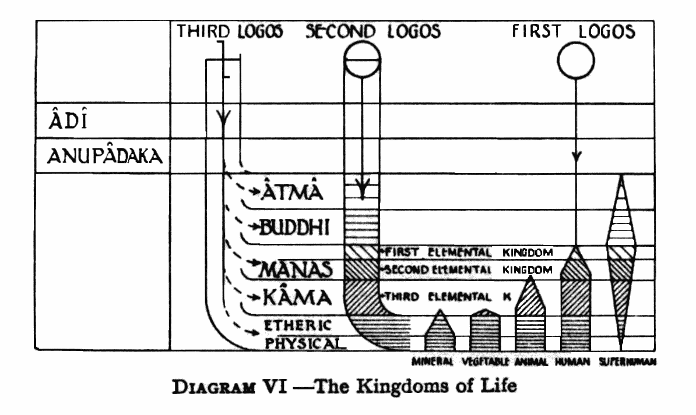
In the animal kingdom the band shows that there is full development in the lowest astral sub-plane, showing that the animal is capable of experiencing to the fullest possible extent the lower desires; but the narrowing of the band through the higher sub-planes shows that his capacity, for the higher desires is much more limited. Nevertheless it does exist so that it happens, in exceptional cases, that he may manifest an exceedingly high quality of affection and devotion.
The band representing the animal, shows also that there is already a development, of intelligence, which needs mental matter for its expression. It is now generally admitted that some animals, both domestic and wild, undoubtedly, exercise the power of reasoning from cause to effect, although the lines along which their reason can work are naturally few and limited, not is the faculty powerful yet.
As the band is intended to represent the average animal, the point pierces only into the lowest sub-plane of the mental plane; with the highly developed domestic animal the point might readily extend even to the highest of the four lower levels, though of course it would remain only a point, and by no means the full width of the band.
As we are considering here the relative degrees of consciousness in the various kingdoms, we may as well anticipate somewhat, and indicate the stage at which man has arrived. The band representing the human kingdom, is seen to be of full width up to the lowest level of the mental plane indicating that up to that level his reasoning faculty is fully developed. In the higher subdivisions of the lower mental plane, the faculty of reason is not yet fully developed, as indicated by the narrowing of the band.
An entirely new factor, however, is introduced by the point on the higher mental or causal plane, because man possesses a causal body and a permanent reincarnating ego.
In the case of the great majority of men, the consciousness does not rise beyond the third mental sub-plane. Gradually only, as his development proceeds, the ego is able to raise his consciousness to the second or the first of the mental sub-planes.
The band on the extreme right hand side represents—a man much in advance of the ordinary man. Here we have the consciousness, of a highly spiritual man, whose consciousness has evolved beyond that of the causal body, so that he can function freely on the plane of buddhi, and also has consciousness - at least when out of the body-on the plane of atma.
It will be noted that the centre of his consciousness indicated by the widest part of the band, is not, as in the case of most men, on the physical and astral, planes but between the higher mental and the buddhic planes. The higher mental and higher astral are much more developed than are their lower parts, and although he still retains his physical body, yet this is indicated, merely by a point, the explanation being that he holds it solely for the convenience of working in it, and not in any way because his thoughts and desires are fixed there. Such a man has transcended all karma which could bind him to incarnation, so that he takes the lower vehicles solely in order that through them he may be able to work for the good of humanity and to pour out at those levels those forces which otherwise could not descend, so far.
After this necessary disgression, in order to explain the relative degrees of consciousness attained by each of the kingdoms of nature, it is important to note that the evolutionary process, which leads into expression the involved, consciousness, has to begin by contacts received by its outermost vehicle, i.e., it must begin on the physical plane. The consciousness can become aware of an outside only by impacts on its own outside. Until then, it dreams within itself, as the faint inner thrillings ever outwelling from the Monad cause slight pressure in the Jivatma [Atma-Buddhis-Manas] like a spring of water beneath the earth, seeking an outlet.
With this process of ascent, and the Third Outpouring, which results in the formation of the causal body of the man, we shall deal in succeeding chapters, in due course.
Reverting to the Second Outpouring, we must note that it not only divides itself to an almost infinite degree, but also appears to differentiate itself, so that it comes through countless, millions of channels on every plane and sub-plane. Thus, on the Buddhic Plane it appears as the Christ-Principle in man; in Man's mental and astral bodies it vivifies various layers of matter, appearing in the higher part of the astral as a noble emotion, in the lower part as a mere rush of life-force energising the matter of the body. In its lowest embodiment, it rushes from the astral body into the etheric chakrams or force centres, where it meets the Kundalini welling up from the interior of the human body.
We may also note here, parenthetically, that Kundalini, or the serpent-fire, which wells up from the interior of the human body, belongs to the First Outpouring, and exists on all planes of which we know anything. This force of Kundalini is, of course quite distinct from Prana or Vitality, which belongs to the Second Outpouring, and also from Fohat, i.e.., from all forms of physical energy such as electricity, light, heat, etc.[vide The Etheric Double, The Astral Body and The Mental Body, passim].
Kundalini in the human body comes from that "laboratory of the Holy Ghost" deep down in the earth, where are still being manufactured new chemical elements, showing increasing complexity of form, and more and more energetic, internal life and activity.
But Kundalini is not that portion of the First Outpouring engaged in the work of building chemical elements: it is more of the nature of a further development of the force which is in the living centre of such elements as radium. Kundalini is part of the First Outpouring after it has reached its lowest immersion,in matter, and is once more ascending towards the heights from which it came.
It has already been mentioned that, speaking generally, the Life-Wave which descends through the worlds of matter, on its downward sweep, causes ever increasing differentiation; on its upward return, however, it brings about reintegration, into unity.
CHAPTER VI
THE ATTACHMENT OF THE ATOMS:
I. HIGHER TRIAD
The Second Outpouring not only, as we saw in the proceeding chapter, streams, forth into the five planes, thereby bringing into existence the elemental and other kingdoms of life, but it brings also with it into activity the Monads, who while ready to begin their evolution, have been waiting on the Anupadaka, plane until the matter of the planes was prepared for them.
To say that the Monads "go forth" would be somewhat inaccurate. It is rather that they shine forth, sending out their rays of life. They themselves remain ever "in the bosom of the Father" , while their life-rays stream out into the ocean of matter, appropriating there, as we shall see in full detail presently the materials necessary for their evolution in the lower planes.
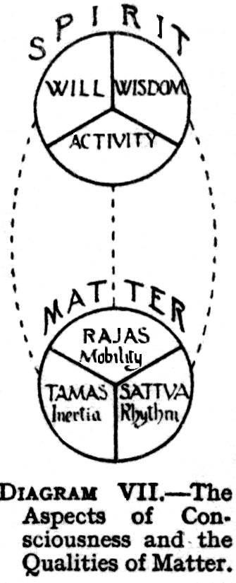
The Monads themselves, therefore remain ever beyond the fivefold universe, and in that sense are spectators. They dwell beyond the five planes of matter. They are the Self, standing Self-conscious, and Self determined. They reign in changeless peace and live in eternity. But, as we have seen, they appropriate matter, taking to themselves atoms of various planes.
The Monads are of
seven types or "rays" just as matter also is of seven types or rays. The process
by which the seven types arise is as follows: The three aspects of consciousness
of the Logos or Universal Self, are Will [Ichchha], Wisdom [Jnanam], and
Activity [Kriya]. The three corresponding, qualities in matter are Inertia
[Tamas], Mobility [Rajas] and Rhythm, [Sattva].
These are related as follows: The Aspect of Will imposes on matter the quality
of Inertia or Tamas, the power of resistance, stability, quietude.
The Aspect of Activity gives to matter its responsiveness to action, Mobility, or Rajas.
The Aspect of Wisdom gives to matter Rhythm or Sattva, harmony. DIAGRAM VII shows these correspondences.
Now every Monad has these three aspects of consciousness, the proportions, of which may vary in different Monads in seven ways: thus:-
| Predominant Aspect | Secondary Aspect | Tertiary Aspect |
| Will | Wisdom | Activity |
| Will | Activity | Wisdom |
| Wisdom | Will | Activity |
| Wisdom | Activity | Will |
| Activity | Will | Wisdom |
| Activity | Wisdom | Will |
The seventh variety is that in which the three aspect are equal.
The seven types of matter are similarly formed, by the varying proportions of the three qualities Tamas, Rajas, and Sattva. The stream of life known as the Second Outpouring, in fact, is composed of seven streams , one of the seven types of matter-combinations being found in each of the seven streams.
DIAGRAM VIII is an attempt to show the seven types of monads with the seven corresponding types of matter.
Another way of expressing the same truth, viz., that each Monad belongs to one or other of the seven Rays, is to say that he came forth originally through one or other of the Seven Planetary Logoi, who may be regarded as centres of force within the Solar Logos, channels through which the force of the Solar Logos is poured out.
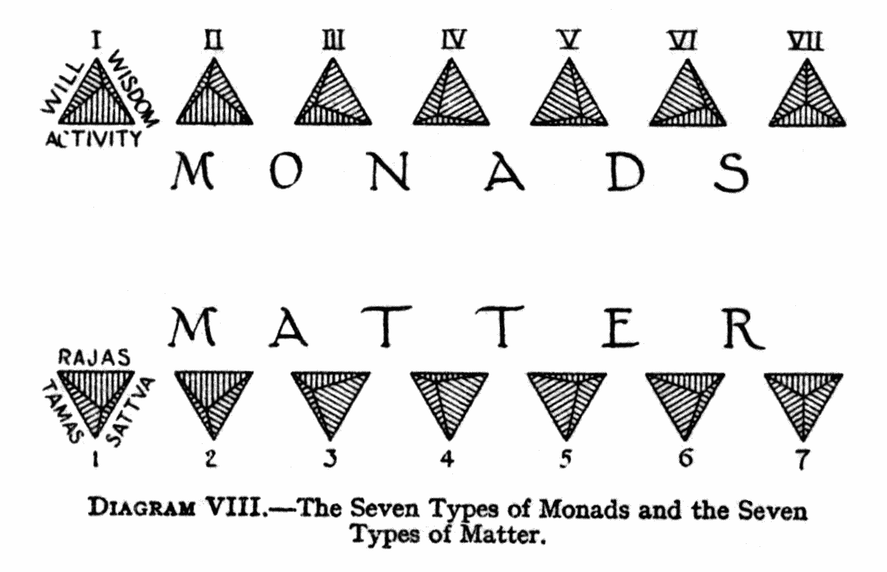
Furthermore, the bodies of those Monads, which originally came forth through, a given Planetary Logos, will continue all through their evolution to have more of the particles of that Logos than of any other, and in this way men can be distinguished as primarily belonging to one or other of the seven Rays or Logoi.
Whilst the ordinary rule is that a Monad remains on the same Ray throughout the whole of his evolution, so that he eventually returns through the same Planetary Angel as that through which he first came forth, yet there are comparatively, rare exceptions. For it is possible for a Monad to change his Ray so that he will return through a Planetary Angel other than that through which he first emerged. Such transfers are usually to the First and Second Rays there being relatively few persons on those two Rays at the lower levels of evolution.
Before we can proceed to describe the method by which the atoms are attached, to the Monads, there is still another factor with which we must first deal.
The Second Outpouring , in addition to its work of forming the Elemental and other Kingdoms, also brings with it evolved beings, at various stages of development, who form the normal and typical inhabitants of the Three Elemental Kingdoms. These beings have been brought over by the Logos from a preceding evolution. They are now sent forth to inhabit the plane for which their development fits them; they co-operate with the work of the Logos, and later with man, in the general scheme of evolution. From them, man derives his perishable bodies.
They are known in some religions as Angels, to Hindus as Devas—meaning literally, Shining Ones. Plato speaks of them as "Minor Gods". It is the translation of the word "Deva" as "Gods" which has led to much misapprehension of Eastern thought. The "thirty-three crores [330 millions] of Gods", are not Gods in the Western sense of the term, but are Devas or Shining Ones.
Of these there are many grades, including representatives on each of the five lower planes, i.e.., those of Atma, Buddhi, Manas, Kama, and the etheric part of the physical plane.
Their bodies are formed of the Elemental Essence of the Kingdom to which they belong, and are flashing and many-hued, changing form at the will of the entity Himself. They form a vast host, ever actively at work, labouring at the Elemental Essence to improve its quality, taking it to form their own bodies, throwing it off again and taking other portions, so as to render it more sensitive.
In the First Elemental Kingdom, on the higher mental or causal plane, they make materials ready to clothe abstract thoughts. In the Second Elemental Kingdom, on the lower mental plane, they make materials ready to clothe concrete thoughts. In the Third Elemental Kingdom, on the astral plane, they prepare materials for the clothing of desires.
At the stage which we are now considering, this work of improving the Elemental Essence, is the only work there is for them to do. Later on, they are also constantly busied in the shaping of forms, in aiding human egos on the way to incarnation in building their new bodies, bringing materials of the kind required and helping in its arrangements. The less advanced the ego, the greater the directive work of the Devas. With animals they do almost all the work, and practically all with the vegetables and minerals. They are the active, agents of the Logos, carrying out all details of His world-plan, and aiding, the countless evolving lives to find materials they need for their clothing and use. Included with them are the vast numbers of the fairy kingdom, known as nature spirits, trolls, gnomes, and by countless other names.
Some description of these hosts of beings is given in The Astral Body and The Mental Body, so that there is no need to describe them further here. All we are really concerned with at the moment is their origin, and the part they play in helping the Monads to commence their evolution in the lower planes.
The term Deva is, strictly speaking, not wide enough to cover all the living agencies which are employed in the work connected with the Monads and their long pilgrimage through the lower worlds. This work is carried out by no less than seven orders of beings, known collectively as Creative Hierarchies, the Monads, themselves, curiously enough, being one of the seven.
For our present purposes, however, in order not to make the description too complicated and involved, we shall denote all these agencies by the single term Devas. In a later and separate chapter we shall to some extent go over the ground again more in detail, and give the names and functions [so far as these are known] of the seven Creative Hierarchies.
Thus we see that before any embodied consciousness, save that of the Logos and His Creative Hierarchies, could appear, or do anything at all, a vast preliminary work had to be accomplished, preparing the "form-side" of the field of evolution.
We have now the
three factors needed to enable us to consider the attachment, of the atoms to
the Monads: these three are:
[1] the atoms of the various, planes;
[2] the readiness of the Monads themselves on the Anupadaka plane;
[3] the assistance of the Devas, without whom the Monads by themselves, would be
powerless to carry out their evolution.
A Monad, as we have seen, possesses three aspects of consciousness, each of which, when the time comes for evolutionary process to begin, sets up what may be termed a vibratory wave, thus causing to vibrate the atomic matter of the planes of Atma, Buddhi, and Manas, which surrounds him.
Devas from a previous universe, who have themselves passed through a similar, experience before, guide the vibratory wave from the Will-aspect of the Monad, to an atom of Atma, which thus becomes "attached" to the Monad, and is its Atmic permanent atom, so called because it remains with the Monad throughout the whole process of evolution.
Similarly, the vibratory wave from the Wisdom aspect of the Monad is guided, by Devas to an atom of Buddhi, which becomes the Buddhic permanent, atom.
Similarly, also, the vibratory wave from the Activity-aspect of the Monad is guided by Devas and attached to an atom of Manas, which becomes the third permanent atom. Thus is formed Atma-Buddhi-Manas, often called the Ray of the Monad.
DIAGRAM IX illustrates the process just described.
A graphic description of the process is as follows: from the luminous ocean of Atma a tiny thread of light is separated off from the rest by a film of buddhic matter, and from this hangs a spark which becomes enclosed in an egg-like casing of matter belonging, to the formless levels of the mental plane. "The spark hangs from the flame by the finest thread of Fohat". [The Book of Dzyan, vii,5.]
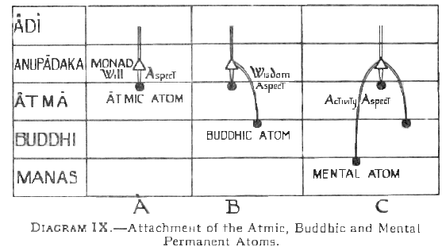
As said, those atoms which are attached to Monads become, and are called, "permanent atoms"; H.P. Blavatsky spoke of them as "life atoms" [ The Secret Doctrine, II,709].The remainder of the atoms of the various planes, which are not attached to Monads, remain and continue to be called the Monadic Essence of each plane. The term is perhaps a little misleading, but it was given in the first instance, because [as mentioned in chapter V] the essence at this stage is suitable to be attached to Monads as permanent atoms, though by no means all of it does actually become attached.
Atma-Buddhi-Manas, the Ray of the Monad, is known also by many other names; such as the Heavenly Man, the Spiritual or Higher Triad, the Higher Self, the separated Self, and so on. The term Jivatma is also sometimes applied to it, though Jivatma, which may be rendered literally Life-Self, is of course equally applicable to the Monad. It is known also as the "manhood" of the Divine Son of the First Logos, animated by the "Godhead," i.e., by the Monad. It may be regarded also as a vessel into which the Monad pours His life.
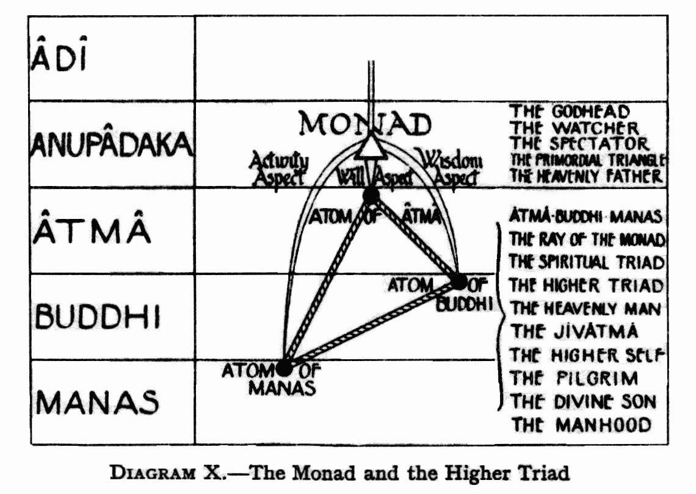
DIAGRAM X illustrates the Monad and his Higher Triad.
It is important to remember that Atma-Buddhi-Manas, the Higher Triad, is identical in nature with the Monad, in fact is the Monad, though lessened in force by the veils of matter round it. This lessening of power must not blind us to the identity of nature, for it must ever be born in mind that human consciousness is a unit, though its manifestations vary owing to the predominance of one or other of its aspects and to the relative density of the materials in which an aspect is working at any given moment.
The Monad having thus appropriated for his own use these three atoms, has begun his work. He himself in his own nature, cannot descend below the Anupadaka plane; hence he is said to be in "Silence and Darkness", i.e., unmanifest. But he lives and works in and by means of the atoms he has appropriated.
Although the Monad on his own plane, the Anupadaka , so far as his internal, life is concerned, is strong, conscious, capable, yet on the lower planes in their time and space limitations, he is a mere germ, an embryo, powerless, senseless, helpless. Although at first the matter of the lower planes enslaves, him, he will slowly, surely, mould it for Self-expression. In this he is watched over and aided by the all sustaining and preserving life of the Second Logos, until eventually he can live in the lower worlds as fully as he lives above, and become in his turn a creative Logos, and bring forth out of himself, a universe. For a Logos does not create out of nothing: He evolves all from Himself.
The full
manifestation of the three aspects of consciousness expressed by the Monad takes
place in the same order as the manifestation of the Triple Logos in the
universe. The third aspect, Activity, revealed as the creative mind, as the
gatherer of knowledge, is the first to perfect its vehicles. The second aspect,
Wisdom, revealed as the Pure and Compassionate Reason, or Intuition, is the
second to shine forth: this is the Krishna, the Christ in man. The third aspect,
Will, the Divine Power of the Self, the Atma is the last to reveal itself.
THE ATTACHMENT OF THE ATOMS
II LOWER TRIAD
The spiritual Triad, Atma-Buddhi-Manas, having been formed, the warmth of the stream of Logoic life arouses within it faint thrillings of responsive life. After long preparation, a tiny thread, like a minute rootlet, a golden coloured thread of life sheathed in buddhic matter, proceeds from the Triad.
This thread is sometimes called the Sutratma, literally the Thread-Self, because, the permanent particles will be threaded on it like beads on a string. The term however, is used in various ways, but always to denote the idea of a thread connecting separate particles. Thus it is applied to the reincarnating Ego, as the thread on which many separate, lives are strung: to the Second Logos, as the thread on which beings in His Universe are strung; and so on. It thus denotes a function, rather than a special entity or class of entities.
From each spiritual Triad appears one of these threads, which at first wave vaguely in the seven great streams of life. Then , each of them is anchored, just as happened in the case of the Higher Triad, by the agency of the Devas to a mental molecule, or unit as it is usually called, this being a particle of the fourth mental sub-plane, i.e.., The highest level of mental plane.
Around this mental unit, are gathered temporary aggregations of elemental essence of the Second Elemental Kingdom, scattering and regathering, over and over again. The vibrations of the essence gradually awaken the mental unit into faint responses, these again thrilling feebly upwards to the seed of consciousness in the Triad, producing, therein vaguest internal movements.
The mental unit cannot be said to have always round it a form of its own, for there may be several of many mental units plunged into a given aggregation of essence, whilst other aggregations of essence may have only one mental unit in them, or none at all.
Thus, with inconceivable slowness, the mental units become possessors of certain qualities: i.e.., they acquire the power of vibrating in certain ways, which, are connected with thinking, and will at a later stage make thoughts possible.
In this, they are helped by the Devas of the Second Elemental Kingdom, who direct upon them the vibrations to which they gradually begin to respond, and surround them with the elemental essence they, the Devas, throw off from their own bodies.
Furthermore, each of the seven typical groups is separated from the others by a delicate wall of monadic essence - atomic matter ensouled by the life of the Second Logos—the beginning of the wall of the future Group-Soul.
Diagram XI A, illustrates the process just described.
The whole process is then repeated at the next lower level [vide Diagram XI B]. The thread of life ensheathed in buddhic matter, with the mental unit attached, pushes outward to the astral plane, where, by identically similar means, an astral atom is attached. Round this astral permanent atom gather temporary aggregations of elemental essence of the Third Elemental Kingdom, scattering and regathering, as before.
Similar results follow, the astral atoms being gradually awakened to faint responses, these being passed upwards to the seed of consciousness, producing therein, once more, vaguest internal movements. Thus the astral permanent, atoms acquire the power of vibrating in certain ways, connected with sensation, which will at a later stage make sensation possible. As before the work is helped by the action of the Devas, of the Third Elemental Kingdom.
The separating wall of each of the seven groups now acquires a second layer, formed of astral monadic essence, thus approaching a stage nearer to the wall of the future Group-Soul.
Yet once more is the process repeated [vide Diagram XI C ] when the great wave of life has passed onwards to the physical plane. The thread of life, sheathed in buddhic matter, with its attached mental unit and astral permanent, atom, pushes outwards, and annexes a physical permanent atom. Round this atom etheric matter gathers, as before. .The heavier physical matter, however, is more coherent than the subtler matter of the higher planes, and consequently a much longer term of life is observed.
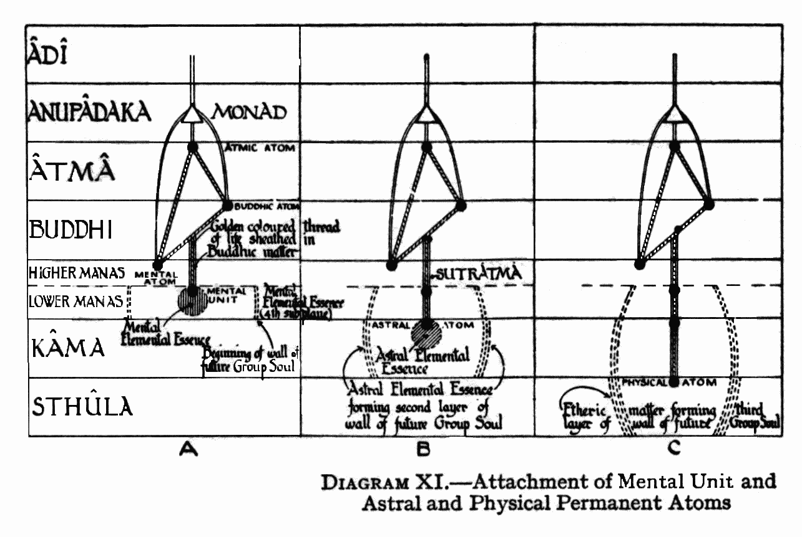
Then, as the etheric types of the proto-metals, and later proto-metals, metals, non-metals, and minerals are formed, the Devas of the etheric sub-planes submerge the physical permanent atoms into one or other of the seven etheric types to which they belong. Thus is begun the long physical evolution of the permanent atom.
Again, on the atomic sub-plane of the physical, a third layer is added to the separating wall which will form the envelope of the future Group-Soul.
In this manner is formed what is often called the Lower Triad, consisting of a mental unit, an astral permanent atom, and a physical permanent atom.
Diagram XII shows the stage which we have now reached, the Monad, with His three Aspects, having been provided with a Higher Triad of Atma-Buddhi-Manas, and the Higher Triad in its turn having been furnished with a Lower Triad of Lower-Manas-Kama-Sthula.
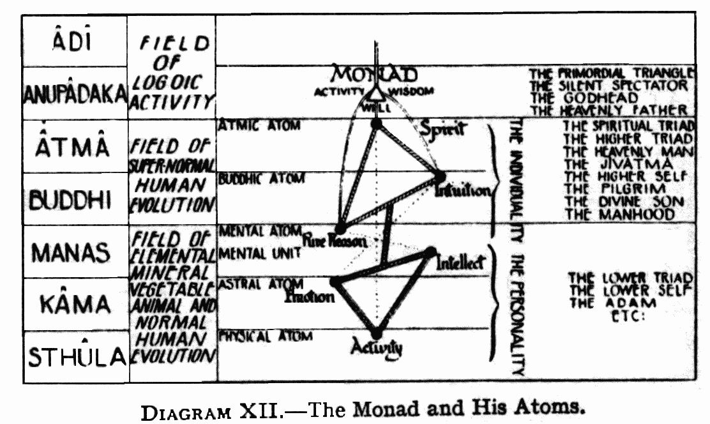
It will be remembered that the matter of each plane is of seven fundamental types, according to the dominance of one or other of the three great attributes, of matter - Tamas, Rajas, and Sattva. Hence the permanent atoms may be chosen from any one of these types. It appears however, that each Monad chooses all his permanent atoms from the same type of matter . The choice is made by the Monad, although, as we have seen, the actual attachment is done by the Devas.
The Monad himself belongs, of course, to one of the seven fundamental types of Monads, and this is his first great determining characteristic, his fundamental "colour", "keynote", or "temperament".
The Monad may choose to use his new pilgrimage for the strengthening and increasing of this special characteristic, in which case, the Devas will attach to his Sutratma permanent atoms belonging to the group or type of matter corresponding to the type of the Monad. Such a choice would result in the secondary colour - that of the permanent atoms - emphasing and strengthening the first: in the later evolution, the powers and weaknesses of that doubled temperament would show themselves, with great force.
On the other hand, the Monad may choose to use his new pilgrimage for the unfolding of another aspect of his nature. Then the Devas will attach to his Sutratma atoms belonging to another matter-group, in which the aspect the Monad wishes to develop is predominant. This choice would result in the secondary "keynote" or "temperament" modifying, the first, with corresponding results in later evolution. This latter choice is obviously by far more frequent, and it tends to greater complexity of character, especially in the final stages of human evolution, when the influence, of the Monad makes itself felt more strongly.
Whilst the permanent atoms of both the Higher and the Lower Triads belong to the same type, the bodies of the Higher Triad, being, once formed, relatively, permanent, reproduce definitely the keynote of their permanent atoms. But in the case of the bodies of the Lower Triad, various other causes operate, in the determination of the choice of materials for these bodies.
The Monad can exert no direct action on the permanent atoms: nor could there be such direct action until the Higher Triad has reached a high stage of evolution. But the Monad can and does affect the Higher Triad, and through that exerts an indirect and continual action on the permanent atoms.
The Higher Triad
draws most of his energy, and all his directive capacity, from the Second Logos.
But his own special activity does not concern itself with the shaping and
building work of the Second Logos, being directed rather, to the evolution of
the atoms themselves, in association with the Third Logos. This energy from the
Higher Triad confines itself to the atomic sub-planes, and until the Fourth
Round, appears to spend itself chiefly on the permanent atoms.
The use of the permanent atoms is of course, to preserve within themselves, as
powers of vibration, the results of all the experiences through which they have
passed. We may take the physical permanent atom as illustrating this process.
A physical impact
of any kind will set up, in the physical body it strikes, vibrations
corresponding to its own. These vibrations will be transmitted, by direct,
concussion if they are violent, and in all cases by the buddhic life-web to the
physical permanent atom.
Such a vibration , forced on the atom from the outside, becomes in the atom a
vibratory power, a tendency to repeat the vibration. Thus through the whole life
of the physical body, every impact leaves an impression on the physical
permanent atom. At the end of the life of the physical body, the physical
permanent atom has in this way stored up innumerable powers of vibration.
The same process takes place in the case of the permanent atom or unit in each
of the bodies of man. Moreover, the student will by now be familiar with the
fact that the permanent atoms - as their name implies – remain permanently with
a human entity throughout the whole of his many incarnations, being, in fact,
the only portions of his various bodies which survive and remain
permanently with the evolving ego in the causal body.
The vortex, which is the atom, is the life of the Third Logos; the wall of the
atom, gradually formed on the surface of this vortex, is made by the descent of
the life of the Second Logos. But the Second Logos only faintly traces the
outline of the spirillae, as filmy channels: He does not vivify them.
It is the life of the Monad which, flowing down, vivifies the first of the spirillae,making it a working part of the atom. This takes place in the First Round. Similarly, in each successive Round, another of the spirillae is vivified and brought into activity.
The first set of spirillae is used by the prana which affects the dense body; the second set with the prana used by the etheric double; the third set by the prana affecting the astral body, thus developing the power of sensation; the fourth set is used by the prana of kama manas, making it fir to be used for the building of a brain as the instrument of thought.
As we are now in the Fourth Round, the normal number of spirillae at work is four, both in the permanent atoms, and in the ordinary unattached atoms. But in the case of a highly evolved man, the permanent atom may have five spirillae at work, or even six. The fifth set of spirillae will in the normal course, be developed in the Fifth Round; but advanced people, as said, can by certain Yoga practices evolve even now both the fifth and sixth sets of spirillae.
In addition to the permanent atoms themselves, the Monad also begins to work in a similar fashion on other atoms that are drawn round the permanent atom. Such vivification, however, is temporary only, as, when the physical body is broken up, these atoms return to the general store of atomic matter. They may then be taken up and used by some other Monad, being, of course, now more easily vivified again, on account of their former experience.
This work takes place with all the permanent atoms of the Monad, such atoms, thus evolving more rapidly than they would otherwise do, owing to their association with the monad.
CHAPTER VIII
THE CREATIVE HIERARCHIES
As promised in
Chapter VI, we now come to describe more in detail the hierarchies of beings, of
various grades of power and intelligence, who build the universe, and help the
Monads to undertake their vast pilgrimage through the worlds of matter.
The information at present available is somewhat fragmentary and ill defined
whilst recognising that this is so, we must endeavour to make the most of such
few facts at our disposal.
We have already seen that the One Existence, the Supreme, from Whom all manifested life proceeds, expresses Himself in a threefold manner, as the Trimurti, the Trinity. This of course, is recognised in practically every religion, under many names: e.g.., Sat, Chit, Ananda: Brahma, Vishnou, Shiva: Ichchha,Jnana, Kriya: Cochma, Binah, Kepher: Father, Son and Holy Spirit: Power, Wisdom, Love: Will , Wisdom and Activity, etc.etc.
Around the primary Trinity, in the light coming forth from Them, we find Those who are called the Seven. The Hindu speaks of the seven sons of Aditi: they have been called the Seven Spirits in the Sun: in Egypt They were known as the seven Mystery Gods: in Zoroastrianism they are named the seven Amshaspends,: in Judaism they are the seven Sephiroth: among Christians and Muhammedans, they are the seven Archangels, the seven Spirits before the Throne. In Theosophy they are usually termed the seven Planetary Logoi, each administering, His own department of the solar-system. They have ever been identified with the seven sacred planets, the planets being their physical bodies.
Round the Seven, is
a wider circle, there come the Creative Hierarchies, as they are called: the
Twelve Creative Orders of the Universe. These are headed by the Twelve Great
Gods, that appear in ancient stories, and that are symbolised in the familiar
Signs of the Zodiac. For the Zodiac is a very ancient symbolic conception, in
which the plane of the solar system is written.
When it is said that a planet "rules" or is Lord of, one of the Signs of the
Zodiac, the meaning is that the Planetary Spirit or Logos has dominion over one
of the twelve Creative Hierarchies which, under His control and direction build
up, His Kingdom, and help the Monads to evolve.
The Twelve Creative Hierarchies are thus intimately concerned with the building, of the universe. These Hierarchies of Intelligence have, in past kalpas or universes, completed their own evolution, and thus become co-workers with the One Will, with Ishvara, in the shaping of a new universe, or Brahmanda. They are the Architects, the Builders of the solar systems. They fill our solar system, and to them, we human beings owe our evolution spiritual, intellectual and physical. It is they who awaken the consciousness of the Monad and his Ray to the "dim sense of others", and of "I", and with this, a thrill of longing for a more clearly defined sense of the "I" and of "others", this being the "individual Will-to-live", which leads them forth into the denser worlds, wherein alone such sharper definition is possible.
At the present stage of evolution, out of the Twelve Creative Hierarchies, four have passed onward into liberation, and one is touching the thresh hold of liberation. Thus five have passed away from the ken of even the greatest and most developed Teachers of our world. There remain, therefore, seven only, with whom we have to deal.
Part of the work which some of them do, viz., the attaching of the permanent atoms , has already been described in Chapters VI and VII. This will now be repeated for the sake of completeness, with such few further particulars as are available, the whole work being classified into the departments for which each of the remaining seven Hierarchies is responsible.
A- THE ARUPA CREATIVE ORDERS
1. The First of the Arupa, or Formless, Creative Orders, is described by words connected with fire. They are known as Formless Fiery Breaths, Lords of Fire, Divine Flames, Divine Fires, Fiery Lions, Lions of Life. They are described also as the Life and Heart of the universe, the Atma, the Kosmic Will.
Through them comes the divine Ray of Paramatma, that awakens Atma in the Monads.
2. The Second Order
is twofold in its nature, and is known as the "twofold units", representing Fire
and Ether. They stand for Kosmic Buddhi, the Wisdom of the system, manifested
Reason.
Their function is to arouse Buddhi in the Monads.
3. The Third Order is know as "the Triads", representing Fire, Ether and Water. They stand for Mahat, the Kosmic Manas or Activity.
Their function is to awaken Manas in the Monads
B- THE RUPA CREATIVE ORDERS
4. The Fourth Creative Hierarchy consists of the Monads themselves.
At first sight, it may appear curious that the Monads themselves should be classed with the other Orders, but a little thought will show that the classification, is a proper one , the Monads clearly having a great deal to do with their own evolution. It is by no means outer agencies alone that determine their involution and evolution. Let us briefly recapitulate some of the factors due to the Monads themselves.
[1] Being of the First Logos, His will to manifest is also their will: they are self-moved[2] It is the Monads who "shine forth" sending out their life, which builds the Ray or Higher Triad, and works through it.
[3] It is the Monads who choose the type of permanent atoms which are to be attached to them.
[4] The Third Outpouring, resulting from which the Causal Body is formed, comes through the Monads themselves.
[5] The Monads themselves pour down their life into and vivify the spirillae In the atoms, both permanent and other.
[6] The Monads, as evolution proceeds, steadily pour down more and more of their lives, gradually getting more closely into touch with their Rays—the Individuality, and also through the Individuality, with the personality.
5. The Fifth Creative Hierarchy is named that of Makara, and has for its symbol, the pentagon. In them the dual spiritual and dual physical aspects of nature appear, the positive and negative, at war with each other. They are the "rebels" of many myths and legends. Some of them are known as Asuras, and were the fruits of the First Chain. They are beings of great spiritual power and knowledge. Deep within themselves they hide the germ of Ahamkara, the I-making faculty which is necessary for human evolution.
The Fifth Hierarchy guides the vibratory wave from the Aspect of Atma of the Monad to an atom of Atma, which it attaches as a permanent atom.
6. The Sixth Creative Hierarchy contains some who are known as Agnishvattas, and also as the "sixfold Dhyanis". They are the fruit of the Second Planetary Chain.
This Hierarchy includes also great hosts of Devas.
They guide the vibratory wave from the Wisdom aspect of the Monad to the Buddhic permanent atom.
Further they give to man all but the Atma and the physical body, and so are called the "givers of the five middle principles" . They guide the Monad in obtaining the permanent atoms [including of course the mental unit] connected with these principles, i.e.., Buddhi, Manas, Lower Manas, Kama, and the Etheric Double.
They have especially to deal with the intellectual evolution of man.
7. The Seventh Creative Hierarchy contains those known as Lunar Pitris, or Barhishad Pitris,: these are the fruit of the Third Chain.
They have to do with the physical evolution of man.
Also belonging to the Seventh Hierarchy, are vast hosts of Devas, the lower Nature Spirits, who have to do with the actual building of the body of man.
For the convenience of the student, a tabular statement of the Creative Hierarchies is appended.
| Class | No. | Name | Function of evolution in monads | Notes |
| ARUPA | 1 | Fiery breathes | Awaken Atma | |
| 2 | Twofold Units | Awaken Buddhi | ||
| 3 | Triads | Awaken Manas | ||
| RUPA | 4 | Monads |
Will
to Manifest. Shine forth and build Ray. Choose type of permanent atoms. Channels for Third Outpouring Vivify spirillae of atoms. Influence Individuality and Personality |
|
| 5 | Makara(including Asuras) | Attach atom of Atma | Asuras were Fruit of First Chain | |
| 6 | Agnishvattas |
Give
5 "Middle principles". Attach 4 permanent atoms and mental unit Concerned with intellectual evolution of man |
Fruit of Second Chain | |
| 7 | Barhishads | Concerned with physical evolution of man | Fruit of Third Chain | |
CHAPTER IX
GROUP SOULS
We have now arrived at the stage where each Monad is provided with a Higher Triad, consisting of a permanent atom of the planes of Atma, Buddhi and Manas, and a Lower Triad consisting of a mental unit, an astral and a physical permanent atom. These particles of matter are, of course, merely nuclei which enable the Monad, through his "ray", to come into touch with the various planes, and to build bodies or vehicles through which he can gather experiences from, and learn to express himself on, those planes of existence.
In order to understand the mechanism by which these results are achieved, we must next study the phenomena known as Group-Souls.
We have already seen that as the atoms of the Lower Triad are attached to the Sutratma, or life-thread, thin films of matter come into existence, separating, the seven main types of triads from one another. Thus are formed the seven primary groups or "rays" of triads which, by repeated division and subdivision, will give rise to large numbers of Group-Souls in the various kingdoms of life.
These seven great
types or "rays" of Group-Souls remain separate and distinct, throughout all the
vicissitudes of their evolution: that is to say, the seven types evolve in
parallel streams, the streams never uniting or merging into one another. The
seven types are clearly distinguishable in all kingdoms, the successive forms
taken by anyone of them making a connected series of elementals,
minerals,vegetables,or animals, as the case may be.
These seven primary Group-Souls appear as vague, filmy forms, floating in the
great ocean of matter as balloons might float in the sea. They are seen first on
the mental plane, becoming more clearly outlined on the astral plane, and still
more so on the physical plane.
They float, one in each of the seven main streams of the Second Life Wave.
Within each Primary
Group-Soul there are, of course, innumerable Lower Triads, each connected by the
radiant golden thread to its Higher Triad, these again depending from the
overhanging Monad. As yet no golden life web appears round the Triads; this will
not come into existence until the mineral kingdom is reached.
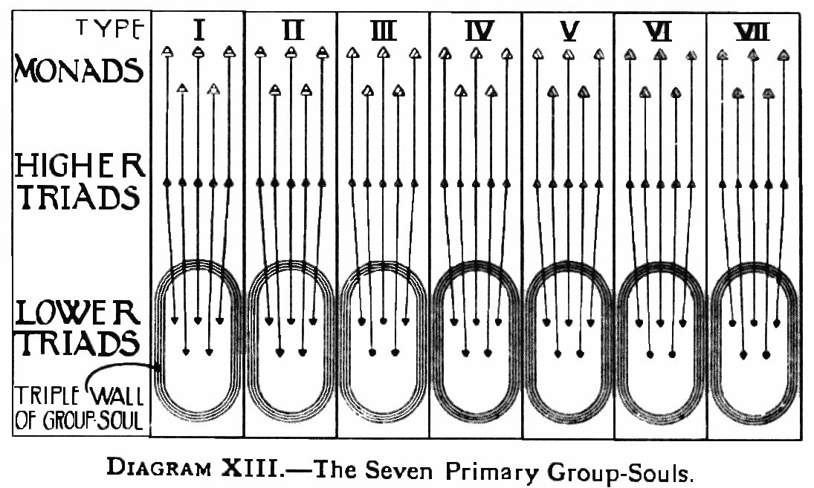
The stage shown in the diagram is that at which the thin film or veil
separating, the seven Primary Group-Souls, has received its three layers: these
consist of mental essence, astral monadic essence and atomic matter of the
physical plane. As already stated, these films or veils will eventually form the
containing walls or envelopes of the Group-Souls proper.
It should be noted that these envelopes are formed of matter of the same Matter-group as that to which the Triads themselves belong.
The general plan of the evolutionary process—more strictly the involutionary process—is, as we have seen, a gradual differentiation of the great stream of divine life, until, after repeated division and subdivision, definite individualisation as a human being is attained, after which no further subdivision is possible, a human entity being an indivisible unit or "soul".
Group–Souls, which exist in the mineral, vegetable, and animal kingdoms thus represent intermediate stages leading up to complete differentiation into separate human entities or units. Hence in the three kingdoms mentioned, we do not find one soul in a block of mineral, or a plant or an animal. Instead of this, we find one block of life - it we may use such a term - ensouling , a vast quantity of mineral substance, a large number of plants or trees, or a number of animals. Into the details of these we will enter later, confining ourselves for the moment to a consideration of the general function and purpose of the Group-Souls.
The best physical analogy of a Group-Soul is perhaps the oriental one of water in a bucket. If a glassful of water be taken from the bucket, it represents, the soul—or portion of soul—of say , a single plant or animal. For the time being, the water in the glass is quite separate from that in the bucket, and, moreover, it takes the shape of the glass which contains it.
So may a portion of a Group-Soul occupy and vivify a vegetable or animal form.
An animal, during its life on the physical plane, and for some time after that in the astral world - has a soul, just as separate as a man's; but when the animal comes to the end of its astral life, that soul does not reincarnate in a single body, but returns to the group-soul, which is a kind of reservoir of soul-matter.
The death of the animal would thus, in our analogy, be represented by pouring water from the glass back into the bucket. Just as the water from the glass becomes thoroughly mixed and united with the water in the bucket, so does the portion of the soul from the particular animal become mixed and incorporated, with the total soul in the Group-Soul. And just as it would not be possible, to take again from the bucket another glassful consisting of the same molecules of water, so is it not possible for the same portion of the total soul in the Group Soul to inhabit another particular animal form.
Continuing the analogy further, it is clear that we could fill many glasses with water from the bucket at the same time: equally is it possible for many animal forms to be ensouled and vivified by the same Group-Soul.
Further, if we suppose that any given glassful of water becomes coloured with a distinctive hue of its own, then, when the water is poured back into the bucket , that colouring matter will be distributed throughout the whole of the water in the bucket, the colour of all the water in the bucket being thereby to some extent modified.
If we consider the colouring matter to represent experiences or qualities acquired by a particular animal, then, when the portion of soul vivifying that animal returns to its parent Group-Soul, those experiences or qualities will become part of the general stock of the whole Group-Soul and be shared by every other part of it equally, though in a lesser degree than that in which the experience existed in the particular animal to whom it occurred; i.e., we may say that the experiences concentrated in a particular animal are spread, in a diluted form, over the whole Group-Soul to which the animal is attached.
There is an exact resemblance between the Group-Soul in the Mineral, Vegetable, and Animal Kingdoms, and a human child it its prenatal life. Just as the human child is nourished by the life-stream of the mother, so does the protective envelope of the Group-Soul nourish the lives within it, receiving and distributing the experiences gathered in it.
The circulating life is that of the parent: the young plants or animals are not yet ready for individual life, but must depend on the parent for nourishment. Thus the germinating lives of mineral, vegetable, and animal are nourished by the envelope of elemental and monadic essence, thrilling with Logoic life.
The evolution of
lives in these early stages in the Group-Soul, depends upon three factors:
[a] first, and chiefly, the cherishing life of the Logos;
[b] the co-operating, guidance of the Devas:
[c] their own blind pressure against the limits of the enclosing form.
The general mechanism of the process by which, through these three agencies, the vibratory powers of the atoms in the Lower triads are awakened, is as follows:
The Second Logos, acting in the envelope of the Group-Soul, energises the physical permanent atoms. These are plunged, by the action of the devas, into the various conditions offered by the mineral kingdom, where each atom is attached to many mineral particles. The experiences - consisting of heat, cold, blows, pressure, shaking, etc. - through which the mineral substances pass, are conveyed to the attached physical permanent atoms, thus arousing vague answers of sympathetic vibration from the deeply slumbering consciousness within.
When any permanent atom has reached a certain responsiveness, or when a mineral form, i.e., The particles to which the permanent atom is attached, is broken up, the Group-Soul withdraws that atom into itself.
The experiences acquired by that atom—i.e., The vibrations it has been forced to execute - remain in it as powers of vibrating in particular ways, as vibratory powers in short. Then the permanent atom, having lost its embodiment in the mineral form, remains, as we might say, naked in its Group-Soul: here it continues to repeat the vibrations it has learnt, repeating its life experiences, and thus setting up pulses which run through the envelope of the Group-Soul, and are thereby conveyed to the other permanent atoms contained in that Group-Soul. Thus each permanent atom affects and helps all others.
Now another important phenomenon arises. It is clear that those permanent atoms which have had experiences similar in character will be affected more strongly by each other, than will be those whose experiences have been different,. Thus a certain segregation will take place within the Group-Soul, and presently a filmy separating wall will grow inwards from the envelope, dividing these segregated groups from each other.
Reverting to the simile of the water in the bucket, we may conceive of a scarcely perceptible film forming itself across the bucket. At first the water filters through this barrier to some extent: but nevertheless the glasses of water taken out from one side of that barrier are always returned to the same side, so that by degrees the water on one side becomes differentiated from the water on the other side. Then the barrier gradually densifies, and becomes, impenetrable, so that eventually there are two distinct portions of water instead of one.
In similar fashion, the Group-Soul after a time divides itself by fission, and forms two Group-Souls. The process is repeated over and over again, producing, an ever-increasing number of Group-Souls, with contents showing a correspondingly ever-increasing distinction of consciousness, while of course, still sharing certain fundamental characteristics .
The laws according to which permanent atoms in a Group-Soul are plunged into the kingdoms of nature are as yet by no means clear. There are indications, that the evolution of the mineral, vegetable and the lowest part of the animal kingdom belongs rather to the evolution of the earth itself than to that of the Triads, representing the Monads, who are evolving in the solar system and who come, in due course, to the earth to pursue their evolution by utilising, the conditions it affords.
Thus, grass and small plants of every kind seem to be related to the earth itself much as man's hairs are related to his body, and not to be connected with the Monads and their Triads. The life in grass, etc., appears to be that of the Second Logos, which holds them together as forms, whilst the life in the atoms and molecules composing them is, of course that of the Third Logos, modified not only by the Planetary Logos of our system of Chains, but also by a somewhat obscure entity known as the Spirit of the Earth. Thus these kingdoms, while offering a field for the evolution of Monads and their Triads, do not appear to exist by any means solely for that purpose.
Hence we find permanent atoms scattered through the vegetable and mineral kingdoms, though we do not as yet understand the reasons governing their distribution. A permanent atom, for example, may be found in a pearl, a ruby, or a diamond; many will be found scattered through veins of ore and so on. But on the other hand, much mineral substance does not seem to contain any permanent atoms.
Similarly, with short-lived plants. But in plants of long continuance, such as trees, permanent atoms are constantly found. But here again, the life of the tree seems to be more closely related to the Deva evolution than to the evolution of the consciousness to which the permanent atom is attached.
It is, therefore, rather as though advantage were taken of the evolution of life and consciousness in the tree for the benefit of the permanent atom. The permanent atom may thus be said to be there more as a parasite, profiting by the more highly evolved life in which it is bathed. The student must recognise that at the moment our knowledge on these matters is extremely fragmentary.
Having now studied the general nature and functions of Group-Souls, we can pass on to consider more in detail Mineral, Vegetable and Animal Group-Souls, commencing with the Mineral Group-Soul.
MINERAL GROUP SOULS
DIAGRAM XIV is an attempt to illustrate a Mineral Group-Soul. It will be seen that the wall or envelope of the Group-Soul has three layers: the outermost is composed of physical atomic matter; the central one of astral monadic essence; the innermost one of mental elemental essence, i.e., matter of the fourth mental sub-plane.
A mineral
Group-Soul may thus be defined as a collection of Triads, enclosed in a triple
envelope consisting of mental elemental essence, astral monadic essence, and
physical atomic matter.
Within the Group-Soul are shown some Lower Triads, attached of course, to their
respective Higher Triads, these again being linked to their overshadowing
Monads. These Triads within the Group-Soul are not at the moment plunged into
any mineral substance.
Below the Group-Soul are shown a number of irregular shapes, which are intended
to represent groups or blocks of mineral substances. Within some of these blocks
are to be seen some Lower Triads, the lines rising upwards from these indicating
that they belong to their parent Group-Soul hovering over them .
On the extreme right of the diagram is shown a block of mineral substance which
is supposed to have been in some way shattered, so that it is broken up into
fragments . The Lower Triad, which previously was immersed in it, is shown in
the act of withdrawal towards its parent Group-Soul, [as described on
page 49 of the book ]
The habitat of the Mineral Group-Soul may be said to be that of its densest
envelope, i.e., the physical in other words, the most active working of
the Mineral Group-Soul is on the physical plane.
Every Lower Triad
has to pass through the mineral kingdom, this being the place where matter
reaches its grossest form, and where the great Life-Wave reaches the limit of
its descent, and turns to begin its upward climbing.
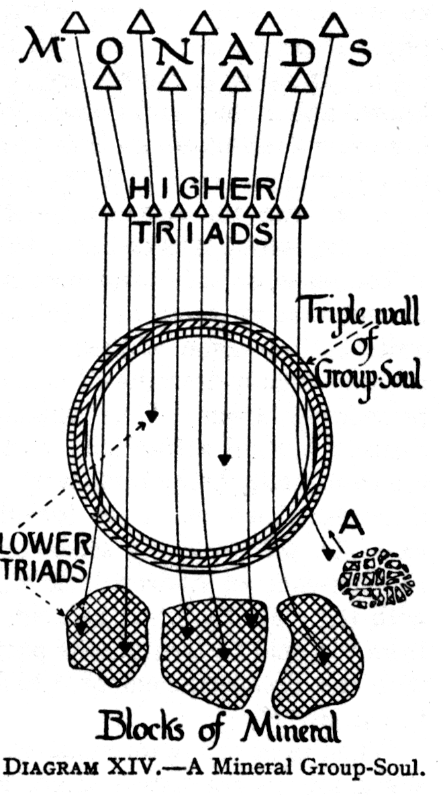
By prolonged experiences, the consciousness feels the pleasure or pain arising, from the impacts, identifies itself with that pleasure or pain, and begins to regard as not itself that which touches its external surface. Thus is formed, the first rough distinction between "Not-I " and " I ".
As experiences accumulate, the " I" will retreat ever inwards, throughout the whole of its future evolution, one veil of matter after another being relegated outwards as belonging to the "Not-I ". But, while its ---------connotations steadily change, the fundamental distinction between subject and object ever remains. " I " is the consciousness which wills, thinks, feels, acts; " Not-I " is that about which the consciousness wills, thinks, feels, or acts.
Consciousness thus awakens on the physical plane, as we have said, and its expression is through the physical permanent atom. In this atom lies sleeping : "It sleeps in the mineral," according to a well known aphorism; and therein some degree of awakening must take place, so that it may be roused, out of this dreamless sleep, and become sufficiently active to pass on into the next stage - that of the vegetable kingdom, where it is destined to "dream".
The responses of consciousness to external stimuli in the mineral kingdom are far greater than many may quite realise, some of these responses indicating, that there is even a dawning of consciousness in the astral permanent atom. Thus chemical elements exhibit distinct mutual attractions, and chemical compounds are continually being broken up, when another element intrudes. Two elements, forming a silver salt, for example, will suddenly separate from one another, in the presence of hydrochloric acid, the silver uniting with the chlorine from the acid, leaving the hydrogen from the acid to form a new partnership or compound with the discarded element, which formerly was united to silver.
When such active interchanges take place, there is a slight stir in the astral atom, in consequence of the violent physical vibrations set up by the formation of, and a wrenching apart of, intimate ties.
Thus astral consciousness is slowly aroused from the physical, a little cloud of astral matter being drawn round the astral permanent atom by these slight thrillings. This astral matter is, however, very loosely held, and seems to be quite unorganised.
At this stage, there does not seem to be any vibration in the mental unit.
No detailed list has as yet been made of minerals, plants or animals, of the Seven Rays or types; but the following list of jewels and minerals is a beginning of the classification which will no doubt some day be made.
| RAY | Jewel at head of Ray | Other jewels on same Ray |
| 1 | Diamond | Rock Crystal |
| 2 | Sapphire | Lapis Lazuli, Turquoise, Sodalite |
| 3 | Emerald | Aquamarine, Jade, Malachite |
| 4 | Jasper | Chalcedony, Agate, Serpentine |
| 5 | Topaz | Citrine, Steatite |
| 6 | Ruby | Tourmaline, Garnet, Carnelian,Carbuncle, Thulite, Rhodonite |
| 7 | Amethyst | Porphyry, Violane |
CHAPTER XI
VEGETABLE GROUP SOULS
A
VEGETABLE Group-Soul is illustrated in DIAGRAM XV.
It will be observed that the wall of the Group-Soul has now two layers only; the
outer one is composed of astral monadic essence, i.e.., of astral atomic matter;
the inner one of mental elemental essence, of matter of the fourth mental
sub-plane. The physical layer, which the envelope of the Mineral Group-Soul
possessed, has thus disappeared, as though absorbed, by the contents of the
Group-Soul, for the strengthening of their own etheric bodies.
Within the Group-Soul are shown some Lower Triads, attached to their respective
Higher Triads, these being again linked with their overshadowing Monads. The
Lower Triads within the Group-Soul are not at the moment directly associated
with any plant life.
Below the Group-Soul are shown a number of forms which are intended to indicate groups of plants or vegetable lives. Within some of these are found some Lower Triads, the lines between these and the Group-Soul indicating that they belong to the parent Group-Soul which hovers over them.
As in the case of the Mineral Group-Soul, at A, on the extreme right of the diagram, there is shown a plant form which is supposed to have been destroyed as an organism; the Lower Triad, which was embedded in it, is released, on the destruction of the form, the Group-Soul then withdrawing it back into itself, as indicated by the arrow in the diagram.
The activity of the Group-Soul is now transferred from the physical to the astral, plane, its work being the nourishment of the astral bodies of the lives it contains.
Precisely as in the case of the Mineral Group-Souls, we may repeat that it is not to be supposed that every blade of grass, every plant, every tree, has a permanent atom within it, evolving to humanity during the life of our system. It is rather that the vegetable kingdom, which exists on its own account, and for other purposes, also affords the field of evolution for these permanent atoms, the Devas guiding the permanent atoms to one plant form after another, so that they may experience the vibrations that affect the vegetable world and again store up these as vibratory powers in themselves as they did whilst, they were embedded in the mineral kingdom.
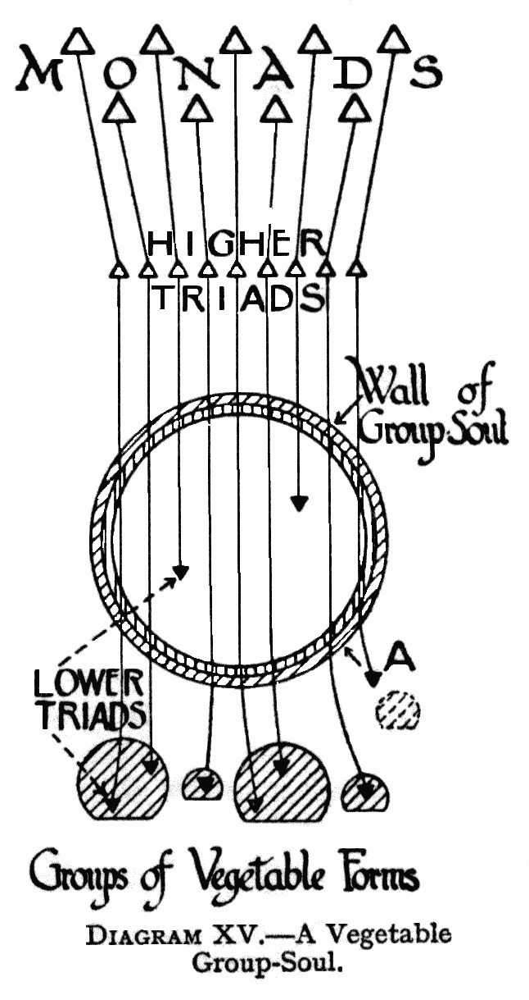
During the time that is spent in the vegetable kingdom, there is more activity, perceptible in the astral permanent atom, than was the case during the period spent in the mineral kingdom. In consequence, the astral permanent atom attracts round itself astral matter, which is arranged by the Devas in a rather more definite way. In the long life of a forest tree, the growing aggregation of astral matter develops itself in all directions as the astral form of the tree. That astral form experiences vibrations, which cause "massive" pleasure or discomfort, set up in the physical tree by sunshine and storm, wind and rain, heat and cold, etc., these experiences being passed on, to some extent, to the permanent atom embedded in that particular tree. As stated before, when the tree–form perishes as a tree, the permanent atom retreats within the Group-Soul taking with it its rich store of experiences, which it shares in the manner previously described, with the other Triads in the Group-Soul.
Furthermore, as the
consciousness becomes more responsive in the astral, it sends little thrills
down to the physical plane; these give rise to feeling which, though really
derived from the astral, are yet felt as though in the physical.
When there has been a long separate life, as ,for example, in a tree, there will
be a slight arousing of the mental unit, which will gather round it a little
cloud of mental matter; on this the recurrence of seasons, etc., will slowly
impress itself as a faint memory, which becomes a dim anticipation.
As a general rule, in fact, it appears that each Lower Triad, during the later stages of its evolution in the vegetable world, will have a prolonged experience, in a single form, in order that some thrills of mental life may be experienced, and the Lower Triad thus be prepared to profit, in due time, by the wandering life of an animal. The rule however, is not universal, for it also appears that, in some cases, the passage into the animal kingdom is made at an earlier stage, so that the first thrill in the metal unit occurs in some of stationary forms of animal life, and in very lowly animal organisms. For conditions, similar to those described as existing in the mineral and kingdoms, appear to prevail also in the lowest types of animals. In other words, the kingdoms appear to overlap to some extent.
CHAPTER XII
ANIMAL GROUP SOULS
An animal Group-Soul is illustrated in DIAGRAM XVI. As will be seen from from the diagram, the envelope of the Group-Soul now has but a single layer, consisting of elemental essence of the fourth mental sub-plane. The astral layer, which the Vegetable Group-Soul possessed, has been absorbed for the strengthening of the vague astral bodies of the Triads within the Group-Soul.
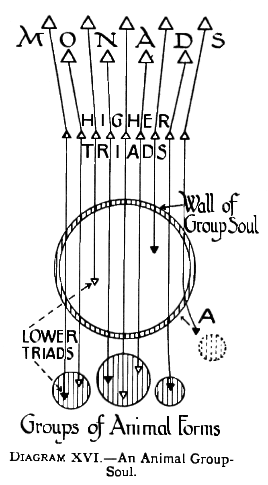
DIAGRAM XVI is on lines exactly similar to those of DIAGRAMS XIV and XV. At "A" is an animal form which, as a form, has been destroyed. Consequently, the Lower Triad from it is being withdrawn into the Group-Soul as indicated by the arrow in the diagram.
Just as in the
earlier kingdoms, the Devas guide the Triads into animal forms. Also, as in the
mineral and vegetable kingdoms, the lower forms of animal life, such as
microbes, amoebae, hydrae,etc., show a permanent atom only as a visitor, now and
again, and obviously in no way depend upon it for their own life and growth, nor
do they break up when the permanent atom, is withdrawn. These animal forms are
thus merely hosts, which from time, to time receive permanent atoms as passing
guests: in no sense are they bodies formed round a permanent atom.
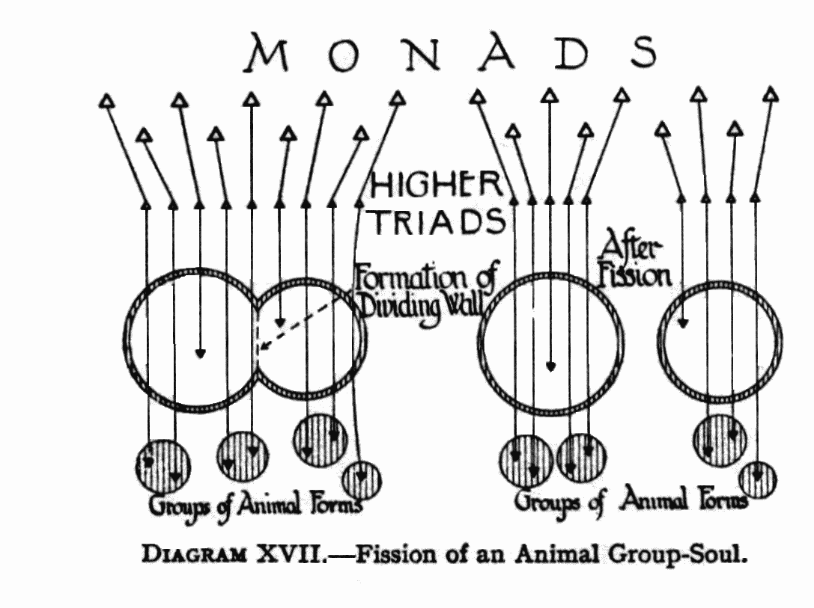
In fact, before the Devas, at a much later stage, build forms round these permanent atoms, the atoms in the animal kingdom must have received and stored up many experiences.Moreover, it is noteworthy at this stage, that the golden life-web in no way represents the organisation of the body of the host. The life-web seems rather, to act as rootlets act in soil, attaching to themselves particles of soil and sucking from them the nourishment they require for the organism they serve.
Needless to say, in the animal kingdom, the permanent atoms receive far more varied vibrations than in the lower kingdoms: consequently, they differentiate more quickly. As this differentiation proceeds, the multiplication of Group-Souls goes on with increasing rapidity, the number of Lower Triads in any one Group-Soul of course steadily diminishing.
DIAGRAM
XVII
illustrates the fission of an animal Group-Soul. Mineral and vegetable
Group-Souls, as already described, also divide by a similar process of fission.
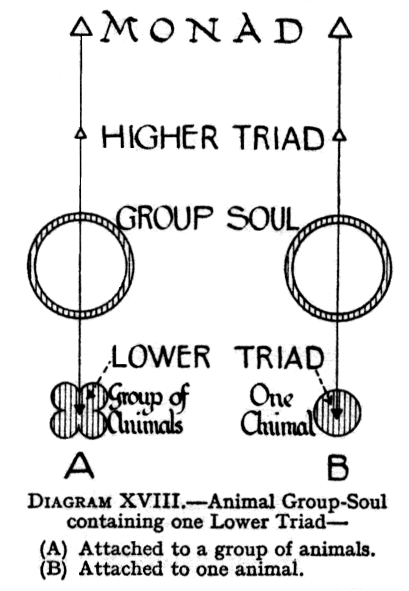
DIAGRAM XVIIIA shows the stage which has now been reached: in the Group-Soul envelope there is but one Lower Triad; but there are still several animal forms attached to the Group-Soul. The next stage is reached when there is only one animal form attached to the Group-Soul. This is indicated in Diagram XVIII-B. Large numbers of the higher domestic animals have reached this stage, and have really become separate entities, incarnating in a succession of animal bodies; although they have not as yet, of course, attained to the possession of a causal body - the true mark of individualisation.
Before passing on to describe the very interesting process of individualisation, we may here note an analogy between the animal, when it is approaching individualisation, and the human ante-natal life. The animal at this stage corresponds to the last two months of the human foetus.
Now it is known that a seven-months child may be born and may survive, but it will be stronger healthier, more vigorous, if it profits yet another two months by its mother's shielding and nourishing life. So is it also better, for the normal development of the ego, that it should not burst too soon the envelope of the Group-Soul, but should remain within it, still absorbing life through it, and strengthening from its constituents the finest part of its own mental body. When that mental body has reached the limit of growth possible, under these shielded conditions, then the time is ripe for individualisation to take place.
Knowledge of these facts has sometimes caused occultists to warn people, who are very fond of animals, not to be exaggerated in their affection, or to show it in unwise ways. For it is possible that the growth of the animal may be unhealthily forced—just as we know the development of a child may be unhealthily forced - and the individualisation of the animal thus be hastened out of due time. It is obviously far better to let an animal develop naturally,until, it is fully ready for individualisation, than to force it artificially, and cause it to become an individual before it is really ready to stand by itself, and live in the world as a separate human entity.
It must be recollected that we are at present little more than half way through the Fourth Round of the Fourth Chain, i.e., a little more than half way through the evolution of this Chain of worlds, and that it is only at the end of this evolution, that the animal kingdom is expected to attain humanity. Hence, any animal which is now attaining, or even approaching individualisation, must be very remarkably in advance of the others, and the number of such cases is consequently very small. Nevertheless, they do occasionally occur. Close association with man is necessary to produce this result.
We may note two
factors at work:
1] the emotions and thoughts of the man act constantly upon those of the animal,
and tend to raise him to a higher level both emotionally and intellectually;
2] the animal, if kindly treated, develops, devoted affection for his human
friend, and also unfolds his intellectual powers in trying to understand that
friend and anticipate his wishes.
It has been found that individualisation, which lifts an entity definitely from
the animal kingdom into the human, can take place only for certain kinds of
animals,---one for each of the seven great types or "rays". In fact, it is only
among domesticated creatures, and by no means among all classes, even of these,
that individualisation occurs. Of these classes, we already know certainly the
elephant, the monkey, the dog and cat. The horse is possibly a fifth.
Up to each of these heads of types leads a long line of wild animals, which has not been fully investigated. It is known, however, that wolves, foxes, jackals, and all such creatures culminate in the dog: lions, tigers, leopards, jaguars and ocelots culminate in the domestic cat.
It should be noted also that an animal of any given type, that individualises into a human being, will become a man of that same type, and no other.
Both bees and ants [which together with wheat, were brought from Venus by the Lords of the Flame] live in a manner quite different from purely terrestrial creatures, in that with them a Group-Soul animates the entire ant or bee community, so that the community acts with a single will, and its different units are actually members of one body, in the sense in which hands and feet are members of the human frame. It might indeed be said of them that they have not only a Group-Soul, but a group-body also.
The investigations of M.Maeterlinck appear to confirm the above fully. He writes:---
"The population of the hive, the ant hill and the termitary, seems to be one individual, one single living creature, whose organs, composed of innumerable cells, are disseminated only in appearance, but remain always subject to the same energy or vital personality, the same central law. By virtue of this collective immortality, the decease of hundreds of termites that are immediately succeeded by others, does not affect or touch the central, being. For millions of years, the same insect has gone on living, with the result that not a single one of its experiences has been lost. There has been no interruption of its existence, or disappearance of its memories; an individual memory has remained, and this has never ceased to function or to centralise every acquisition of the collective soul. They bathe in the same vital fluid as the cells of our own being; but in their case this fluid would seem to be much more diffuse, more elastic, more subtle, more psychical, or more ethereal than that of our body. And this central unity is no doubt bound up with the universal soul of the bee, and probably with what is actually the universal soul". [ From the "Life of the white ant" by Maurice Maeterlink, pages 199-207 ]
With regard to the
numbers of separate creatures attached to a Group-Soul, there may be
quadrillions of flies and mosquitoes; hundreds and thousands of rabbits or
sparrows; a few thousands of such animals as the lions and tiger, leopard, deer,
wolf, or wild boar. Among domesticated animals such as sheep and oxen the number
is still smaller.
In the case of the seven animals from whom individualisation is possible, there
are usually only a few hundred attached to each Group-Soul, and as their
development continues, they break up rapidly. Whilst there may be a thousand
pariah dogs attached to one Group-Soul, in the case of a really intelligent pet
dog or cat there may be not more than ten or twelve bodies over which the
Group-Soul hovers.
Animal Group-Souls are greatly affected and assisted by the influences which the Masters of Wisdom are continually pouring out, affecting to some extent everything within a wide radius.
CHAPTER
XIII
INDIVIDUALISATION: ITS MECHANISM AND PURPOSE
We have now arrived at the stage where a change of vast importance to the evolving life is about to take place—viz., the individualisation of the animal the formation of the causal body, the entry into the human kingdom.
In order to understand the whole phenomenon, and to recognise its full significance, let us briefly recapitulate the stages already passed. We saw first that the Monads, which derive their being from the First Logos, come forth and dwell on the Anupadaka Plane during all ages over which we have glanced. With the help of Devas, each Monad has appropriated to himself the three permanent atoms which represent him as a Jivatma on the planes of Atma,Buddhi and Manas, these three forming the Higher Triad. In addition, to each Higher Triad has been attached also a Lower Triad, consisting of a Mental Unit, and an Astral and a Physical Permanent Atom.
The Lower Triad has
been plunged successively into the earlier kingdoms of life, shielded and
nourished by its Group-Soul. By repeated subdivision, brought about by
differentiation of experience, each Lower Triad has now become possessed of an
envelope or sac to itself, derived from the original Group-Soul. After a
succession of experiences in a series of single animal forms, the Lower Triad is
at length sufficiently awakened to warrant a further step being taken in the
evolutionary scheme, a step which will bring to it a further instalment, if we
may use such an expression, or aspect, of the Divine Life.
Just as the human foetus is nourished by the mother in her womb until such time
as the child is strong - enough to live its own independent existence in the
outer world, so is the Triad, shielded and nourished by the Group-Soul, the
medium by which the Second, Logos protects and nourishes His infant children,
until the Triad is strong, enough to be launched into the outer world as a
self-contained unit of life, pursuing its own independent evolution.
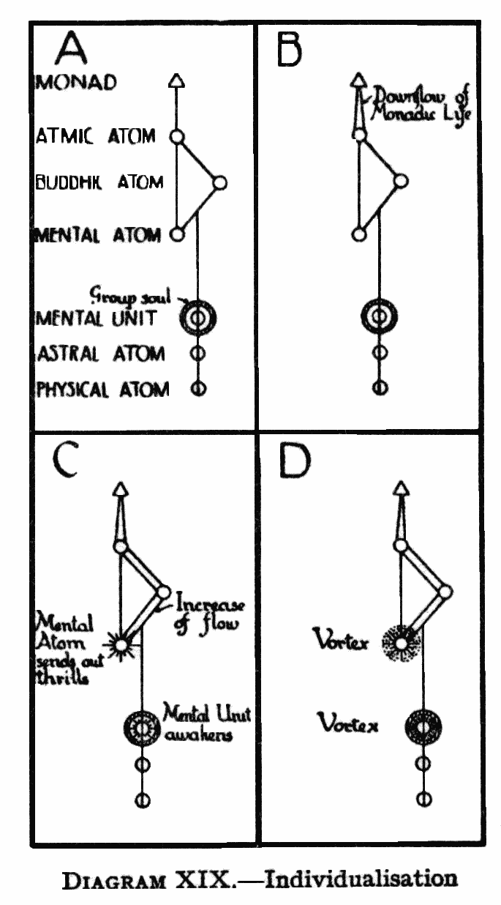
Thus is reached the term of ante-natal life of the Jivatma [the Higher Triad of Atma,Buddhi,Manas] enclosing the life of the Monad, the time being now ripe, for his birth into the lower world. The mother-life of the Second Logos has built for him the bodies in which he can live as a separate entity in the world of forms, and he has to come into direct possession of those bodies and take up his human evolution.Up to this point, all communication of the Monad with the lower planes has been brought through the Sutratma or thread-self, on which the permanent, atoms are strung [see DIAGRAM XIX-A] But now the time has come for a fuller communication than is represented by this delicate thread in its original form. The Sutratma accordingly widens out [ see DIAGRAM XIX-B] the Ray from the Monad glows and increases, assuming more the form of a funnel: "the thread between the Silent Watcher ---and his shadow becomes more strong and radiant" [The Secret Doctrine,Volume I,page 285].
This downflow of monadic life is accompanied by much increased flow, between the buddhic and manasic permanent atoms [see DIAGRAM-XIX-C]
The manasic
permanent atom awakens, sending out thrills in every direction. Other manasic
atoms and molecules gather round it [see DIAGRAM XIX-D],
and a whirling vortex is formed on the three upper sub-planes of the mental
plane. A similar whirling motion takes place in the cloudy mass surrounding the
mental unit which, as we have seen, is enveloped in the Group-Soul.
The wall of the Group Soul is then torn asunder, and caught up into the vortex,
above, [see DIAGRAM XX-A]. Here it is
disintegrated, being resolved into matter of the third mental sub-plane, and, as
the whirlpool subsides, it is formed into a delicate, filmy envelope, this being
the causal body [see DIAGRAM XX- B].
In describing this process, the illustration usually given in the East is that of a waterspout. There we have a great cloud hovering above the sea, on the surface of which waves are constantly forming and moving. Presently from the cloud is extended an inverted cone of violently,, whirling vapour, like a great finger.
Underneath this, a
vortex is rapidly formed in the ocean; but instead of being, a depression in its
surface, as in an ordinary whirlpool, it is a whirling cone rising above that
surface.
Steadily the two draw closer and closer together, until they come so near that
the power of attraction is strong enough to overleap the intervening space, and
suddenly a great column of mingled water and vapour is formed where nothing of
the kind existed before.
In just the same
way, the animal Group-Souls are constantly throwing parts of themselves into
incarnation, like the temporary waves on the surface of the sea. At last, after
the process of differentiation has continued to the maximum possible, a time
comes when one of the waves rises high enough to enable the hovering cloud to
effect junction with it. Then it is drawn up into a new existence, neither in
the cloud nor in the sea, but between the two, and partaking, of the nature of
both. Thus it is separated from the Group-Soul, of which hitherto it has formed
a part, and falls back again into the sea no more. Technically expressed, the
life of the animal, working in lower mental matter, is whirled up to meet the
downpouring life of the Monad, expressed through higher mental or causal matter. 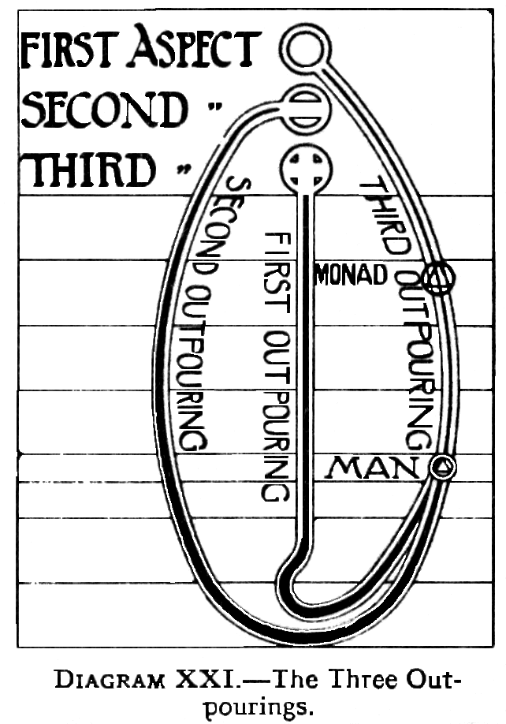
We may think of the Monad as waiting on his own plane, while the lower bodies
are being formed, round the atoms attached to him, brooding over them through
long ages of slow evolution. When they are sufficiently evolved, he flashes down
and takes possession of them, to use them for his own evolution. As he meets the
upward-growing, unfolding mind-stuff, he comes into union with it, fertilising
it, and at the point of union, forms the causal body, the vehicle of the
individual.
The downflow of life, resulting in the formation of the causal body, is known as
the Third Life Wave, or Third Outpouring, and derives from the First Logos, the
eternal all-loving Father - from Whom came also, as we have seen,the Monads
themselves in the first instance.
The explanation of DIAGRAM XXI is as follows:--
The First Life Wave
or Outpouring, from the Third Logos or Aspect, plunges straight down into
matter, the line in the drawing, indicating this, growing heavier and darker as
it descends , showing how the Holy Spirit vivifies the matter of the various
planes, first building the atoms, and then aggregating the atoms into elements [
as described in Chapter V ] .
Into that matter so vivified, the Second Life Wave, or Outpouring, from the
Second Logos or Aspect, God the Son, descends through the First, Second, and
Third Elemental Kingdoms, down to the mineral kingdom; then it ascends through
the vegetable and animal to the human kingdom, where it meets the downward-
reaching power of the First Logos—the Third Outpouring, from the First Logos, or
Aspect.
Meanwhile the force of the Third Logos, the First Outpouring, from the Third Aspect, after touching its lowest point, also rises again. On this path of return, or ascent, it is Kundalini, and it works in the bodies of evolving creatures, in intimate contact with the Primary or Life- Force, the two acting together, to bring the creature to the point where it can receive the Outpouring, of the First Logos, and become an ego, a human being, and still carry on the vehicles even after that. Thus we may say that we draw God's mighty power from the earth beneath as well as from heaven above, and are children of the earth as well as the sun.The two forces meet in us, and work together for our evolution. We cannot have one without the other, but if one is greatly in excess there are serious dangers. Hence , incidentally, the risk of any development of the deeper layers of Kundalini before the life in man is pure and refined.
Whilst all three Outpourings are truly the actual Life of God Himself, yet there is a vital and important distinction between the First and Second Outpourings, on the one hand and the Third Outpouring on the other hand. For the First and Second Outpourings have come down slowly and gradually through all the sub-planes, drawing round themselves the matter of each of these, and enmeshing themselves in it so thoroughly that it is scarcely possible, to discern them for what they are, to recognise them as Divine Life at all.
But the Third Outpouring flashes straight down from its source without involving itself in any way in the intermediate matter. It is the pure white light uncontaminated by anything through which it has passed.
Furthermore, although in the diagram, as originally published, the Third Outpouring, was shown as coming forth directly from the Logos, yet it has in fact [as we saw in Chapter IV ] issued from Him long ago, and is hovering at an intermediate point, i.e., On the second or Anupadaka plane, where we know it as the Monad. We have therefore, ventured to modify the original diagram by inserting the triangle, representative of the Monad, in its appropriate place in the stream of the Third Outpouring.
This –"monadic inflow"---resulting in the evolution of the Monad from the animal into the human kingdom, continued up to the middle of the Fourth Race [the Atlantean], the human population thus continually receiving fresh recruits. This point represents the middle of the scheme of evolution in our Planetary Chain, and after it has passed, very few animals attain individualisation. An animal who does succeed in individualising is as far in advance of his fellows, as is the human being who attains Adeptship in advance of the average, man. Both are doing, at the middle point of evolution, what they are expected to be able to do only at the end of it. Those who achieve only at the normal time, at the end of the Seventh round, will approach their goal so gradually that there will be little or no struggle.
The Secret Doctrine, Volume I, page 205, refers to this matter when it states that after the "central turning point", of the cycle of evolution, "no more Monads can enter the Human kingdom. The door is closed for this cycle".
The student will observe that the Third Outpouring differs from others in another important respect, in that whilst the First and Second Outpourings affect thousands or millions simultaneously, the Third Outpouring comes to each one individually, only as that one is ready to receive it.
The Third Outpouring, as we have seen, has already descended as far as the Buddhic world, but comes no farther until the upward leap is made by the soul of the animal from below. Then the two flash together, and form the ego as a permanent individuality, in the manner described.
Whilst we speak of the individuality of man as being permanent, it must be understood that such permanence is relative only, for at a far later stage in evolution the man transcends it, and reaches back to the divine unity from which he came. This matter will be dealt with in a later chapter.
Recapitulating briefly, we see that the Logos sends forth three mighty waves of His Life, through His three Aspects in succession: the first shapes and ensouls matter; the second imparts qualities and builds forms; the third carries down the human Monad to unite with the forms prepared by the second.
The student should
note that previous to individualisation, the fragment of the of the Group-Soul
has played the part of the ensouling force. After individualisation, however,
that which was the Group-Soul is converted into the causal body, thus becoming
the vehicle which is ensouled by the Divine Spark which has descended into it
from the higher world.
Thus that which hitherto has been the ensouling life becomes in turn the
ensouled, for it builds itself into a form, symbolised in ancient mythology by
the Greek idea of the Crater or Cup, and by the mediaeval story of the Holy
Grail. For the Grail or Cup is the perfected result of all that lower evolution,
into which is poured the wine of the Divine Life, so that the soul of man may be
born. Thus, as has been said, that which had previously been the animal soul
becomes in the case of man the causal body, occupied by the ego or human
soul. All that has been learned in its evolution is thus transferred to this new
centre of life.
Now that the causal body has been formed, the Higher or Spiritual Triad has a
permanent vehicle for further evolution. When the consciousness in due time
becomes able to function freely in this vehicle, the Higher Triad will be able
to control and direct, far more effectively than before, the evolution, of the
lower vehicles.
The earlier efforts
at control are not, of course, of a very intelligent description, any more than
the first movements of an infant are intelligent; although we know that there is
an intelligence connected with them. The Monad is now quite literally, born on
the physical plane; but he must be regarded as a baby there, a true
Individuality , but an infant ego, and he will have to pass through an immense
period of time before his power over the physical body will be anything but
infantile.
The Soul or Ego we may consider as that which individualises the Universal,
Spirit, which focusses the Universal Light into a single point; which is as it
were, a receptacle into which is poured the Spirit; so that which in Itself is
universal, poured into this receptacle appears as separate: always
identical in its essence, but separated in its manifestation. The purpose of
this separation is, as we have seen, that an individual may develop and grow;
that there may be an individualised life potent on every plane of the Universe;
that it may know on the physical and other planes as it knows on the spiritual
planes, and have no break in consciousness; that it may make for itself the
vehicles that it needs for acquiring consciousness beyond its own plane, and
then may gradually purify them one by one until they no longer act as blinds or
as hindrances, but as pure and translucent media through which all knowledge on
every plane may come.
The process of individualisation, however, should not be conceived as merely the making of a form or receptacle, and then pouring something into it, so that that which is poured at once takes the definite outline and shape of the vessel.The real phenomenon is more analogous to the building of a solar system from a nebula. Out of the primeval matter of space, a slight mist appears too delicate almost to be called even a mist: the mist grows gradually denser as the particles aggregate more closely together; eventually shapes are formed within the mist, which, as time goes on, become more definite, until a system is formed, with a central sun and planets around it.
So is the coming of Spirit into individualisation. It is like the faint appearance of a shadow in the universal void; the shadow becomes a mist, which grows clearer and more definite, until eventually an individual comes into existence. The Soul, or individual, is thus not a thing complete at first, plunging like a diver into the ocean of matter: rather is it slowly densified and builded, until out of the Universal it becomes the individual, which ever grows as its evolution proceeds.
Thus the Third Outpouring makes within each man that distinctive "spirit of the man which goeth upward", in contradistinction to "the spirit of the beast which goeth downward"—which , being interpreted, means that while the soul of the animal pours back after death of the body into the Group-Soul to which it belongs, the divine spirit in man cannot so fall back again, but rises ever onward and upward towards the Divinity from Whom it came.
As has already been
stated, the divine life represented by the Third Life Wave appears to be unable
of itself to descend lower than the Buddhic plane, where it hovers like a mighty
cloud, waiting for an opportunity of effecting, a junction with life of the
Second Outpouring, which is rising to meet it.
Now although this cloud seems to exercise a constant attraction upon the essence
below it, yet the effort which makes the union possible must be made from below.
With the nature of this effort we shall deal in the next chapter.
The junction of the Third with the First and Second Outpourings is the beginning
of the intellectual evolution, the coming of the Ego to take possession of his
physical tabernacle, and to link to that tabernacle the Spirit which has brooded
over it, which has by its subtle influence shaped and fashioned it.
Of this,
H.P.Blavatsky says: "There exists in nature a triple evolutionary scheme, for
the formation of the three periodical Upadhis; or rather three separate, schemes
of evolution, which in our system are inextricably and inter blended at every
point-----
I. The Monadic, as the name implies, is concerned with the growth and
development into still higher phases of activity of the Monads, in conjunction
with;
II. The Intellectual, represented by the Manasa-Dhyanis [ the Solar Devas, or
the Agnishvatta Pitris ], the ‘givers of intelligence and consciousness ‘ to
man; and:
III. The Physical represented, by the Chhayas of the Lunar Pitris, round which
Nature has concreted the present physical body…….It is the union of these three
streams in him,which makes him the complex being he now is" [ The Secret
Doctrine ,Volume I ,pages 203-204.]
"Man " has well been defined in Occultism as that being in the universe, in
whatever part of the universe he may be, in whom highest Spirit and lowest
Matter are joined together by intelligence, thus ultimately making a
manifested God, who will go forth to conquer through the illimitable future that
stretches before him.
Man himself, the reincarnating ego, should preferably be considered as the Thinker, rather than as Mind ; for the word Thinker suggests an individual Entity, whereas the word Mind suggests rather a vague, diffused generality.
If we consider the
phases of involution and evolution in broad outline, we may think of them as
consisting of seven stages. During three the Spirit descends. As it descends, it
broods over Matter, imparting qualities, powers and attributes. The fourth stage
stands alone, for in it Matter, now imbued with various powers and attributes,
comes into manifold relations with the informing Spirit, which now enters it.
This is the great battle of the universe, the conflict between Spirit and
Matter, the battle of Kurukshetra, of the vast hosts of the opposing armies. In
this part of the field is the point of balance. The Spirit, coming into
innumerable relations with Matter, is at first overpowered; then comes the point
of balance, when neither has the advantage over the other; then slowly the
Spirit begins to triumph over Matter, so that, when the fourth stage is over,
Spirit is master of Matter, and is ready for his ascent through the three stages
that complete the seven.
In these, the Spirit organises the Matter which he has mastered and ensouled,
turns it to his own purposes, shapes it for his own expression, so that Matter
may become the means whereby all the powers of the Spirit shall be made manifest
and active. The last three stages are thus taken up by the spiritual ascent. In
tabular form, the seven stages may be indicated thus:
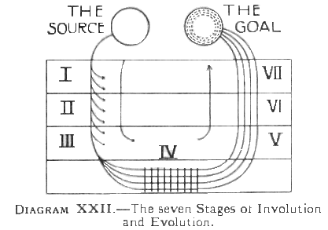
| The 7 Stages of Involution and Evolution |
| During Stages I, II and III Spirit descends, imparting qualities (indicated by the arrows branching out laterally) to Matter. |
| During Stage IV Spirit and Matter are in conflict, indicated by the two opposing arrows, and by the cross-lines, symbolising the battleground of life. |
| During Stages V, VI and VII Spirit ascends, gradually attaining mastery over Matter. |
| The Diagram also attempts to portray the splitting up of the line of Spirit, multiplicity thus emerging from unity, and the return of Spirit to the level of its source, enriched by its experiences with, and mastery over, matter |
DIAGRAM XXII is an attempt to illustrate the same ideas in graphic form.
The principle of which this is a particular example, is one which recurs over and over again throughout the process of nature: for example, in the cycle of human reincarnation. The student is therefore recommended to grasp the principle clearly, as it should help him in his understanding of many other portions of the "Ancient Wisdom".
The whole course of the movement downwards into matter is called in India the pravritti marga or the path of outgoing. When the lowest point necessary has been reached, the man enters upon the nivritti marga, or the path of return. The man returns from his day's work of harvesting, bearing his sheaves with him, in the shape of the fully awakened consciousness, which enables him to be far more useful than he could have been before his descent into matter.
In the course of man's development , the intellectual evolution must for a time obscure the spiritual evolution. The spiritual has to give way before the rush of intelligence, and retire into the background for a while, leaving intelligence to grasp the reins and guide the next stages of evolution.
The Monad will begin silently and subtly to inform the intelligence, working through it indirectly, stimulating it by its energies, evolving it by a ceaseless flow of influence from within, while intelligence grapples with the lower vehicles, to be at first conquered and enslaved, but eventually to master them and to rule.
Thus for a time the
spirit is obscured, maturing in silence, while the warrior intellect carries on
the struggle: the time will eventually come when intellect will lay its spoils
at the feet of spirit, and man, becoming divine, shall reign on ‘earth' i.e.,
On the lower planes, as their master, no longer their slave.
The intellect is essentially the separative principle in man, that marks off the
" I " from the "not I ", that is conscious of itself, and sees all else as
outside itself and alien. It is the combative, struggling, self-assertive
principle, and from the plane of the intellect downwards, the world presents a
scene of conflict, bitter in proportion as the intellect mingles in it. Even the
passion-nature is spontaneously combative only when it is stirred by the feeling
of desire, and finds anything standing between itself and the object of its
desire. It becomes more and more aggressive, as the mind inspires its activity,
for then it seeks to provide for the gratification of future desires, and tries
to appropriate more and more from the stores of nature. But the intellect
appears to be spontaneously combative, its very nature being to assert itself as
different from others. Hence we find in intellect the root of separateness, the
ever-springing source of divisions among men.
Unity, on the other hand, is at once felt when the buddhic plane is reached. But
with that we shall deal in a much later chapter.
The student,
however,must not form the idea that man is only that which functions, as
mind or intellect in his causal body. In essence, as we have seen, man is a
Spark of the Divine Fire, i.e., the Monad, and that Monad manifests its
three aspects as Spirit in the world of Atma,as Intuition in the world of
Buddhi, and as Intelligence in the world of Manas. It is these three aspects
taken together which constitute the ego which inhabits the causal body,
which was built from the fragment of the Group-Soul. Thus man, as we know him,
though in reality a Monad residing in the monadic world, shows himself as an ego
in the higher mental world, manifesting the three aspects of himself, which we
designate Spirit, Intuition and Intelligence.
The ego is the man during the human stage of evolution; he is the nearest
correspondence, in fact, to the ordinary and somewhat unscientific conception,
of the soul. He lives unchanged [except for his growth] from the moment, of
individualisation until humanity is transcended and merged in divinity. He is in
no way affected by what we call birth and death, for what we commonly, consider
as his life is, of course only a day in his real life. The lower bodies, which
are born and die, are merely garments, which he puts on for the purposes of a
certain part of his evolution.
A concise way of stating the case is to say that man is an immortal individuality, who has a mortal personality.
In the whole of
man's existence, there are three definite changes which outweigh all others in
importance and significance.
[1] The first of these is when, he individualises and enters the human
kingdom,emerging from the animal , and beginning his career as an ego.
[2] The second is the passing of the First of the great initiations.
[3] The third is the attainment of Adeptship.
With [2] and [3] we shall deal in later chapters: here we are concerned only
with [1]---the attainment of individualisation.
To gain this individuality is the aim of animal evolution, and its development
serves a definite purpose. That purpose is to make a strong individual
centrethrough which eventually the force of the Logos can be poured out.
When such a centre is first formed, it is of course merely a baby ego, weak and
uncertain. In order that it may become strong and definite, it has to be fenced
round by - selfishness - the intense selfishness of the savage. For many
lives a strong wall of this selfishness has to be maintained, so that within it
the centre may grow more and more definite.
Selfishness may therefore be regarded as a kind of scaffolding, which is
absolutely necessary for the erection of a building, but which must be destroyed
as soon as the building is completed, in order that the building may serve the
purpose for which it was erected. The scaffolding is unbeautiful, and, if it
were not removed, the building would be uninhabitable: yet, without the
scaffolding, there would have been no building at all.
The object of the creation of the centre being that, through it, the force of the Logos should radiate out upon the world, such radiation would be quite impossible if the selfishness persisted; nevertheless without the selfishness in the earlier stages a strong centre could never have, been established.
Hence in the light of this analogy, we see that even the most unlovely of qualities has its place in the scheme of evolution - at the right time. For many men, however, its work is over, and they should rid themselves of selfishness completely. It is useless and foolish to be angry with men who are selfish, for their conduct implies that what was in the savage a necessary virtue is still persisting into civilised condition. A wiser attitude to adopt towards the selfish, is to regard them as anachronisms - survivals from prehistoric savagery, men behind the times.
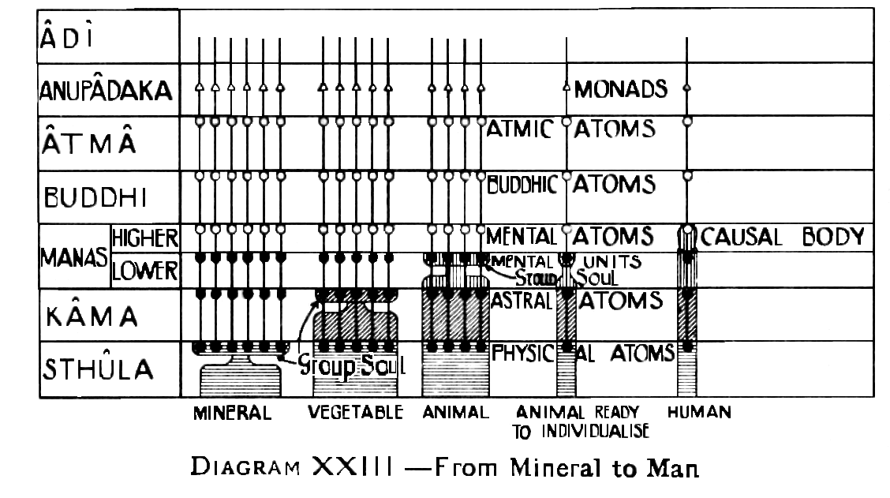
Diagram XXIII summarises the results of the last four chapters, showing the relative positions in the evolutionary scheme of the stages we know as the mineral Group-Soul, the Vegetable Group-Soul, the Animal Group-Soul, the Animal ready to Individualise, and the Human Being in His Causal Body.
CHAPTER XIV
METHODS AND DEGREES OF INDIVIDUALISATION
It was said in the
preceding chapter that the effort, resulting from which individualisation, takes
place, must be made from below, i.e.., by the animal. This effort may take place
in one of three distinct ways, and so exercise a very far-reaching effect on the
whole future life of the entity concerned.
When an ego is formed, the three aspects of the Higher Triad, i.e.., Atma,
Buddhi, and Manas, must all be called forth: the first connection, however may
be made through any one of the three, as follows:-----
[1] Between the
lower mind and the higher
[2] Between the astral body and Buddhi
[3] Between the physical body and Atma
The animal will
thus individualise in the first case through intellect, in the second case
through emotions, and in the third case through will. We will now briefly
consider each of these three methods.
[ I ] Individualisation through Intellect ---If an animal is associated
with a human being, who is not predominantly emotional, but whose chief
activities are of a mental nature, then the nascent mental body of the animal
will be stimulated by the close association, and the probabilities are that
individualisation will take place through the mind, as the result of mental
efforts made by the animal to understand his master.
[ II ] Individualisation through Emotion - if , on the other hand, the
master be an emotional man, full of strong affections, the probability is that
the animal will develop chiefly through his astral body, and that the final
breaking of the link with the group-soul will be due to some sudden outrush of
intense, affection, which will reach the buddhic aspect of the floating Monad
belonging to it, and will thus cause the formation of the ego.
[ III ] Individualisation through Will - In yet a third case, if
the master be a man of great spirituality, or of intensely strong will, while
the animal will develop, great affection and admiration for him, it will yet be
the will within the animal which is principally stimulated. This will show
itself in the physical body by intense activity, and indomitable resolution to
achieve whatever the creature may attempt, especially in the service of his
master.
We thus see that
the character and type of the master will have a great influence on the destiny
of the animal. The greater portion of the work is, of course, done without any
direct volition on either side, simply by incessant and inevitable action due to
the proximity of the two entities concerned. The astral and mental vibrations of
the man are far stronger and more complex than those of the animal, and they are
consequently exercising a never-ceasing pressure upon the latter.
The student should avoid the error of thinking that the "distance" between Atma
and the physical body is greater than that between the lower mind and the higher
mind, or between the astral and the buddhic principles. It is not a question of
distance in space at all, but rather of conveying of a sympathetic vibration
from the reflection to the original. Looking at the matter in this way, it is
clear that each reflection must be in some direct connection with its original ,
whatever the "distance" between them may be - in closer connection than it is
with any object which is out of the direct line, no matter how much nearer in
space the latter object may be.
The desire of the animal to rise constitutes a steady upward pressure along all
the lines mentioned, and the point at which that pressure finally breaks through
the restrictions, and forms the required link between the Monad and the
personality, determines certain characteristics of the new ego which thus comes
into existence.
The actual formation of the link is usually instantaneous, in the case of individualisation through affection or will: it is more gradual when it takes place through intellect. This also makes a considerable difference in the current of the future evolution of the entity.
Out of the great mass of the people who were individualised at a certain point in the Moon-Chain, those who had attained individualisation gradually, by intellectual development, came into incarnation on the earth about a million years ago: since then they have taken an average interval between lives of about 1,200 years.
Those of the group who had attained individualisation through an instantaneous, uprush of affection,or of will, came into terrestrial incarnation about 6000,000 years ago; they have taken an average interval between incarnations of about 700 years. The condition of both groups at present time is nevertheless about the same.
It appears that those who individualised through affection are able to generate, if anything, slightly more force than those who individualised through intellect. But a better description of the difference between the two classes is to say they produce a different kind of force. The shorter interval between lives is due to the fact that this group takes its bliss in a much more concentrated form, and therefore works out the result of an equal expenditure of force in much less time.
In fact, it appears probable that the period of the respective entries of these two groups upon terrestrial life was especially arranged in order that, after running through about the same number of incarnations, they might arrive at the same point, and be able to work together. The necessity of bringing groups of people into incarnation together, in order not only that they may work out mutual karmic interrelations, but also that they may all learn to labour together towards one great end, is evidently a dominant factor in regulating the rate of the expenditure of force.
Besides the differences in the method of individualisation, there are also differences in the –degree—of individualisation,owing to the stage at which it takes place. For it makes a great deal of difference at what stage of development of the animal individualisation occurs. Thus, for example, if a pariah dog were to individualise –as is presumably possible - it could be only a very low type of individualisation. Probably it would at most be nothing, more than a separated fragment of the group-soul, with a Monad hovering, over it, connected perhaps by a line or two of spiritual matter.
A case of this kind would correspond to the "lunar animal-men "-those egos who individualised from the earliest stage of the animal kingdom, at which individualisation was possible. They commenced their human life without anything which could properly be called a causal body, but with the Monad floating above a personality, to which it was linked only by certain threads of nirvanic matter. It was they who, in the first round of the Earth-period, filled the forms made by the Lords of the Moon, thus doing pioneer work for all the kingdoms.
A really intelligent and affectionate pet dog or cat, on the other hand, whose owner looks after him properly, and makes friends of him, would certainly when he individualised, obtain a causal body at least equivalent to that of the First Order of Moon-Men.
Various
intermediate types of domestic animals would produce the "basketwork" causal
body, such as that obtained by the Second Order Moon-Men.
The last named class of egos had not yet fully developed a causal body, but had
what might be described as the skeleton of such a vehicle—a number of
interlacing streams of force, which indicated the outline of the ovoid that was
yet to come. They had consequently a somewhat curious appearance almost as
though they were enclosed in a kind of basketwork of the higher mental matter.
The determining cause of these different causal bodies lies in the stage at which individualisation takes place. If the animal, a dog, for example, has been for a long time in contact with man, and is one of a small group of 10 or 20 , then on individualising, a complete causal body is formed. If there are about 100 in the group—the sheep dog stage - a basketwork causal body is formed. If there are several hundreds—the pariah dog stage—there is formed the indication of a causal body made by connecting lines.
The amount of work
done in the attainment of any given level in evolution is practically, always
the same, but in some cases more is done in one kingdom and less in another. For
the various kingdoms of nature overlap a good deal, so that an animal who
reached the summit of intelligence and affection possible in the animal kingdom,
would skip over the absolutely primitive conditions of humanity, and show
himself as a first class individuality from the beginning of his human career.
On the other hand, one who leaves the animal kingdom at a lower level will have
to begin correspondingly lower down in the scale of humanity.
This is the explanation of a remark once made by a Master, when referring to the
cruelty and superstition shown by the great mass of humanity: "They have
individualised too soon; they are not yet worthy of the human form."
The three methods of individualisation - through intellect, affection, and will - are the normal methods. Occasionally, however, individualisation is attained in other ways, which we may call abnormal or irregular ways.
For example, at the beginning of the Moon Chain, a certain group of beings were at the point of individualisation, and were drawn towards it by their association with some of the perfected inhabitants, whom we call the Lords of the Moon. An unfortunate twist, however, entered into their development, and they began to take so great a pride in their intellectual advance, that that became the prominent feature in their character. They worked, not so much to gain the approval or affection of their masters, as to show their advantage over their fellow animals, and to excite their envy.
This latter motive
pushed them on to make the efforts resulting in individualisation, and so the
causal bodies which were formed showed almost no colour but orange. They were
allowed to individualise, apparently because if they had continued in the animal
kingdom any further, they would have become worse instead of better.
This detachment - or "ship load", as it is sometimes called - numbered about two
millions. They individualised by pride, and, though clever enough in their way,
possessed but little of any other quality.
The members of this orange shipload, from Planet A of the Moon-Chain declined to enter the vehicles provided for them in the Earth-Chain, while the golden coloured egos from Globe B, and the rose-coloured egos from Globe C, accepted the conditions, entered into the vehicles, and fulfilled their destiny.
All through their
history these orange egos caused trouble to themselves and to others, owing to
their arrogance and unruliness. They have been described as turbulent and
aggressive, independent and separative, prone to discontent, and eager for
change.
Some of the cleverest of them became the notorious "Lords of the Dark Face", in
Atlantis, and later world-devastating conquerors, caring nothing for the
thousands who were slain or starved in the course of gratification of their mad
ambition, or later still, unscrupulous millionaires, aptly termed " "Napoleons,
of finance".
Another abnormal method of individualising is through fear. In some cases
animals which have been cruelly treated by man have developed cunning by their
strenuous efforts to understand and avoid the cruelty, so that they have broken
away from the Group –Soul, and produced an ego possessing only a very low type
of intellectuality.
A variant of this
class is the type of ego in which the cruelty has produced hatred instead of
fear. This is the explanation of the fiendishly cruel and bloodthirsty savages,
of whom we sometimes hear, of the inquisitors of the Middle Ages, and of
child-torturers at the present day.
Yet another variant is the entity who is individualised by an intense desire for
power over others, such as is sometimes shown by the chief bull of a herd. An
ego developed in such a way often manifests great cruelty, and appears to take
pleasure in it, probably because to torture others is a manifestation of his
power over them.
On the other hand, those who have individualised at a comparatively low level along one of the regular lines—as by affection, for example - provide us with a type of equally primitive, but joyous and good-natured savages. Such savages are so only in name, for they are kindly, as are many of the tribes in some of the islands of the South Seas.
FUNCTIONS OF THE CAUSAL BODY
The causal body owes its name to the fact that in it reside the causes which manifest themselves as effects in the lower planes.
For it is the experience of past lives, stored in the causal body, which are the cause of the general attitude taken up towards life, and the actions undertaken.
In Samskrit, the causal body is known as the Karana Sharira, Karana meaning, cause.
Briefly we may say
that the causal body has two main functions:
[1] To act as a vehicle for the Ego: the causal body is the "body of Manas", the
form- aspect of the individual , the true man, the Thinker.
[2] To act as a receptacle or storehouse for the essence of the man's experiences in his various incarnations. The causal body is that into which is woven everything which can endure, and in which are stored the germs of qualities, to be carried over to the next incarnation. Hence one sees that the lower, manifestation of man, i.e., his expression in his mental, astral and physical bodies, depends ultimately upon the growth and development of the real man himself, the one "for whom the hour never strikes".
As we have seen in
Chapter XIII, there is no man, no real human being, until the
causal body comes into existence. Every individual being must necessarily have a
causal body: it is, in fact, the possession of a causal body which constitutes
individuality.
The immense amount of work done, in the long aeons preceding the birth of the
causal body, is devoted to developing and building the matter of the physical,
astral and lower mental planes, until it becomes a fit habitation for the divine
spirit to dwell in as a man.
At its inception,
the causal body, or form-aspect of the true man, is described, as a delicate
film of subtlest matter, just visible, marking where the individual begins his
separate life. That delicate almost colourless, film of subtlest matter, is the
body which will last through the whole of human evolution: on this, as on a
thread—the thread-self, or Sutratma, as it is sometimes called –will all the
future incarnations be strung.
The causal body, as said, is the receptacle of all that is enduring—i.e.,
only that which is noble and harmonious, and in accordance with the law
of spirit; for every great and noble thought, every pure and lofty emotion, is
carried up, and its essence worked into the substance of the causal body. Hence
the condition of the causal body is a true register - the only true
register - of the growth of man, of the stage of evolution to which he has
attained.
All the various bodies of man should be regarded as casings or vehicles,
enabling the Self to function is some definite region of the universe. Just as a
man may use a carriage on land, a ship on the sea, a balloon in the air, to
travel from one place to another, and yet in all places remain himself, so does
the Self, the real man, utilise his various bodies, each for its appropriate
purposes, yet remains all the time himself no matter in what vehicle he may be
functioning at any given moment. Relatively to the man, all these bodies are
transient, they are his instruments or servants; they wear out and are renewed,
time after time, and adapted to his varying needs, and his ever-growing powers.
More specifically, because mind is fundamentally dual in its functioning, so man
needs, and is provided with, two mind bodies. As we saw in The Mental Body,
the mental body serves for the concrete mind, which deals with concrete
thoughts; the causal body similarly is the organ, for abstract thinking.
In the Thinker, residing in the causal body, are all the powers that we class as
Mind - i.e., memory, intuition, will. The Thinker gathers up all the
experiences of the earth-lives, through which he passes, to be transmuted within
himself, by his own divine alchemy, into that essence of experience and
knowledge which is Wisdom. Even in one brief earth-life we distinguish between
the knowledge we acquire and the wisdom we gradually -often too rarely - distil
from that knowledge. Wisdom is the fruitage of a life's experience, the crowning
possession of the aged. In a much fuller and richer sense, Wisdom is the
fruitage of many incarnations, the produce of much experience and knowledge. In
the Thinker, thus, is the store of experiences, reaped in our past lives,
harvested through many rebirths.
In the classification of the bodies of man as "sheaths", the causal body is
known as the discriminating sheath, as in the following table:--
| Principle in Man | ||
| Samskrit | English | |
| Buddhi | Anandamayakosha | Bliss Sheath |
| Higher Manas | Vijnanamayakosha | Discriminating Sheath |
| Lower Manas & Kama | Manomayakosha | Feeling Sheath |
| Prana | Pranamayakosha | Vitality Breath |
| Sthula | Annamayakosha | Food Sheath |
In the word Vijnanamayakosha, the particle "Vi" implies the discriminating, separating, and arranging of things, for that is the peculiar function of this sheath. Into the Vijnanamayakosha, or causal body, experiences from the Manomayakosha are reflected as ideal concepts. The Manomayakosha collects and elaborates, the Vijnanamayakosha arranges and discriminates. The lower bodies receive and deal with sensations, perceptions, the making and elaborating of ideas, but it is the work of the causal body to arrange these, discriminate between them, and perform the work of abstract reasoning from them, dealing with pure ideas, separated from the concrete presentations.
In the causal body
we thus have the abstract, not the concrete, the pure internal working, no
longer confused by the senses, nor in any way interfered with by the outer
world. Here there is pure intelligence, clear vision, intelligence unmoved by
the senses, intelligence tranquil, strong, serene.
In the causal body also lies the creative power of meditation, the energies that
grow out of one-pointed contemplation. This is the creative sheath of man, for
Manas in man corresponds in the Kosmos to Mahat, the Universal Mind, Divine
Ideation, the moulding directing force which is the creative power, from which
all comes forth. In this sheath of man exist all forms that can come forth, to
which objective reality may be given by this creative power.
The Secret Doctrine [I , 312] says: "Kriyashakti: the mysterious power of thought which enables it to produce external, perceptible, phenomenal results, by its own inherent energy. The ancients held that any idea will manifest itself externally if one's attention be deeply concentrated upon it. Similarly, an intense volition will be followed by the desired results" . This of course, is the secret of all true "magic".
Intelligence in man is thus, as said, the reflection of Brahma, of the Universal Mind, the creative energy. The creative faculty of imagination in man, which at present works in subtle matter, will, when man becomes perfect, work in grosser matter as well, because, as said, the imaginative power in man is the reflection of the power that created the universe. Brahma meditated,and all forms came forth: so, in the creative power of mind lies every possibility of form.
Hence H.P.Blavatsky sometimes calls manas the Deva-ego, or the divine as distinguished from the personal self. Higher Manas is divine because it has positive thought, which is Kriyashakti, the power of doing things. Manas, mind, is thus by its very nature, activity. All work is really done by thought power ; the sculptor's hand does not do the work, but the thought-power directing that hand does it. For it is a truism to say that thought precedes action. Whilst there are occasions on which a man act, as we say, without thinking, yet even so his action is the result of previous thought; he has set up a habit of thought along a certain line and acts instinctively in agreement with that line of thought.
Higher Manas is divine because, as said, it is a positive thinker, using the quality of its own life, which shines from within. That is what is meant by the word divine, from div, to shine.
The outgoing energy of Atma, working in the causal body, is the force which dominates and moulds everything that is external to it. The outgoing energy of Atma, working in the Manomayakosha, on the other hand, is Desire, an its characteristics is that it is attracted by external objects and its direction is governed from without. But Atma, working in the causal body, is Will, dealing, no longer with choice directed from without, but with choice initiated from within, moulded on the internal images by a process of discriminative reflection. Thus the outgoing energy is, in the causal body, guided from within in its direction, whereas in the lower bodies it is attracted from without. This is the essential difference between Will and Desire. The will, moreover, is essentially a quality of the ego, not of the personality.
The Chit, or intelligence aspect of man is the first to be evolved: this is the analysing faculty which perceives multiplicity and differences ; then comes Ananda, the wisdom that realises the unity of things, and that accomplishes union, thus finding the joy or bliss that is at the heart of life; lastly, comes the third or highest aspect, Sat, self-existence, the Unity that is beyond even union.
In the cycle of Races, the Fifth Race is developing the Chit, or Intelligence aspect; the Sixth will develop the Ananda, the union or bliss aspect, the "Kingdom of Happiness"; the Seventh will develop the Sat, or Self-existence aspect.
CHAPTER XVI
COMPOSITION AND STRUCTURE
The causal body
consists of matter of the first, second and third sub-planes of the mental
plane. The student will recollect that an atom of mental matter contains 49 to
the 4th, or 5,764,801 - approximately , say, 5 ¾ millions –of "bubbles in
koilon".
In ordinary people the causal body is not yet fully active, and consequently
only that matter which belongs to the third sub-plane is vivified. As the ego
during the long course of his evolution, unfolds his latent possibilities, the
higher matter is gradually brought into activity; but it is only in the
perfected men whom we call Adepts, or Master, that it is developed to its
fullest extent.
It is difficult to describe a causal body fully, because the senses belonging to the causal world are altogether different from and higher than those we employ at the physical level. Such memory of the appearance of a causal body, as it is possible for a clairvoyant to bring into his physical brain, represents it as ovoid, that being, in fact, the shape of all the higher bodies, and as surrounding the physical body of the man, extending to a distance of about 18 inches from the surface of the physical body.
A human being, who has just individualised from the animal kingdom, has a causal body of minimum size.
In the case of primitive man, the causal body resembles a bubble and gives the impression of being empty. It is a mere colourless film, just sufficient, apparently, to hold itself together and make a reincarnating entity, but no more. Although it is filled with higher mental matter, this is not yet brought into activity, and so it remains colourless and transparent. As the man develops, this matter is gradually stirred into alertness by vibrations which reach it from the lower bodies. This comes but slowly, because, the activities of man in the earlier stages of his evolution are not of a character to obtain expression in matter so fine as that of the causal body. But, when a man reaches the stage where he is capable either of abstract thought, or of unselfish emotion, the matter of the causal body is aroused into response.
The vibrations thus
aroused show themselves in the causal body as colours, so that instead of being
a mere transparent bubble, it gradually becomes a sphere filled with matter of
the most lovely and delicate hues, an object beautiful beyond all conception.
The student will be familiar with the meaning of the various colours, from his
study of the same phenomenon in the astral and mental bodies. Thus pale rose
expresses unselfish affection; yellow indicates high intellectual power; blue
betokens devotion; sympathy is expressed by greenand luminous lilac-blue
typifies the higher spirituality. These same colours in the denser bodies are,
of course, far less delicate and also less living.
Although, in the course of his evolution in the lower worlds, a man often introduces into his vehicles qualities which are undesirable, and entirely inappropriate for his life as an ego—such , for example, as pride, irritability,sensuality,- yet none of these can be expressed in the causal body. Diagram XXIV may help to make clear the reason for this important phenomenon. Each section of the astral body acts strongly upon matter of the corresponding mental sub-plane. Hence, as the coarser vibrations of the astral body are expressed only in the lower sub-planes of the astral world, they will affect the mental body only, not the causal body. The causal body therefore, is affected only by the three higher portions of the astral body, and the vibrations in those portions represent only good qualities.
The practical effect of this is that the man can build into his ego, that is, nothing but good qualities.. The evil qualities which he develops are from the point of view of the ego, only transitory, and must be thrown aside as the man advances, because he no longer has within him matter which can express them.
|
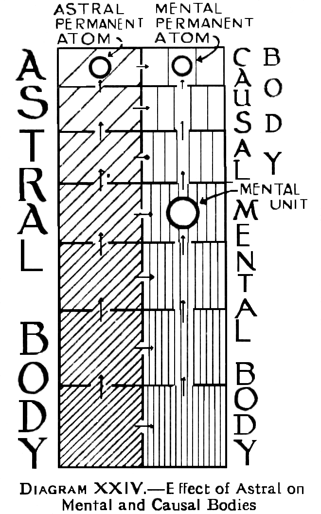 DIAGRAM XXIV-- The sub-planes of the astral and mental planes are here shown as of diminishing size, in order to illustrate the fact of their increasing, fineness as we rise from the lower to the higher levels.Openings between adjacent sub-planes of each plane indicate that certain of the "vibrations " of a given sub-plane can be transmitted to the sub-plane immediately above. These openings or gateways become narrower and narrower, indicating that only the finest vibrations can pass onwards to the higher levels. Openings
between each sub-plane of the astral plane and the corresponding
sub-plane of the mental plane , indicate that there is also a
possibility of an astral vibration being communicated, at a higher
octave, to the corresponding, mental sub-plane. |
For coloured illustrations of causal bodies at various degrees of development, the student is referred to Man Visible and Invisible, by C.W.Leadbeater, as follows-:
Causal body of
Savage [Plate V, page 66]
Causal Body of average man [Plate VIII, page 91]
Causal Body of developed man [Plate XXI, page 118]
Causal Body of Arhat [Plate XXVI, page 138]
As already said,
the causal body of an undeveloped savage is like a gigantic soap-bubble,
transparent yet iridescent. It is almost empty in appearance, what little there
is within it representing certain qualities which may already have been evolved
within the Group-Soul, of which it previously formed, a part. The faint
indications of these rates of vibrations are observable within the young causal
body as dawning gleams of colour.
It might perhaps have been thought that the causal body of a primitive man would
be very small at first.; but this is not the case; his causal body is the same
size as any other; it does at later stage increase in size, but not until it has
first been vivified and filled with active matter.
In the case of an average man, there is a distinct increase in the content of the great ovoid film. A certain amount of exceedingly delicate and ethereal colour now exists within it, though it is still less than half filled. Something of the higher intellect is visible, and something of the power of devotion and unselfish love. There is also a faint tint of that exceedingly delicate violet which indicates the capacity of love and devotion turned towards the highest ideal, and also a faint hint of the clear green of sympathy and compassion.
As soon as the man begins to develop in spirituality, or even higher intellect, a change takes place. The real individual then begins to have a persisting character of his own, apart from that moulded in each of his personalities in turn by training, and by surrounding circumstances. This character shows itself in the size, colour, luminosity, and definiteness of the causal body, just as that of the personality shows itself in the mental body, except that the higher vehicle is naturally subtler and more beautiful.
In the case of the spiritually developed man, an enormous change is noticed. The glorious iridescent film is now completely filled with the most lovely colours, typifying the higher forms of love, devotion and sympathy aided by an intellect refined and spiritualised, and by aspirations reaching ever towards the divine. Some of these colours have no place in the physical plane spectrum.
The inconceivably
fine and delicate matter of such a causal body is intensely alive and pulsating
with living fire, forming a radiant globe of flashing colours, its high
vibrations sending ripples of changing hues over its surface-hues of which earth
knows nothing,---brilliant, soft and luminous beyond the power of language to
describe.
Such a causal body is filled with living fire, drawn from a still higher plane,
with which it appears to be connected by a quivering thread of intense light --
the Sutratma—vividly recalling to mind the stanzas of Dzyan : "The spark hangs
from the flame by the finest thread of Fohat." As the soul grows,and is able to
receive more and more from the inexhaustible ocean of Divine Spirit, which pours
down through the thread as a channel, the channel expands, and gives wider
passage to the flood, till, on the next sub-plane, it might be imaged as a
water-spout connecting earth and sky, and higher still as itself a globe,
through which rushes the living spring, until the causal body seems to melt into
the inpouring light. As the stanza says: "The thread between the watcher and his
shadow becomes, more strong and radiant with every change. The morning sunlight
has changed into noonday glory. This is thy present wheel, said the flame to the
spark. Thou art myself, my image and my shadow. I have clothed myself in thee,
and thou art my vahan --to the day " Be-With-Us ", when thou shalt
re-become myself and others, thyself and me."
It was said about that in the undeveloped man the causal body is at first almost
empty, and as the man develops, the ovoid gradually fills up. When it is
completely filled, not only will it commence to grow in size, but in addition,
streams of force will flow out in various directions. This, is in fact, is one
of the grandest characteristics of the developed man—his capacity to serve as a
channel for higher force. For his attitude of helpfulness, and readiness, to
give, make it possible for the divine strength to descend upon him in a steady
stream, and, through him, reach many who are not yet strong enough to receive it
directly.
Furthermore, from the upper part of the causal body there ascends a crown of brilliant sparks, indicating the activity of spiritual aspiration, and of course adding very greatly to the beauty and dignity of the man's appearance. No matter how the lower man may be occupied on the physical plane, this stream of sparks rises constantly. The reason for this is that once the soul or ego of man is awakened upon his own level, and is beginning to understand something of himself, and his relation, to the Divine, he looks ever upwards to the source from which he came, quite irrespective of any activities which he may be inspiring on lower planes.
It must be
remembered that even the noblest personality is but a very small and partial
expression of the real higher self; so that as soon as the higher self begins to
look round him, he finds almost unlimited possibilities opening before him, of
which in this cramped physical life we can form no idea.
This very upward rushing of spiritual aspiration which makes so glorious a crown
for the developed man, is itself the channel through which the divine power
descends: so that the fuller and stronger his aspirations become, the larger is
the measure of the grace from on high.
In the case of the
causal body of an Arhat, i.e., of one who has passed the Fourth of the
great Initiations --the colours have two characteristics, which are
irreconcilable on the physical plane. They are more delicate and ethereal than
any that have been previously described, :yet at the same time they are fuller,
more brilliant and more luminous. The size of the causal body is many times
larger than that of the physical body, and there is displayed magnificent
development of the highest types of intellect, love and devotion, great wealth
of sympathy, and highest, spirituality.
The bands of colours are arranged now in concentric rings, while through these,
and extending beyond them, there are streams of white light, radiating, outwards
from the centre. The outrush of Divine influence is thus enormously intensified,
for the man has become an almost perfect channel for the life and power of the
Logos. Not only does the glory radiate from him in white light, but all colours
of the rainbow play round him, in ever changing gleams like mother-of-pearl.
Hence there is something in that radiation to strengthen the highest qualities
in every person who approaches him, no matter what qualities may be. None can
come within the range of his influence without being the better for it; he
shines upon all around him like the sun, for like that luminary, he has become a
manifestation of the Logos.
The causal body of
the Adept or Master has enormously increased in size and shines with a sun-like
splendour far beyond all imagination in its glorious loveliness. Of the beauty
and form and colour here, as C.W.Leadbeater, states, no words can speak, for
mortal language has no terms in which those radiant spheres may be described.
Such a vehicle would be a separate study itself, but one quite beyond the powers
of any but those who are already far on the Path.
As in the case of the causal body of an Arhat, the colours no longer move in
whirling clouds, but are arranged in great concentric shells, yet penetrated
everywhere by radiations of living light, always pouring forth from Him as a
centre.
The order of the colours varies according to the type to which the Adept
belongs, so that there are several well-marked varieties amid their glory. A
perfectly accurate tradition of this fact has been preserved in many of the
roughly drawn pictures of the Lord Buddha, which may be seen upon temple walls
in Ceylon. The Great Teacher is usually represented there surrounded by an aura;
and, although the colouring and general arrangement of those surroundings would
be very inaccurate, and even impossible, if intended for the aura of an ordinary
man, or even for that of one who is the rank of a Master, yet it is a rough and
material representation of the actual higher vehicle of the Adept of that
particular type, to which this Great One belongs.
The causal body is sometimes called the "auric egg". But, when H.P.Blavatsky spoke of the sacred auric egg, it seems probable that she meant the four permanent atoms—more accurately, the physical and astral permanent atoms, the mental unit, and the mental permanent atom,----within an envelope of matter of the Atmic of Nirvanic plane.
The Causal Body is
known also as the Augoeides, the glorified man; it is not an image of any one of
his past vehicles, but contains within itself the essence of all that was best
in each of them. It thus indicates , more or less perfectly, as through
experience it grows, what the Deity means that man shall, be. For, as we have
seen, by observation of the causal vehicle it is possible to see the stage of
evolution which the man has reached. Not only can his past history be seen, but
also to a considerable extent the future that lies before him.
The glorified form within the causal body is an approach to the archetype and
comes nearer to it as man develops. The human form appears to be the model for
the highest evolution in this particular system. It is varied slightly in
different planets, but is, broadly speaking, the same in general outline. In
other solar systems forms may possibly be quite unlike it : on that point we
have no information.
Prana, or Vitality, exists in all planes, and therefore must play some part in the causal body, but concerning this no information is at present available.
We may note,
however, that after the formation of the causal body, the complexityof the prana
circulating in the nervous system of the physical body much increases, and it
appears to become yet more enriched in the progress, of human evolution. For, as
the consciousness becomes active on the mental plane, the prana of that plane
mingles with the lower, as the activity of consciousness is carried on in higher
regions.
In the causal body also, as in each of the other vehicles, there are Chakrams or
Force-Centres, which in addition to other functions, serve as points of
connection at which force flows from one vehicle to another. At present time,
however , no information is available regarding the Chakrams of the causal body.
CHAPTER XVII
CAUSAL THOUGHT
The mental plane, as we know, is the sphere of action of what we call mind or
manas, in man. As we have already seen, the plane is divided into two parts, the
higher, consisting of three upper sub-planes, and the lower, consisting , of the
four lower sub-planes. The two divisions are known as arupa, or formless, and
rupa, having form.
In man, Intellect
has, as its vehicle, the causal body, with abstract thought as its function,
whilst Mind has, as its vehicle the mental body, with the function of concrete
thinking.
The Mind acquires knowledge by utilising the senses for observations: it works
on its percepts, and builds them into concepts. Its powers are attention,
memory, reasoning by induction and deduction, imagination, and the like.
The names arupa and
rupa are given in order to indicate a certain quality of the matter of the
mental plane. In the lower part of it, the matter is very readily moulded by the
action of human thought into definite forms; in the higher division, this does
not occur, the more abstract thought of that level expressing itself to the eye
of the clairvoyant in flashes or streams.
On the arupa levels, the difference in the effect of thought is very marked,
especially as regards the elemental essence. The disturbance set up in the mere
matter of the plane is similar, though greatly intensified in this much more
refined form of matter. But in the elemental essence, no form at all is now
created, and the method of action is entirely changed.
On the lower sub-planes, an elemental or thought form , which is there created,
hovers about the person thought of , and awaits a favourable opportunity of
expending its energy either, upon his mental body, his astral body, or even his
physical body. But on the three higher sub-planes, the result is a kind of
lightening flash of the essence from the causal body of the thinker, direct to
the causal body of the object of his thought.
So that, while on the lower sub-planes the thought is always directed to the
mere personality, on the higher sub-planes we influence the reincarnating ego,
the real man himself. If the message has any reference to the personality, it
will reach that personality only from above, through the instrumentality of the
causal body.
It is said to be a
striking sight to observe the change from an abstract or arupa idea to a
concrete or rupa thought, as the idea clothes itself in the matter of the four
lower sub-planes.
The standard and sample example is that of a triangle. Difficult as it is to
describe in words, which belong to the planes of form, the abstract idea of a
triangle is a reality on the arupa levels. It means a non-figure, which is yet a
figure. The figure—which is yet no particular figure, is circumscribed by
three lines, yet not by any particular lines: its three angles possess the
property of making collectively two right angles; yet they are not particular
angles.
On the arupa levels, this abstract idea of a triangle has real existence. With
the sense of the causal body, it is seen, or apprehended. It is a fact of
consciousness, external to the observer, even though it is not what we usually
mean by form.
If such an abstract triangle is thrown into contact with the matter of the rupa
sub-planes, instantly it becomes an indefinite number of triangles, each of
which has a definite form. There will be triangles of every known shape-
equilateral , isosceles, scalene, right-angled, acute-angled, obtuse –angled—all
coming into visible existence.
If the abstract idea is brought down within the causal body, the observer becomes a fountain of triangles, which go off in all directions, much as a jet of water spurts up as a more or less coherent mass, comes down as a fountain, separating into innumerable drops of spray. That is perhaps the best physical analogy of the process that can be given.
As was fully explained in the Mental Body, concrete thought naturally takes the shape of the objects which we thought about: abstract ideas when thrown down into the rupa levels, usually represent themselves by all kinds of perfect and most beautiful geometrical figures. It should however, be remembered that many thoughts which come down here are little more than mere abstractions, become on the mental plane concrete facts.
Causal
consciousness thus deals with the essence of a thing, whilst the lower
mind studies its details. With the mind, we talk round a subject, or endeavour
to explain it: with the causal consciousness, we take up the essence of the idea
of the subject, and move it as a whole, as one moves a piece when playing chess.
The causal plane is a world of realities: we no longer deal with emotions, ideas
or conceptions, but with the thing in itself.
It may be well to describe rather more in detail the process of arriving at
causal thought. Whilst the lower mind dwells entirely on mental images, obtained
from sensations, reasons on purely concrete objects, and is concerned with the
attributes which differentiate one object from another, the ego, using the
causal consciousness, having learned to discriminate clearly between objects, by
dwelling upon their – unlikenesses —now begins to group them together by
some attribute which appears in a number of objects, otherwise dissimilar, and
makes a link between them.
He draws out, abstracts, this common attribute, and sets all objects that possess it apart from the rest that are without it. In this way, he evolves the power of recognising identity amid diversity, a step towards the much later recognition of the One underlying the many.
He thus classifies
all that is around him, developing the synthetic faculty, and learning to
construct as well as to analyse.
Presently, he takes another step, and conceives of the common property as an
idea, apart from all the objects in which it appears, and thus constructs a kind
of mental higher image higher than the image of of a concrete object--- the
image of an idea that has no phenomenal existence in the world of form, but
which exists on the higher levels of the mental plane, and affords material on
which the ego, the Thinker himself, can work.
The lower mind reaches the abstract idea by reason, and, in so doing,
accomplishes its loftiest flight, touching the threshold of the formless world,
and dimly seeing that which lies beyond.
The Thinker with his causal consciousness, sees these ideas, and lives among,
them habitually. As he exercises and develops the power of abstract reasoning,
he becomes effective in his own world, and begins his life of active functioning
in his own sphere.
Such a man would care little for the life of the senses, or for external
observation, or for mental application to images of external objects. His powers
are indrawn, no longer rushing outwards in the search for satisfaction.
He dwells calmly within himself, engrossed with the problems of Philosophy, with
the deeper aspects of life and thought, seeking to understand causes, rather
than troubling himself with effects, and approaching nearer and nearer to the
recognition of the One that underlies all the diversities of external nature.
The method of passing from the lower mental to the causal consciousness, by means of an orderly process of concentration, meditation, and contemplation, is described in detail in The Mental Body, and so need not be repeated, here.
On the higher levels of the mental plane, thoughts act with much greater force, than on the lower levels: one reason for this is, that, as comparatively few are as yet able to think on these higher levels any thoughts, which are generated there, have the field practically to themselves: i.e., there are not many other thoughts in that realm, with which they have to contend.
Most thoughts of the ordinary man begin in the mental body, on the lower mental levels, and clothe themselves, as they descend, with the appropriate astral elemental essence. But, when a man is active on the causal levels, his thought commences there, and clothes itself first in the elemental essenceof the lower levels of the mental plane, and is consequently infinitely finer, more penetrating, and in every way more effective.
If the thought be directed exclusively to higher objects, its vibrations may be of too fine a character to find expression on the astral plane at all. But if they do affect such lower matter, they will do so with much more far-reaching effect than those which are generated so much nearer to the level of that lower matter.
Following this principle a stage further, it is clear that the thought of the Initiate, taking its rise upon the Buddhic Plane, above the mental world altogether, will clothe itself with the elemental essence of the causal sub-planes. Similarly, the thought of the Adept will pour down from the plane of Atma, wielding the tremendous and wholly incalculable powers of regions beyond the ken of the ordinary humanity.
Hence the truth of the saying that the work of one day, on levels such as these, may well surpass in efficiency the toil of a thousand years on the physical, plane.
Students who are not accustomed to causal thought, to thinking in principles should be careful that they do not, by their efforts to think abstractly, at first cause headaches, which mean, of course, in this instance, that the mechanism of the brain is being strained. Meditation, practised regularly for a number, of years, should establish a certain tendency of the causal consciousness to be affected by the consciousness in the mental body. When that has been established, abstract thought at the causal levels should be possible without the risk of straining the thinking mechanism.
When the effort to
form an abstract conception, say of a triangle, has been successful, the student
may at first feel a little dazed in the attempt to grasp the abstract idea :
later the consciousness will suddenly change, and become clear. That means that
the centre of consciousness has been transferred from the mental to the causal
body, and the student becomes conscious, in his causal body, of a distinct
existence outside himself.
That is the "intuition" of the causal body, which recognises the – outer -. The
"intuition" of Buddhi, as we shall see in a later chapter, recognises the inner,
enabling one to see things from the inside. With the intellectual intuition, one
realises a thing which is outside oneself.
Again the student may be reminded that, in spite of external differences of
functioning between the higher and lower mind, yet Manas, the Thinker, is one,
the Self in the causal body. It is the source of innumerable energies of
vibrations of innumerable kinds. These it sends out, raying outwards from
itself. The subtlest and finest of these are expressed in the matter of the
causal body, which alone is fine enough to respond to them. They form what is
sometimes called the Pure Reason, whose thoughts are abstract, whose method of
gaining knowledge is intuition. Its very "nature is knowledge", and it
recognises truth at sight as congruous with itself.
The less subtle vibrations pass outward from the one Thinker, attracting the
matter of the lower mental world, and becoming the activities of the lower mind,
as has already been described.
It is, perhaps,
somewhat unfortunate that Buddhi is also sometimes spoken of as Pure Reason, and
its faculty is described as that of intuition. As psychology progresses, no
doubt appropriate terms will be selected, and applied, specifically and solely,
to the distinct functions of the causal consciousness, and to the Buddhic
faculties.
It was said above, of Manas, that its very " nature is Knowledge". That is so,
because Manas is the reflection, in the atomic matter of the mental, plane, of
the cognitional aspect of the Self ---- of the Self as Knower. It is therefore
possible to unfold a power of knowing truth at sight. This shows itself only
when the lower mind, with its slow process of reasoning, is transcended. For
whenever the "I "---the expression of the Self whose "nature is
knowledge"----comes into contact with a truth, he finds its vibrations regular
and therefore capable of producing a coherent image in himself : whereas the
false causes a distorted image, out of proportion, by its very reflection
announcing its nature.
As the lower mind assumes a more and more subordinate position, these powers of the ego assert their own predominance, and intuition - which is analogous to the direct vision of the physical plane - takes the place of reasoning, which may aptly be compared with the physical plane sense of touch.
Thus intuition develops out of reasoning in the same unbroken manner, and without change of essential nature, as the eye develops out of touch. The change of "manner" should not blind us to the orderly and sequential evolution of the faculty.
The student will, of course be careful to distinguish genuine intuition from that pseudo-intuition of the unintelligent, which is merely impulse, born of desire, and is not higher, but lower than reasoning.
The act of thinking develops the spirillae in the physical atoms : hence those who are definitely and carefully thinking day by day are not only improving their own powers of thought, but also improving for others the amount of available material of a higher kind, thus facilitating high thinking.
In the etheric body of man, the brow chakram, or force centre, which utilises the dark blue prana,is associated with the principle of higher manas.
CHAPTER XVIII
DEVELOPMENT AND FACULTIES OF THE CAUSAL BODY
In chapter XV, we saw that only good elements are stored in the causal body,
evil finding in that body no means of expression. We may now consider this
matter a little further, and study the effects which are produced, more or less
indirectly, on the causal body by the practise of evil.
In a primitive man, the growth of the causal body is necessarily exceedingly
slow. As we have seen, it is by the method of exciting sympathetic vibration
that the higher qualities, developed by the life on lower planes, are gradually
built into the causal body : but in the life of an undeveloped man there will be
very few feelings or thoughts, belonging to the higher world, which can serve as
food for the growth of the real man. Hence the growth is slow, for all the rest
of life does not aid it.
But even the worst
of men can commonly show himself on the causal plane, though as an entirely
undeveloped entity. His vices, even though continued through life after life,
cannot soil the causal body. They can, however, make it more and more difficult
to develop the opposite virtues.
In every case, the existence of an evil quality in the personality means a lack
of the corresponding good quality in the causal body. For an ego cannot be evil,
though he can be imperfect. The qualities which the ego develops cannot be other
than good qualities, and, when they are well defined, they show themselves in
each of all his numerous personalities : consequently, those personalities can
never be guilty of the vices opposite to those good qualities.
A good quality which is lacking, may nevertheless be said to exist in the ego, although it has not yet been called into activity. As soon as it is called into activity, its intense vibrations will act upon the lower vehicles, and it will be impossible, as said, for the opposite evil ever again to find place in them.
Where there is a gap in the ego, indicating that there is a quality undeveloped there need not necessarily be a definite vice in the personality; but there is also nothing positive in the personality to prevent the growth of the vice in question. Hence, since in all probability many other people around him already possess that vice, and since man is an imitative animal, it is more than likely that the will develop that vice. The vice, however, as we have seen, belongs only to the lower vehicles, and not to the real man in the causal body. In those lower vehicles its repetition may set up a momentum which it is hard to conquer: but, if the ego bestirs himself to create in himself the opposite virtue, the vice is cut off at the root, and can no longer exist, neither in this life nor in all the lives that are to come.
Thus the shortest
way to get rid of evil, and prevent its reappearance, is to fill the gap in the
ego, so that the good quality which is thus developed will show itself as an
integral part of the man's character through all his future lives.
Whilst evil cannot be definitely stored in the causal body, yet the practise of
evil may affect the causal body; for every intensification of vice in the lower
vehicles, every indulgence in it in the lower worlds, tends somewhat to dim the
luminosity of the opposite virtues in the causal body.
The " I " cannot assimilate anything that is evil, for it cannot touch the " I "
level of consciousness. The ego is not conscious of evil; he knows nothing about
it, so that it makes no impression upon him. The utmost result brought about, in
the causal body by very, very long continued lives of a low type, is what may be
called incapacity to receive the opposite good impression for a very
considerable period afterwards, a kind of numbness or paralysis of the matter of
the causal body. This is not so much consciousness as unconsciousness.; an
unconsciousness which resists impressions of the good of the opposite kind. That
is the limit of the harm that is done. Hence , when the life of evil has been
very much prolonged, it will take many more lives in order to bring out the
first response to the good side of activity.
This result was observed when, in studying past lives, an endeavour was made to understand how the causal body was not injured through a number of savage lives. In very prolonged cases, where there was an abnormal number of such lives, this effect of numbness was noted, brought about by the repeated beating upon it of evil, over a long period of time. A number of lives then had to be spent in restoring, so to say, the responsive vitality to that portion of the causal body. Such cases, however, are abnormal.
We may pursue the
study of the effects of evil still further. Where evil is subtle and persistent,
it drags away, if the expression be permitted, something of the individual
himself. If evil be continually followed, the mental body becomes so entangled
with the astral body, that after death it cannot free itself entirely : some of
its very substance is torn away from it, and, when the astral body in its turn
dies and disintegrates, the matter of the mental body, which has been wrenched
away, also goes back to the general stock of mental matter, and is thus lost to
the individual. In ordinary cases, the harm done to the causal body does not go
further than this. We shall deal with this aspect of our subject in more
technical detail in Chapter XXV.
Where, however, the ego has become strong, both in intellect and in will,without
at the same time increasing in unselfishness and love, it contracts itself round
its own separated centre, instead of expanding, as it grows : It thus builds
around it a wall of selfishness, and uses its developing powers for itself,
instead of for others. In such cases, there arises the possibility, alluded to
in so many of the world-scriptures, of the ego setting himself consciously
against the " Good Law ", of fighting deliberately against evolution. Then the
casual body itself shows the dark hues, brought about by contraction, and loses
the dazzling radiance which is its characteristic property. Harm such as this
cannot be wrought by an ego who is poorly developed, nor by ordinary passional
or mental faults. To effect injury so far-reaching, the ego must be highly
evolved, and must have its energies awakened on the mental plane.
It is for this
reason that ambition, pride and powers of the intellect, used for selfish aims,
are so far more dangerous, and deadly in their effects, than the more palpable
faults of the lower nature. So that the " Pharisee" is often further from the
"kingdom of God", than the "publican and sinner". Along this line is developed
the "black magician", the man who conquers passion and desire, develops will and
the higher powers of the mind, not to offer them as forces to help forward the
evolution of the whole, but in order to grasp all he can for himself as a unit,
to hold, and not to share. Such men set themselves to maintain separation as
against unity, striving to retard instead of to quicken, evolution. They vibrate
in discord with the whole, instead of harmony, and are in danger of that rending
of the ego himself, which means the loss of all the fruits of evolution.
Hitherto we have spoken mainly of the effects of evil on a man's growth : let us
now look at the other side of the picture. All those who are beginning to
understand something of the causal body, can make its evolution a definite
object in life. They can strive to think, feel and act unselfishly, and so
contribute to its growth and activity. Life after life this evolution of the
individual proceeds, and, in aiding its growth by conscious effort, we are
working in harmony with the Divine Will, and carrying out the purpose for which
we are here. Nothing good, that is once woven into the causal body, can ever be
lost or dissipated: for this is the man that lives, so long as he remains man.
Thus we see that by the law of evolution everything that is evil, however strong it may seem, has within itself the germ of its own destruction, while everything that is good has in it the seed of immortality, The secret of this lies in the fact that everything evil, is inharmonious, because it sets itself against the cosmic law. Sooner or later, therefore, it is broken up by that law, dashed into pieces against it. Everything that is good, on the other hand, being in harmony with the law, is taken on by it and carried forward: it becomes part of the stream of evolution, of that "not ourselves which makes for righteousness", and therefore can never perish or be destroyed.
We may conceive of all the experience of a man as passing through a fine sieve or mesh : only that which is good can pass through : that which is evil is left behind, rejected. In this , the very mechanism by which the causal body the vehicle of the man that endures, is built up, lies not only the hope of man, but the certainty of his final triumph. However slow the growth, it is there: however long the way, it has its ending. The individual, which is our Self, is evolving, and cannot be utterly destroyed. Even though by our folly we may make the growth slower than it need be, none the less everything we contribute to it, however little, lasts in it forever, and is our possession for all the ages that lie in front.
Whilst nothing evil can be stored in the causal body, it is, however, stored if we may so use the term, in the lower vehicles to which it pertains. For under the law of justice, every man must receive the results of his own actions, be they bad or good. But evil necessarily works itself out on the lower planes, because it is only the matter of those planes that its vibrations can be expressed, and it has not even overtones capable of awakening a response in the causal body. Its force, therefore, is all expended at its own level, and it reacts in its entirety upon its creator in his astral and physical life, whether in this or in future incarnations.
More precisely, the
result of evil is stored in the mental unitand in the astral and physical
permanent atoms : and so the man has to face it over and over again : but that,
of course, is a very different matter from taking it into the ego and making it
really a part of himself.
Good actions and thoughts also, of course, produce results on the lower planes,
but, in addition to that, they nave the immensely higher and permanent effect
upon the causal body. Thus all alike produce effects on the lower planes, and
are manifested in the lower temporary vehicles, but good qualities alone are
retained in the causal body as so much definite gain to the real man.
In this way, at first slowly, in the later stages with ever-increasing rapidity, a man's casual body is built. At each stage of his growth, a study of the colours, and striations of the causal body reveals the progress the ego has made since the causal body was first formed, when the entity emerged from the animal kingdom, and the exact stage of evolution at which he has now arrived.
As we have seen, in the later stages of evolution, both the causal and mental bodies expand enormously, exhibiting the most gorgeous radiance of many-coloured lights, glowing with intense splendour when comparatively at rest, and sending forth dazzling corruscations when in high activity.
As the causal body becomes able to express more and more of the ego, it extends further and further from its physical centre, until a man is able to enfold hundreds and even thousands of persons within himself, and so exercise a vast influence for good.
The pouring into
the causal body of faculties acquired by a personality is analogous, to the
pouring into the Group-Soul of the experiences acquired by the forms in which
portions of the Group-Soul incarnate.
Thus, for example, supposing that the quality of accuracy is developed in a
personality: when that quality goes back to the ego in the causal body, the same
amount has to be spread over the whole causal body. The amount, which was quite
sufficient to make one personality very accurate, when it goes into the ego, is
only a fractional part of his requirements. He may consequently have many lives
to develop enough of the quality to make it prominent in the next life,
especially as the ego does not put into the next personality the same piece of
himself but simply a piece of the whole mass of himself.
The student must,
all through his studies, recollect that the causal body is not the ego,
but only such matter of the higher mental plane which has been vivified, and
which expresses the qualities the ego has acquired.
The real man himself - the divine trinity within - we may not see : but the more
our sight and knowledge increase, the more nearly we approach that which veils
Itself in him. Thus we may think of the causal body as the nearest to a
conception of the true man that our sight will at present give us.
The student will recollect also, that it is by the size and shape of the causal
body that are determined the size and shape of the mental body. In fact, the
aura of a man, which has a definite size, is the same as that of a section of
the causal body, and, as the causal body grows, that section becomes larger, and
the man has a larger aura.
Furthermore, in the case of a developed man, the mental body becomes a
reflection of the causal body, since the man learns to follow solely the
promptings of the higher self, and to guide his reason exclusively by them.
In the process of
meditation, [vide The Mental Body page 160] as the mental body is
stilled, the consciousness escapes from it, and passes into and out of the "laya
centre", the neutral points of contact between the mental body and the causal
body. The passage is accompanied by a momentary swoon, or loss of
consciousness—the inevitable result of the disappearance of objects of
conciousness - followed by consciousness in the higher. The dropping out of
objects of consciousness, belonging to the lower worlds, is thus followed by the
appearance of objects of consciousness in the higher world. Then the ego can
shape the mental body according to his own lofty thoughts, and permeate it with
his own vibrations. He can mould it after the high visions of the planes beyond
his own, of which he has caught a glimpse in his highest moments, and can thus
convey downwards and outwards ideas to which the mental body would otherwise be
unable to respond.
Such ideas are the inspirations of genius, that flash down into the mind with
dazzling light, and illuminate a world.
We may here usefully repeat the substance of what was said in The Mental Body, page 160, etc., directing our attention now, not so much to the lower brain consciousness, as to that of the ego working in the causal body. Genius, which is of the ego, sees instead of arguing. True intuition is one of its faculties .The lower manas or mind, working in the brain apparatus, arranges facts, gathered by observation, balances them one against the other, and draws, conclusions from them. By the process of ratiocination it operates, using the methods of induction and deduction.
Intuition on the other hand, as etymology indicates, is – in-sight, looking within - a process as direct and swift as physical sight. It is the exercise of the eyes of intelligence, the unerring recognition of a truth presented on the mental plane. Proof is unnecessary, because it is above and beyond reason. Great care must, of course, be taken to distinguish mere kamic impulse, from true intuition. It is only when the desires and appetites of the lower, kamic self are stilled and at rest that the voice of the higher mind can make itself heard in the lower personality.
In Isis Unveiled,
pages 305-306, H.P.Blavatsky explains the matter with force and lucidity. Allied
to the physical half of man's nature, she says, is reason ; allied to his
spiritual part is his conscience, which is that instantaneous perception between
right and wrong which can be exercised by the spirit which, being a portion of
divine wisdom and purity, is itself absolutely pure and wise. Its promptings are
independent of reason, and can manifest themselves clearly only when they are
unhampered by the baser attractions of the lower nature. Reason, she points out
, being wholly dependent on the evidence of other senses, cannot be a quality
pertaining directly to the divine spirit. For spirit knows - hence
reasoning is useless. Hence the ancient Theurgists maintained that the rational
part of man's soul [spirit] never entered wholly into the man's body, but only
overshadowed him more or less through the irrational or astral soul, which
serves as an intermediary, agent or medium between spirit and body. The man who
has conquered, matter sufficiently to receive the direct light from his shining
Augoeides, [see p. 101], feels truth intuitionally. He could not err in
his judgement notwithstanding all the sophisms suggested by reason, for he is
illuminated. Hence prophecy, vaticination, and so-called divine inspiration
are simply , the effects of this illumination from above, by our own immortal
spirit.
As with a flame we might light a wick , and the colour of the flame of the
burning wick will depend on the nature of the wick, and of the liquid in which
it is soaked, so in each human being the flame of manas sets alight the brain
and kamic wick, and the colour of the light from the wick will depend upon the
kamic nature, and the development of the brain-apparatus.
In her article on "Genius ", H.P.Blavatsky explained this matter clearly: what
we call the manifestations of genius in a person are only the more or less
successful efforts of the ego to assert itself through its outer objective form.
The egos of a Newton, an Aeschylus, a Shakespeare, are of the same
essence and substance as the egos of a yokel, an ignoramus, a fool; or even an
idiot. The self-assertion of their informing genii depends on the
physiological and material construction of the physical man. No ego
differs from another ego in its primordial or original essence and
nature. That which makes of one mortal a great man and of another a vulgar,
silly person is, as said, the quality and make-up of the shell or casing, the
adequacy or inadequacy of brain and body to transmit and give expression to the
light of the real inner man - the ego.
To use a familiar simile, physical man is the instruments , the ego the performing artist. The potentiality of perfect melody rests in the instrument, and no skill of the artist can awaken faultless harmony out of a broken or badly constructed instrument. This harmony depends on the fidelity of transmission, by word and act, to the objective plane, of the unspoken divine thought in the the very depths of man's subjective or inner nature: in a word, of his ego.
Mental ability, intellectual strength, acuteness, subtlety, are manifestations of lower manas in man : they may reach as far as what H. P. Blavatsky spoke of as "artificial genius" the outcome of culture and purely intellectual acuteness. Often its nature is demonstrated by the presence of kamic elements in it, i.e., of passion, vanity, arrogance.
At the present stage of human evolution, higher manas can but rarely manifest, itself. Occasional flashes of it are what we call true genius. "Behold in every manifestation of genius, when combined with virtue, the undeniable presence of the celestial exile, the divine ego whose jailer thou art, O man of matter." Such manifestations depend upon an accumulation of individual antecedent experiences of the ego in its preceding life or lives. For, although it is omniscient in its essence and nature, yet it still requires experience, through its personalities, of the things of earth, in order to apply the fruition of its abstract experience to them. And the cultivation of certain aptitudes, through out a long series of incarnations, must finally culminate, in some one life, as genius, in one direction or another. It is clear from the above that, for the manifestation of true genius, purity of life is essential.
It is important to recognise the part which the ego in the causal body plays in the formation of our conceptions of external objects. The vibrations of nerve threads present to the brain merely impressions : it is the work of the ego to classify, combine, and arrange them. The discrimination of the ego, acting through the mind, is brought to bear upon everything that the senses transmit to the brain. Furthermore, this discrimination is not an inherent instinct of the mind, perfect from the first, but is the result of the comparison of a number of previous experiences.
Before considering the possibility of functioning consciously on the causal plane, we may remind ourselves that, for a man still attached to the physical body to move in full consciousness on the mental plane - i.e. either the lower or higher mental—he must be either an Adept or one of Their Initiated pupils , for until a student has been taught by his Master how to use his mental, body he will be unable to move with freedom even upon its lower levels.
To function consciously during physical life upon the higher levels denotes, of course, still greater advancement, for it means the unification of the man,so that down here he is no longer a mere personality, more or less influenced by the individuality above, but is himself that individuality or ego. He is certainly still trammelled and confined by a body, but nevertheless he has within him the power and knowledge of a highly developed ego.
At present, most people are not more than just conscious in the causal body: they can work only in the matter of the third sub-plane, i.e.,.the lowest part of the causal body, and in fact only the lowest matter even of that is usually in operation. When they are on the Path, the second sub-plane opens up. The Adept, of course, uses the whole causal body, while his consciousness is on the physical plane. These details will be considered fully in a later chapter.
Passing now to more
specific and detailed powers of the causal body, it will be recollected, as
explained in the two preceding volumes of this series, that is not possible for
a man to pass to another planet of our chain either in his astral or his mental
body. In the causal body, however, when very highly developed, this achievement
is possible, though even then by no means with the ease or the rapidity with
which it can be done on the Buddhic plane, by those who have succeeded in
raising their consciousness to that level.
It appears however, that a causal body would not normally be able to move in
interstellar space. In that space it seems that the atoms lie apart and
equidistant, and this is probably their normal condition when undisturbed. That
is what is meant by speaking of the atoms as "free". Within the atmosphere of a
planet they are never found at all in that state, for even when they are not
grouped in forms, they are at any rate enormously compressed by the force of
attraction.
In interplanetary space, the conditions are probably not exactly the same as in
interstellar space, for there may be a great deal of disturbance due to cometic
and meteoric matter, and also the tremendous attraction of the sun produces a
considerable compression within the limits of this system.
Hence the atomic matter of a man's causal body is crushed together by attraction
into a definite and quite dense shape, even though the atoms are in no way
altered in themselves, and are not grouped into molecules . While such a body
can exist comfortably on its own atomic plane, in the neighbourhood of a planet,
where the atomic matter is compressed, it would not be able to move or function
in far-away space where the atoms are "free" and uncompressed.
The power of magnification belongs to the causal body, and is associated with the brow chakram, the force-centre between the eyebrows. From the central portion of this chakram what may be called a tiny microscope is projected, having for its lens only one atom. In this way an organ is produced, commensurate in size with the minute objects, to be observed. The atom employed may be either physical, astral or mental, but, whichever it is, it needs a special preparation. All its spirillae must be opened up, so that it is just as it will be in the seventh round of our chain of worlds.
If an atom of a level lower than the causal be used as an eyepiece, a system, of reflecting counterparts must be introduced. The atom can be adjusted, to any sub-plane, so that any required degree of magnification can be applied , in order to suit the object which is being examined. A further extension of the same power enables the operator to focus his own consciousness in the lens through which he is looking, and then to project it to distant points.
The same power, by a different arrangement, can be used for diminishing purposes, when one wishes to view as a whole something far too large to be taken in at once by ordinary vision.
The sight of the
causal body enables one to foresee the future to some extent. Even with physical
senses, one may sometimes foretell certain things. Thus, for example, if we see
a man leading a life of debauchery, we may safely predict that, unless he
changes, he will presently lose health and fortune. What we cannot tell, by
physical means, is whether the man will change or not.
But a man who has the sight of the causal body could often tell this, because to
him the reserve forces of the other would be visible. He could see what the ego
thought of it all, and whether he was strong enough to interfere. No merely
physical prediction is certain, because so many of the causes which influence
life, cannot be seen on this lower plane. But, when the consciousness is raised
to higher planes, we can see more of the causes, and so can come nearer to
calculating the effects.
It is, of course, easier to foresee the future of an undeveloped man than of one
more advanced. For the ordinary man has little will-power; karma assigns him
certain surroundings, and he is the creature of those surroundings; he accepts
fate marked out for him, because he does not know that he can alter it.
A more developed man, however, takes hold of his destiny, and moulds it;he makes
his future what he wills it to be, counteracting the karma of the past by
setting fresh forces in motion. Hence his future is not so easily predictable .
But no doubt even in this case an Adept, who could see the latent will , could
also calculate how he would use it.
Students of The Mental Body will recollect that there is there given a
description of the Akashic Records, or the Memory of Nature, as it is sometimes
called. In reading these Records, the work is done through the causal body, the
mental body vibrating only in response to the activity of the causal body. For
that reason, no satisfactory or reliable reading of the Records can be done
without definite development of the causal body.
C.W. Leadbeater
describes an interesting and unusual case where, through, reckless mental
overwork, a man so aroused the faculties of his causal body that he was able,
spasmodically, to read the Records with great clarity of detail. In addition, he
was able to exercise the power of magnification, to some extent, particularly in
regard to perfumes. The result, which is characteristic of this faculty, was a
roughening of a smell, the smell losing its smoothness, and becoming like
woollen cloth, so to say,or a basin of sand. The reason for this is that the
faculty of magnification, which belong to the causal body, causes tiny physical
particles which arouse in us the sense of smell to become separately
appreciable, like the grains on sandpaper, and so the sense of roughness is
produced.
Needless to say, this method of arousing the powers of the causal body by
overwork is strongly to be deprecated, as it is far more likely to result in
breakdown of the brain or nervous system than, as happened in this rare
instance, to arouse causal faculties.
If a man raises his consciousness to the highest subdivision of his causal body,
and focusses it exclusively in the atomic matter of the mental plane, he has
before him three possibilities of moving his consciousness, which correspond to
some extent with the three dimensions of space.
Obviously [1] a way is open to him to move it downwards into the second
sub-plane of the mental, or upward into the lowest sub-plane of the Buddhic
provided of course that he has developed his Buddhic body sufficiently to be
able to utilise it as a vehicle.
[2] A second line of movement is the short cut from the atomic subdivision of
one plane to the corresponding atomic subdivision of the planes above or below,
without touching any of the intermediate sub-planes.
[3] A third possibility is not so much a movement along another line, at
right angles to both of these others, but rather a possibility to looking up
such a line, the line that joins the ego and the Monad, much as a man at the
bottom of a well might look up at a star in the sky above him.
For there is a direct line of communication between the atomic sub-plane of the mental in this lowest cosmic plane and the corresponding atomic mental in the cosmic mental plane. Although we are as yet infinitely far from being able to climb upwards by that line, yet C.W.Leadbeater states that once at least the experience came of being able to look up it for a moment. What is seen, he says, it is hopeless to try to describe, for no human words can give the least idea of it. But at least this much emerges, with a certitude that can never be shaken, that what we have hitherto supposed to be our consciousness, our intellect, is simply not ours at all, but His. Not even a reflection of His, but literally and truly a part of His consciousness, a part of His intellect. Some little help in understanding this , may be derived from the knowledge that the human ego itself is a manifestation of the Third Outpouring which comes from His First Aspect, the eternal and all-loving Father.
The growth and development of the causal body is greatly assisted by the work of the Masters, for they deal more with egos in their causal bodies than with the lower vehicles of men. They devote themselves to the pouring of spiritual influence upon men, raying out, as the sunlight radiates upon flowers, thereby evoking from them all that is noblest and best in them, and so promoting their growth. Many people are sometimes conscious of helpful influences of this description, but are quite unable to trace them to their source. This work will be explained somewhat more fully in a later chapter.
CHAPTER XIX
LIFE AFTER DEATH : THE FIFTH HEAVEN
In The Astral Body and The Mental Body we have dealt with the life
of a man after death on the astral plane, and also on the lower mental plane, in
his mental body, in the First, Second, Third and Fourth Heaven-worlds, on the
Seventh, Sixth, Fifth and Fourth Sub-planes respectively. We now have to
describe the life after death in the causal body, on the three higher levels of
the mental plane.
The distinction between the two great divisions of the mental plane - the lower or rupa [form] and the higher or arupa [formless] ----is very marked : so different, indeed, are the two worlds, that different vehicles of consciousness are necessary for functioning in them.
In The Mental Body, pp. 202-204, the general rationale and purpose of the life in devachan has already been explained, and so need not be repeated here. It was also explained in that book why devachan is a necessity for the great majority of people. In certain exceptional cases, however, we saw that a man sufficiently advanced, with the permission of a very high authority, may "renounce devachan", and take a series of rapid incarnations, without any appreciable intervals between them.
In the lower mental plane, matter is dominant : it is the first thing that strikes the eye; and consciousness shines with difficulty through the forms. But in the higher planes life is the most prominent thing, and forms are there only for its purposes. The difficulty in the lower planes is to give the life expression in the forms : in the higher , it is the reverse - to hold and give form to the flood of life. It is only above the dividing line between the lower and higher mental planes that the light of consciousness is subject to no wind, and shines with its own power. The symbol of a spiritual fire is very fitting for consciousness at those levels, as distinguished from the lower planes, where the symbol of fire burning fuel is more appropriate.
In the arupa levels, matter is subordinated to life, altering at every moment. An entity changes form with every change of thought. Matter is an instrument of his life and is no expression of himself. The form is made momentarily, and it changes with every change of his life. This is true not only of the arupa levels, of manas, but also in a subtle way of the plane of Buddhi, and it is true also of the spiritual ego.
Glorious as has been the life in the heaven-worlds of the lower mental plane it eventually comes to an end. The mental body in its turn drops away, as have done the other bodies, and the man's life in his causal body begins. All through the heaven-life, the personality of the last physical life is distinctly preserved, and it is only when the consciousness is finally withdrawn into the causal body that this feeling of personality is merged in the individuality, and the man for the first time since his descent into incarnation realises himself as the true and comparatively permanent ego.
In the causal body the man needs no "windows"---which as the student will recollect, were formed by his own thoughts in the lower heavens - for this, the causal plane, is his true home, and all his walls have fallen away.
The majority of men have as yet very little consciousness at this height; they rest dreamily unobservant and scarcely awake. Such vision, however, as they have is true, however limited it may be for lack of development.
The higher
heaven–world life plays a very small part in the life of the ordinary man, for
in his case the ego is not sufficiently developed to be awake in the causal
body. Backward egos, in fact, never consciously attain the heaven-world
at all, while in a still larger number obtain only a comparatively slight touch
of the lower sub-planes.
But in the case of a man who is spiritually developed, his life, as an ego in
his own world, is glorious and fully satisfying.
Nevertheless, consciously or unconsciously, every human being must touch the higher levels of the mental plane, before reincarnation can take place. As his evolution proceeds, this touch, of course becomes more and more definite and real to him. Not only is he more conscious there as he progresses, but the period he passes in that world of reality becomes longer, for his consciousness is slowly but steadily rising through the different planes of the system.
The time spent in the higher mental world may vary, according to the stage of development, from two or three days of unconsciousness, in the case of an ordinary undeveloped man, to a long period of years of conscious and glorious life, in the case of exceptionally advanced people.
The length of time
spent in the heaven-worlds between incarnations is dependent upon three
principal factors: [1] the class to which an ego belongs; [2] the mode in which
he attained individualisation; and [3] the length and nature of his last life.
As this matter has been treated in detail in The Mental Body, Chapter
XXI, it is unnecessary to repeat here what was said there.
Even when we have fully realised how small a part of each life-cycle is spent on
the physical plane, in order fairly to estimate its true proportion to the
whole, we must also bear thoroughly in mind the far greater reality of the life
in the higher worlds. This is a point which it is impossible to emphasise too
strongly, for the vast majority of people are as yet so entirely under the
dominion, of their physical senses, that the unrealities of the lower world seem
to them the only reality, whilst the nearer anything approaches to true reality,
the more unreal and incomprehensible it appears to them.
For reasons which are sufficiently comprehensible, the astral world has been called the world of illusion: but it is nevertheless at least one step nearer to reality : far indeed as is the astral sight from the clear, all-embracing vision of the man on his own plane, it is as least keener and more reliable than physical sense.And as is the astral to the physical, so is the mental to the astral, except that the proportion is raised to a higher power. Hence not only is the time spent on these higher planes far longer than the physical life, but every moment of it may, if properly used, be enormously more fruitful than the same amount of time on the physical plane could possibly be.
As evolution proceeds, the principle governing the life after death is that life on the lower levels, both of the astral and the mental planes, gradually shortens, while the higher life becomes steadily longer and fuller. Eventually the time arrives when the consciousness is unified, i.e., when the higher and the lower selves are indissolubly united, and the man is no longer capable of wrapping himself up in his own cloud of though, and mistaking the little that he can see through for the whole of the great heaven-world around him; then he realises the possibilities of his life, and so for the first time truly begins to live. But, by the time, that he attains these heights, he will already have entered upon the Path,and taken his future progress definitely into his own hands.
It is only when the consciousness has withdrawn from the lower bodies, and is once more centred in the ego, that the final result of the incarnation just concluded is known. Then it is seen what new qualities he has acquired in that particular little cycle of his evolution. At that time also, a glimpse of the life as a whole is obtained; the ego has for a moment a flash of clearer consciousness, in which he sees the results of the life just completed, and something, of what will follow from it in his next birth.
This glimpse can hardly be said to involve a knowledge of the nature of the next incarnation, except in the vaguest and most general sense. No doubt the main object of the coming life would be seen, and the specific progress which he is intended to make in it, but the vision would be chiefly valuable as a lesson in the karmic result of his action in the past. It offers him an opportunity, of which he takes more or less advantage, according to the stage of development to which he has attained.
At first he makes little use of it, since he is but very dimly conscious, and very poorly fitted to apprehend facts, and their varied interrelations; but gradually his power to appreciate what he sees increases,and later comes the ability to remember such flashes at the end of previous lives, and to compare them , and so to estimate the progress which he is making along the road which he has to traverse: in addition, he will devote some time to his plans for the life which lies before him. His consciousness gradually increases, until he comes to have an appreciable life on the higher levels of the mental plane, each time that he touches them.
THE FIFTH HEAVEN : THE THIRD SUB-PLANE
This is, of course, the lowest of the arupa or formless mental sub-planes; it is also the most populous of all the regions with which we are acquainted, because here are present almost all the sixty thousand million souls who are said to be engaged in the present human evolution -- all, in fact, except the comparatively small number who are capable of functioning on the second and first sub-planes.
As we have already seen, each soul is represented by an ovoid form, which at first is a mere colourless film, but which later, as the ego develops, begins to show a shimmering iridescence like a soap-bubble, colours playing over its surface like the changing hues made by sunlight on the spray of a waterfall.
Those who are connected with a physical body are distinguishable from those in the disembodied state by a difference in types of vibrations set up on the surface of their causal bodies, and it is therefore easy, on this plane, to see at a glance whether an individual is or is not in incarnation at the time.
The immense majority, whether in or out of the body, are but dreamily semiconscious, though few are now in the condition of mere colourless films. Those who are fully awake are marked and brilliant exceptions, standing out amid the less radiant crowds like stars of the first magnitude. Between these and the least developed are ranged every variety of size and beauty, each thus representing the exact stage of evolution at which he has arrived.
The majority are
not yet sufficiently definite, even in such consciousness as they possess, to
understand the purpose of the laws of the evolution in which they are engaged.
They seek incarnation in obedience to the impulse of the Cosmic Will, and also
to Tanha, the blind thirst for manifested life, the desire to find some
region in which they can feel and be conscious of living. In the earlier stages,
such entities cannot feel the intensely rapid and piercing, vibrations of the
highly refined matter of their own plane; the strong and coarse, but
comparatively slow, movements of the heavier matter of the physical plane are
the only ones that can evoke any response from them. Hence it is only on the
physical plane that they feel themselves to be alive at all, and this explains
their strong craving for rebirth into earth-life.
Thus for a time their desire agrees exactly with the law of evolution. They can
develop only by means of those impacts from without, to which they are
gradually, aroused to respond, and in this early stage they can receive them
only in earth life. By slow degrees their power of response increases, and is
awakened, first to the higher and finer physical vibrations, and still more
slowly to those of the astral plane. Next, their astral bodies, which until now
have been merely bridges to convey sensations to the ego, gradually become
definite vehicles which they can use, and their consciousness begins to be
centred rather in their emotions, than in the mere physical sensation.
At a later stage,
but always by the same process of learning to respond to impacts from without,
the egos learn to centre their consciousness in the mental body, to live in and
according to the mental images which they have formed for themselves, and so to
govern the emotions with their mind.
Yet further along the long road of evolution, the centre moves up to the causal
body, and the egos realise their true life. When that stage is reached, however,
they will be found upon a higher sub-plane than this [the third] and the lower
earthly existence will be no longer necessary for them. But for the present, we
are dealing with the less evolved majority, who still put forth, as groping,
waving tentacles into the ocean of existence, the personalities which are
themselves on the lower planes of life. But they are as yet in no sense aware
that these personalities are the means whereby they are to be nourished and to
grow. They see nothing of their past or future, not being yet conscious on their
own plane. Nevertheless, as they are slowly drawing in experience, and
assimilating it, there develops a sense that certain things are good to do, and
others bad, and that expresses itself imperfectly in the connected, personality
as the beginning of a conscience, a feeling of right and wrong. Gradually, as
they evolve, the sense more and more clearly formulates itself in the lower
nature, and becomes a less inefficient guide to conduct.
By means of the
opportunities given by the flash of consciousness, to which we have previously
referred, the most advanced egos of this sub-plane develop to a point at which
they are engaged in studying their past, tracing out the causes set going in it,
and learning much from retrospection, so that the impulses sent downwards become
clearer and more definite, and translate themselves, in the lower consciousness,
as firm convictions and imperative intuitions.
It should be unnecessary to point out that the thought images of the of the rupa
or form levels are not carried into the higher heaven world. All illusion now is
past, and each ego knows his real kindred, sees them, and is seen, in his own
royal nature, as the true immortal man that passes on from life to life, with
all the ties intact that are knit to his real being.
On this third sub-plane are also to be found the causal bodies of the comparatively few members of the animal kingdom who are individualised. Strictly speaking, as we have previously seen, these are not animals any longer. They are practically the only examples now to be seen of the quite primitive causal body, undeveloped in size, and as yet coloured only very faintly by the first vibrations of newly born qualities.
When the individualised animal retires into his causal body, to await the turn of the wheel of evolution, which shall give him an opportunity of a primitive human incarnation, he seems to lose almost all consciousness of outer things, and to spend the time in a sort of delightful trance of the deepest peace and contentment. Even then, interior development of some sort is surely taking place, though its nature is difficult for us to comprehend. In any event, he is enjoying the highest bliss of which, at his level, he is capable.
CHAPTER XX
THE SIXTH HEAVEN : SECOND SUB-PLANE
From the densely
thronged Fifth Heaven, we pass now into the more thinly populated world, as out
of a great city into a peaceful countryside. For, at the present stage of human
evolution, only a small minority of individuals have risen to this loftier
level, where even the least advanced is definitely self-conscious, and also
conscious of his surroundings.
He is able, at least to some extent, to review the past through which he has
come, and is aware of the purpose and method of evolution. He knows that he is
engaged in a work of self-development, and recognises the stages of physical and
post-mortem life, through which he passes in his lower vehicles.
The personality, with which he is connected, is seen by him as part of himself,
and endeavours to guide it, using his knowledge of the past as a store of
experience from which he formulates principles of conduct, clear and immutable
convictions of right and wrong. These he sends down into the lower mind,
super-intending and directing its activities.
In the earlier part of his life on this sub-plane, he may continually fail to make the lower mind understand logically the foundations of the principles he impresses upon it: yet, nevertheless, he succeeds in making the impression, so that such abstract ideas as truth, justice and honour, become unchallenged, and ruling conceptions in the lower mental life.
So firmly are such principles wrought into the very fibres of his being that, no matter what may be strain of circumstance or the torment of temptation, to act against them becomes an impossibility. For these principles are the life of the ego.
While however, he thus succeeds in guiding his lower vehicle, his knowledge of that vehicle and its doings is often far from precise and clear. He sees the lower planes but dimly, understanding their principles rather than their details and part of his evolution on this sub-plane consists in coming more and more consciously into direct touch with the personality, which so imperfectly represents him below.
Only such persons as are deliberately aiming at spiritual growth live on this sub-plane, and they have, in consequence, become largely receptive of influences from the planes above them. The communication grows and enlarges, and a fuller flood pours through. Under this influence, the thought takes on a singularly clear and piercing quality, even in the less developed: the effect shows itself in the lower mind as a tendency to philosophic and abstract thinking.
In the more highly evolved, the vision is far-reaching: it ranges with clear insight over the past, recognising the causes set up, their working out, and what remains of their effects still unexhausted.
Egos living on this plane, have wide opportunities for growth when freed from the physical body, for here they may receive instruction from more advanced entities, coming into direct touch with their teachers. No longer by thought pictures, but by a flashing luminousness impossible to describe, the very essence of the idea flies like a star from one ego to another, its correlations expressing themselves as light waves pouring out from the central star, and needing no separate enunciation. A thought here is like a light placed, in a room: it shows all things round it, but requires no words to describe, them.
In this, the Sixth Heaven, a man sees also the vast treasures of the Divine Mind in creative activity, and can study the archetypes of all the forms that are being gradually evolved in the lower worlds. He may unravel the problems, connected with the working out of those archetypes, the partial good that seems as evil to the limited vision of men encased in flesh. In the wider outlook of this level, phenomena assume their due relative proportions, and a man sees the justification of the divine ways, so far as they are concerned with the evolution of the lower worlds.
CHAPTER
XXI
THE SEVENTH HEAVEN : FIRST SUB-PLANE
This most glorious level of the heaven-world, has but few denizens as yet from our humanity, for on its heights dwell none but the Masters of Wisdom and Compassion, and Their Initiated pupils.
In one of the earlier letters, received from a Master, it was stated that to comprehend the condition of the First and Second Elemental Kingdoms. i.e.,those on the causal and lower mental planes - was impossible except to an Initiate: hence we cannot expect success in attempting to describe them on the physical plane.
Of the beauty of form, and colour, and sound, on the causal plane, no words can speak, for mortal language has no terms in which those radiant splendours may find expression.
In touching the
seventh heaven, we come in contact for the first time with a plane which is
cosmic in its extent: for this, the atomic part of our mental plane, is the
lowest sub-plane of the mental body of the Planetary Logos.
On this level, therefore,may be met many an entity which mere human language has
no words to portray. For our present purposes, however, it will be best to put
aside altogether those vast hosts of beings whose range is cosmic, and confine
ourselves strictly to the inhabitants peculiar to the mental plane of our Chain
of Worlds.
Those who are on this sub-plane have accomplished the mental evolution, so that in them the higher shines out ever through the lower. From their eyes the illusion-veil of personality has been lifted, and they know and realise that they are not the lower nature, but use it only as a vehicle of experience.
In the less evolved of them, it may yet have power to shackle and to hamper, but they can never fall into the blunder of confusing the vehicle with the self behind it. From this they are saved, because they carry their consciousness not only from day to day, but from one incarnation to another,so that past lives are not so much looked back upon, as always present in the consciousness, the man feeling them as one life, rather than as many lives.
On this sub-plane, the ego is conscious of the lower heaven-world, as well as of his own. If he has there any manifestations, as a thought form, in the heaven-life of his friends, he can make the fullest use of them.
On the third sub-plane, and even in the lower part of the second, his consciousness of the sub-planes below him was still dim, and his action in the thought form largely instinctive and automatic. But as soon as he got well into the second sub-plane, his vision rapidly became clearer, and he recognised the thought-forms, with pleasure, as vehicles through which he was able to express more of himself, in certain ways, than he could do through his personality.
Now that the is
functioning in the causal body, amidst the magnificent light and splendour of
the highest heaven, his consciousness is instantaneously and perfectly active at
any point in the lower divisions to which he wills to direct it, and he can,
therefore, intentionally project additional energy into such a thought-form,when
he wishes to use it for the purpose of teaching. From this highest level of the
mental plane come down most of the influences, poured out by the Masters of
Wisdom, as They work for the evolution of the human race, acting directly on the
souls, or egos, of men, shedding upon them the inspiring energies which
stimulate spiritual growth, which enlighten the intellect, and purify the
emotions.
From here genius receives its illumination: here all upward efforts find their
guidance. As the sun–rays fall everywhere from one centre, and each body that
receives them uses them after its nature, so from the Elder Brothers of the race
fall on all men the light and life which it is Their function to dispense. Each
uses as much as he can assimilate, and thereby grows and evolves. Thus as
everywhere else, the highest glory of the heaven-world is found in the glory of
service, and they who have accomplished the mental evolution are the fountains,
from which flows strength for those who are still climbing.
On the three higher levels of the mental plane are to be found the hosts of arupa or formless devas, who possess no body denser than the causal. The nature of their life appears to be so essentially different from the life we lead as to make it impossible to describe in physical words.
Arupa devas are connected with the guidance of the worlds, of races, of nations.
There is also a very limited class of men, conscious on the arupa levels of the mental plane, who have been "sorcerers" in the past. In them the higher intellect is awakened, and with it the intellectual recognition of unity. They now perceive that they have been on the wrong path, that it is not possible to hold back the world, and prevent it from climbing on the upward arc. Being still tied by the karma they have made, they have to work on the wrong side that is, on the side of disintegration. But they work with a changed motive, and endeavour to turn their forces against those men who are in need of being strengthened by having to struggle against resistance in their spiritual life. This truth appears to have been perceived by Marie Corelli who dealt with the point in her book The Sorrows of Satan. The Satan there described is always glad when he is defeated: he exerts himself to oppose, but rejoices when a man proves himself spiritual enough to resist.
This side of life is recognised also in the Hindu Puranas. There are cases in which a man has evolved to a very high point of knowledge, and then incarnates to expiate some of his past karma, in the form of an opponent of good, like Ravanna. By his past karma he is compelled to gather up in himself the evil forces of the world, in order that they may be destroyed. Other religions have the same idea in different forms.
CHAPTER XXII
TRISHNA : THE CAUSE OF REINCARNATION
We have now practically completed our study of the nature, functions, growth and development of the causal body. Having thus studied what we may call the form-side of the ego, it is now necessary that we endeavour to obtain some further understanding of the ego himself, as a conscious, functioning entity.
In the present chapter we shall commence the study of the ego in his relation, to his personalities: this practically amounts to the life-side of reincarnation. The first part of our subject will be Trishna - that "thirst" which is the primary reason why the ego seeks reincarnation. In the next chapter we will deal more specifically with the form–side of reincarnation. i.e. , its mechanism.
Then we shall deal with other aspects of the attitude of the ego towards the personality. After that, we shall pass to a study of the life of the ego on his own plane. Finally, we must study, so far as our materials permit, the relation of the ego to the Monad.
The primary and essential reason for reincarnation is the Cosmic Will, which impresses itself upon the ego, appearing in him as a desire for manifestation. In obedience to this, the ego copies the action of the Logos by pouring himself forth into the lower planes.
More specifically, this desire is known in Samskrit as Trishna, or thirst in Pali as Tanha it is the blind thirst for manifested life, the desire to find some region where the ego can [1]express himself, and [2] receive those impressions and impacts from without which alone enable him to be conscious of living, to feel himself alive.
This is not desire for life in the ordinary sense of the word, but rather for a more perfect manifestation, a desire to feel himself more thoroughly alive and active, a desire for that complete consciousness which involves the power to respond to all possible vibrations from the surroundings on every plane, so that the ego may attain the perfection of sympathy, i.e.., of feeling-with.
As we shall see more fully later on, the ego on his own plane is far from being fully conscious, but what consciousness he has gives him a feeling of great pleasure, and arouses a kind of hunger for a fuller realisation of life. It is this hunger of the ego, in fact, which lies behind the world's great clamour for a fuller life.
It is not an outside pressure which drives a man back into incarnation: he comes because he wants to come. If the ego did not want to come back, he would not return: but so long as any desire remains for anything that the world can give him, he will want to come back. Thus an ego is not driven, against his will, back to this world of troubles, but his own intense hunger for it brings him back.
We may take an analogy from the physical body. When food has been taken, and completely assimilated, the body wants more food, becomes hungry. No one has to drive the man to eat: he gets food and eats it, because he wants it. Similarly, so long as man is imperfect, so long as he has not assimilated, everything this world can give, and utilised it to the full, so that he does not want anything more from this world, so long he will return to rebirth.
Trishna may be conceived as one of the many ways in which the universal law of periodicity manifests itself. In the Esoteric Philosophy, this law is recognised as extending to the emanation and reabsorption of the universe, the Night and Day of Brahma, the outbreathing and the inbreathing of the Great Breath.
Hence Hindus have pictured the God of Desire as the impulse to manifestation. "Kama"……is in the Rig Veda [x.129] the personification of that feeling, which leads and propels to creation. He was the first Movement that stirred the ONE, after its manifestation from the purely abstract Principle, to create. ‘Desire first arose in It, which was the primal germ of mind; and which sages, searching with their intellect, have discovered to be the bond which connects Entity with Non-entity.'" [The Secret Doctrine, II. 185]. Kama [Desire] is essentially, the longing for active sentient existence, existence of vivid sensation, the tossing turbulence of passionate life.
When spiritual Intelligence comes into contact with this thirst for sensation, its first action is to intensify it. As the Stanza says: "From their own essence they filled [i.e., intensified] the Kama." [Ibid. 170]. Thus Kama for the individual, as for Kosmos, becomes the primary cause of reincarnation, and, as Desire differentiates into desires, these chain down the Thinker to earth, and bring him back, time after time, to rebirth. The Hindu and Buddhist scriptures are, of course, filled with this statement of truth.
Until the realisation of Brahman is reached, there must always be Trishna. When a man has assimilated all that he has acquired, and made it part of himself, then Trishna will arise and drive him out to seek new experiences.
At first, this is a
thirst for external experiences, and this is the sense in which Trishna,
is usually employed. There is, however, another and keener thirst, well
expressed in the phrase: "My soul is athirst for God"; yea, even for the living,
God." This is the thirst of the part to find the whole to which it belongs. If
we think of the part coming forth from, but never losing the link with, the
whole, then there is always a certain retractive force,trying to bring the part
back. The Spirit, which is divine, can find no permanent satisfaction outside
divinity: it is this dissatisfaction, this desire to search, which is the root
of Trishna, and which brings a man out of Devachan, or, in fact, out of any
condition, until the end of the search is reached.
It is quite possible for a man to obtain a certain lower kind of Moksha - a
temporary liberation from rebirth. Thus certain of the less developed yogis in
India deliberately kill out all desires belonging to this particular world.
Realising that the world is transitory, that it is hardly worth while to take
very much trouble to remain in it, especially if there has been much suffering
or disappointment, the man reaches that form of vairagya [ non-attachment
] which is called technically "burning-ground vairagya"; this does not lead to
full Liberation, but it does result in a partial liberation.
As one of the Upanishats states, a man is born in the world to which his desires lead him. Hence, having killed all desire for anything in this world, the man passes away from it, and is not reborn in it. He will then pass into a loka [ world ] which is not permanent, but in which he may remain for long ages. There are a number of such worlds, connected very often with the worship of a particular Divine form, connected with special kinds of meditation, and so on, and a man may pass into one of these, and remain there for a quite indefinite, time. In the case of those who have given themselves very largely to meditation, their desire is is entirely towards Objects of meditation: consequently they stay in the mental world, whither their own desires have led them.
Whilst such people
have taken themselves out of the troubles of this world, they will ultimately
come back to a world, either this world, if it is still going on, or a world
similar to this, where they can take up their evolution at the point at which it
was dropped. Hence the troubles are only postponed, and it does not , therefore,
seem to be worth while to adopt the plane described.
It is because it is possible to "kill out " desire that occult teachers
prescribe instead transmutation of desire. That which is killed will rise again:
that which is transmuted is changed forever. A person, in a very imperfect
condition of evolution, who kills out desire, kills at the same time all
possibility of the higher, evolution, because he has nothing to transmute.
Desire is dead for the present life, which means that all the higher life of the
emotions and of the mind is for the time killed.
The false
vairagya is a repulsion from the lower, brought about by
disappointment, trouble, or weariness of some kind: the true indifference
to the lower things results from the desire for the higher life, and brings
about a quite different result.
In the Voice of The Silence it is said that the soul wants "points that
draw it upwards"; by killing out desire a man gets rid of the taste for life
only temporarily, : the taste is there latent, and will in due time revive.
If a man, who has killed out desire in the manner described, is quite an average
person, with no special intellectual or moral qualities, he will remain, as
said, away from this world, in a condition in which he is quite happy, but in
which he is of no particular use, either to himself or anybody else.
If, on the other hand, the man is one who has gone a considerable way along the Path, he may have reached a stage of meditation in which his mental powers are of very great value. He may be able, even though unconsciously, to influence the world, and so help in that great stream of mental and spiritual energy which is drawn upon by the Masters for Their work in the world. This is the reservoir which is filled with spiritual energy by the Nirmanakayas [ vide The Mental Body, page 193].
A man of this kind, who is filled with the spirit of service, would pass to a world where he could work along that particular line. It would be a world about the level of the causal body. Here he would live, literally for ages, pouring out his stream of concentrated thought, for the helping of others, and so helping to supply this reservoir of spiritual power.
CHAPTER XXIII
THE PERMANENT ATOMS AND THE MECHANISM OF
REINCARNATION
In this chapter we shall deal with the part played by the permanent atoms in rebirth, and also with certain further details of the mechanism of rebirth.
It has already been
explained, in this series of books, that after the death of the physical body,
the ego steadily withdraws through plane after plane, until eventually he is
clothed only in his causal vehicle. At physical death, the life web, together
with prana is withdrawn into the heart, round the physical permanent atom. The
physical permanent atom then rises along the Sushumna-nadi --- a canal running
from the heart to the third ventricle - into the head, to the third ventricle of
the brain. Then the whole of the life-web, collected round the permanent atom,
rises slowly to the point of junction of the parietal and occipital sutures, and
leaves the physical body - now dead.
As the ego vacates each of his bodies, the permanent atoms of those bodies pass
into a dormant condition , and are retained in the causal body in that quiescent
state. Wile the man is in his causal body only, he thus has within that body the
physical permanent atom, the astral permanent atom, and the mental permanent
molecule, or unit,as it is more usually called. These three, wrapped in the
buddhic life-web, appear as a brilliant nucleus-like particle in the causal
body. They are, of course, all that now remains to the ego of the physical,
astral and mental bodies of his previous incarnation.
These various stages are illustrated by the left-hand portion of Diagram XXV. Whilst the man is in possession of all his vehicles, the permanent atoms are shown with rays projecting from them, indicating that they are actively functioning. As each body dies, and is left behind, the permanent atom concerned becomes dormant, as is shown by the plain ring without rays, and retreats within the causal body. As the permanent atoms thus "go to sleep", the normal flow of life in the spirillae is lessened, and, during the whole period of repose, the flow is small and slow. In the diagram, the causal body is shown, on the causal level, with the three permanent particles within it, all dormant.
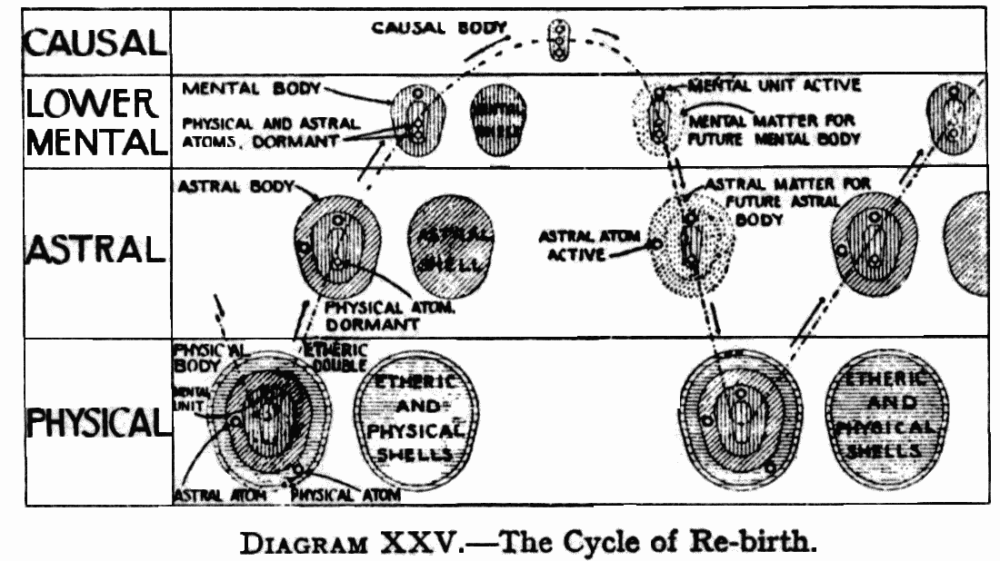
The student should
realise that it is necessary for evolution that these permanent, atoms should be
carried over, the reason being that the developed man must be master of all
planes or worlds, and the permanent atoms form the only direct channel,
imperfect though it be, between the spiritual triad, or ego, and the forms he is
connected with. If it were conceivable that he could develop without permanent
atoms, he might possibly become a glorious, archangel upon higher planes, but he
would be entirely useless in these lower worlds, having cut off from himself the
power of feeling and thinking. We must not, therefore, drop the permanent atoms:
our business is to purify and develop them.
We may note here that permanent atoms are much more evolved than are other
atoms, being at the fullest development of seventh round atoms in men who are
about to become Adepts. They are thus as highly developed as atoms, can possibly
be, and, as we have seen, are charged with all the qualities which they have
brought over from previous births.
When a person reaches the level of a Buddha, it is quite impossible for him to find atoms useful to him, except those which have been used as permanent atoms by human beings.
All the permanent atoms of all those who, in connection with this world, or probably even with this chain of worlds, have attained Adeptship and have cast them off, have been collected together and used in the vehicles of the Lord Gautama Buddha. As there were not quite enough of these to make the entire vehicle, some of the best ordinary atoms available were also employed, being galvanised into activity by the others. They are replaced by permanent atoms, obtained from every new Adept who takes the Sambhogakaya or the Dharmakaya vesture [see page 322]. This set of bodies is unique and there is no material to make another set. They were used by Gautama Buddha, and afterwards preserved.
The causal, mental
and astral bodies of the Buddha were used also by the Christ, along with the
physical body of Jesus, and by Shankaracharya, and are now again being used by
the Lord Maitreya.
Returning from this digression on permanent atoms, to the time when the life on
the higher mental sub-planes comes to an end, we perceive that Trishna i.e.,desire
for further experience, reasserts itself, and the ego once more turns his
attention outwards, stepping over the threshold of devachan into what has been
called the plane of reincarnation, bringing with him the results, small or
great, of his devachanic work.
With his attention turned outwards, as said, the ego sends forth a thrill of life, which arouses the mental unit. The flow in the spirillae of this unit, and in the other permanent atoms in their turn, which during the period of repose, has been small and slow, is now increased, and the mental unit, thus stimulated, begins to vibrate strongly. This is shown in the diagram, on the right hand side, by a reappearance of the rays round the mental unit.
The life-web begins to unfold again, and the vibrating mental unit, acting as a magnet, draws around itself mental matter, with vibratory powers resembling, or accordant with, its own.
The devas of the Second Elemental Kingdom bring this material within reach of the mental unit, and, in the earlier stages of evolution, they also shape the matter into a loose cloud around the permanent unit: but, as evolution proceeds, the ego himself exercises an ever increasing influence over the shaping of the material. This cloud of matter— which is not yet of course a vehicle, properly so-called—is indicated in the diagram by the dotted outline.
When the mental body is partially formed, the life-thrill from the ego awakens the astral permanent atom, and a similar procedure takes place, a cloud of astral matter being drawn round the astral permanent atom.
In his descent to incarnation, we thus see that the ego does not receive ready-made mental and astral bodies: instead, he receives material out of which these bodies will be built, in the course of the life that is to follow. Moreover, the matter which he receives is capable of providing him with mental and astral bodies, of exactly the same type as those he had at the end of his last mental and astral lives, respectively.
The method whereby
the ego obtains a new etheric body, into which, as into a mould, the new
physical body is built, has been, fully described in
The Etheric Double,p.67,
and so need not be repeated here. We may add, however, that during human
ante-natal life the prolongation of the Sutratma is formed, consisting of a
single thread, which weaves a network, a shimmering web of inconceivable
fineness and delicate beauty, with minute meshes, reminding one of the closely
woven cocoon of the silkworm.
Within the meshes of this web the coarser particles of the bodies are built
together. Thus if the bodies are looked at with buddhic vision, they all
disappear, and in their places is seen this web of life, as it is called, which
supports and vivifies all the bodies.
During the ante-natal life, the thread grows out from the physical permanent atom and branches out in every direction, the growth continuing until the physical, body is full grown. During physical life the prana, or vitality, courses along the branches and meshes.
It appears that it is usually the presence of the permanent atom which renders possible the fertilisation of the ovum, from which the new body is to grow. Nevertheless, when a child is stillborn, there has usually been no ego behind, it [and presumably, therefore, no permanent atom] , and of course no etheric elemental [vide The Etheric Double, p.67] . Although there are vast hosts of egos seeking incarnation, many of them still at so early a stage that almost any ordinary surroundings would be equally suitable for them, yet it does sometimes happen that, at a given time, there is no ego able to take advantage of a particular opportunity; in that case, though the body may be formed, to a certain extent, by the thought of the mother, yet, as there is no ego, it is never really alive.
The ordinary ego
is, of course, by no means in a position to choose a body for himself. The place
of his birth is usually determined by the combined action, of three forces:
these are: [1] the law of evolution, which causes an ego to be born under
conditions which will give him an opportunity of developing exactly those
qualities, of which he stands most in need; [2] the law of karma. The ego may
not have deserved the best possible opportunity, and so he has to put up with
the second or third best. He may not even have deserved any great opportunity at
all, and so a tumultuous life of small progress may be his fate. We shall return
a little later to this question, of the karma of an ego; [3] the force of any
personal ties of love or hate that the ego may have previously formed. Sometimes
a man may be drawn into a position, which he cannot be said to have deserved in
any other way than by the strong personal love, which he felt for some one
higher in evolution than himself.
A more advanced man, who is already on the Path, may be able to exercise a
certain amount of choice as to the country and family of his birth. But such a
man would be the first to put aside entirely any personal wish in the matter,
and resign himself wholly into the hands of the eternal law,confident that what
ever it brings to him must be far better for him than any selection of his own.
Parents cannot choose the ego who shall inhabit the body to which they give
birth, but by so living as to offer an unusually good opportunity for the
progress of an advanced ego, they can make it exceedingly probable that such an
ego will come to them.
We have seen that
as the ego descends to a fresh incarnation, he has to take up the burden of his
past, much of which has been stored as vibratory tendencies in his permanent
atoms. These germs or seeds are known to Buddhists as Skandhas, a convenient
word for which there seems to be as yet no exact equivalent in English. They
consist of material qualities, sensations, abstract ideas, tendencies of mind,
mental powers, the pure aroma of all these having been built into the causal
body, the remainder being stored, as stated, in the permanent atoms and mental
unit.
H.P. Blavatsky, in her vivid, forceful and inimitable language, gives the
following, description of the ego coming to rebirth., and being met by his
Skandhas : "Karma , with its arm of Skandhas, waits at the threshold of
Devachan, whence the Ego re-emerges to assume a new incarnation. It is at this
moment that the future destiny of the now-rested Ego trembles in the scales of
just retribution, as it now falls once again under the sway of active Karmic
Law. It is in this rebirth. which is ready for it, a rebirth selected and
prepared by this mysterious, inexorable, but in the equity and wisdom of its
decrees, infallible LAW, that the sins of the previous life of the Ego are
punished. Only it is into no imaginary Hell, with theatrical flames and
ridiculous tailed and horned devils, that the Ego is cast, but verily on to this
earth, the plane and region of his sins, where he will have to atone for every
bad thought and deed. As he has sown, so will he reap. Reincarnation will gather
around him all those other Egos who have suffered, whether directly or
indirectly, at the hands, or even through the unconscious instrumentality, of
the past personality. They will be thrown by Nemesis in the way of the new
man, concealing the old Eternal Ego…The new personality is no better than a
fresh suit of clothes with its specific characteristics colour, form and
qualities: but the real man who wears it is the same culprit as of old". [The
Key To Theosophy, pp. 141-2].
Hence it is the law of Karma which guides the man unerringly towards the race and nation herein are to be found the general characteristics that will produce a body and provide a social environment fitted for the manifestation of the general character, built up by the Ego in previous earth-lives, and for reaping of the harvest he has sown.
Karma thus traces
the line, which forms the Ego's path to the new incarnation, this Karma being
the collectivity of causes set going by the Ego himself.
In considering this play of karmic forces, however, there is one factor to which
due weight should be given viz., the ready acceptance by the ego, in his
clear-sighted vision, of conditions for his personality for other than those of
the personality might be willing to choose for itself. The schooling of
experience is not always pleasant, and, to the limited knowledge of the
personality, there must be much of earth experiencewhich sems needlessly painful
unjust and useless. But the Ego, ere he plunges into the "Lethe of the body-"
sees the causes which result in the conditions of the incarnation, on which he
is to enter, and the opportunities which will be afforded for growth: hence it
is easy to see how lightly will weigh in the balance all passing griefs and
pains trivial, to that piercing, farseeing gaze, the joys and woes of earth.
For what is each life but a step in the "Perpetual progress for each incarnating, Ego, or divine soul, in an evolution from the outward to the inward, from the material to the Spiritual, arriving at the end of each stage of absolute unity with the Divine Principle. From strength to strength, from the beauty and perfection of one plane to the greater beauty and perfection of another, with accessions of new glory, of fresh knowledge and power in each cycle, such is the destiny of every Ego". [Key To Theosophy, p.155].
And as Annie Besant graphically puts it, "with such a destiny, what boots the passing suffering of a moment, or even the anguish of a darkened life?"
Continuing with our brief examination of the question of the karma of an ego, it is possible to see the great mass of the accumulated karma - know as the sanchita or piled-up karma—hovering over the ego. Usually it is not a pleasant sight, because, by the nature of things, it contains more evil than good. The reason for this is as follows.
In the earlier stages of their development most men have, through ignorance, done may things that they should not have done, and consequently have laid up for themselves, as a physical result, a good deal of suffering on the physical plane. The average civilised man, on the other hand, is trying to do good rather than harm, and therefore, on the whole, is likely to be making more good karma than bad. But by no means all of the good karma goes into the accumulated mass and so we get the impression in that mass of a preponderanceof evil over good.
This again needs further explanation. The natural result of good thoughts, or good actions, is to improve the man himself, to improve the quality of his vehicles, to bring out in him qualities of courage, affection, devotion, and so forth. These effects thus show themselves in the man himself, and in his vehicles, but not in the mass of piled-up karma which is waiting for him.
If, however, he performs a good action, with the thought of its reward in his mind, then good karma for that action will come to him, and it will be stored up, with the rest of the accumulation, until such time as it can be brought forward, and materialised into activity.
Such good karma
naturally binds the man to earth just as effectually as evil karma:
consequently, the man who is aiming at real progress learns to do all actions
entirely without thought of self, or of the result of his action. This is not to
say that any man can avoid the result of his actions, be they good or bad: but
he can change the character of the result. If he forgets himself entirely, and
does good actions out of the fulness of his heart, then the whole force of the
result is spent in the building of his own character,and nothing of it remains
to bind him to the lower planes. The fact is that in each case the man gets what
he wants: in the words of the Jesus: "Verily I say unto you, they have their
reward".
An ego may sometimes choose whether he will take certain karma in the present
life, though often the brain consciousness may know nothing of the choice: the
very adverse circumstances, at which a man is grumbling, may thus be exactly
what he has deliberately chosen for himself, in order to forward his evolution.
A pupil of a Master may often dominate and largely change his karma, setting in
motion new forces in many directions, which naturally modify the working out of
the old ones.
All of us have more or less of evil karma behind us, and, until that is disposed
of it will be a perpetual hindrance to us in our higher work. Hence one of the
earliest steps, in the direction of serious progress, is to work out whatever of
this evil still remains to us.This results in the Agents of Karma giving us the
opportunity of paying off more of this debt, in order that the way may be
cleared for our future work; this, of course, may, and often does, involve a
considerable increase of suffering in various directions.
The portion of karma selected for discharge in a particular life is known as
"ripe", or prarabda karma. With this in view , the mental, astral and
physical bodies are constructed for a particular length of life. That is one
reason why suicide is such a grievous mistake: it constitutes a direct refusal
to work out the karma, selected for that particular incarnation, and merely
postpones the trouble, as well as generating new karma of an unpleasant nature.
Another reason against suicide is that each incarnation costs the ego no inconsiderable trouble in its preparation, and also in the wearisome period of early childhood, during which he is gradually, and with much effort, gaining some control over his new vehicles. It is obviously, therefore, alike his duty, and his interest, to make the most of his vehicles, and to preserve them as carefully as possible. Certainly he ought by no means to yield them up, until the Great Law compels him to do so, except at the bidding of some higher and overmastering duty from outside, such as the duty of a soldier to his country.
The selection of "ripe"karma for a particular incarnation is,of course,a highly complicated process: it has for example, to be sufficiently congruous to be worked out at a particular age of the world, in a particular family, a particular environment of people and circumstances.
As a man's will is free, it may happen that the karma selected for him, for particular life, is worked through sooner than the Administrators of Karma had expected, if one may put it that way. In such a case, They give him more, that being the explanation of the otherwise perplexing statement that "Whom the Lord loveth He Chasteneth".
The parabda karma
of an individual divides itself into two parts. That which is to express itself
in the physical body is made by the Devarajas into the elemental which builds
the body, as described in the
Etheric Double,
Chapter XV.
The other far larger block, which is to indicate his fate through life, the good
or evil fortune which is to come to him, is made into another thought–form which
does not descend. Hovering over the embryo, it remains upon the mental plane.
From that level it broods over the man, and takes or makes opportunities, to
discharge itself by sections, sending down from itself a flash like lightening
to strike, or a finger to touch, sometimes far down on the physical
plane,sometimes a sort of extension which reaches only the astral plane, and
sometimes what we may call a horizontal flash or finger upon the mental plane.
This thought-form goes on discharging itself until it is quite empty, and then returns to the matter of the plane. The man can of course, modify its action by the new karma which he is constantly making. The ordinary man has usually scarcely will enough to create any strong new causes, and so the elemental empties itself of its contents according to what may be described as its original programme, taking advantage of convenient astrological periods and surrounding circumstances, which make its work easier or more effective. And so the horoscope of the man may work out with considerable exactitude.
But if the man be sufficiently developed to possess a strong will, the elemental's action is likely to be much modified, and the life will by no means follow the lines laid down in the horoscope.
Sometimes the
modifications introduced are such that the elemental is unable fully to
discharge itself before the time of the man's death. In that case, whatever is
left of it is again absorbed into the great mass of the sanchita or accumulated
karma, and out of that another and more or less similar elemental is made, ready
for the next physical life.
The time and place of the physical birth are determined by the "temperament",
sometimes called the "colour" or the "keynote" of the person, this again being
determined, to some extent, by the permanent atom. The physical body must be
born into the world, at a time when the physical planetary influences are
suitable to the "temperament": hence it is born "under" its astrological "Star".
Needless to say, it is not the Star that imposes the temperament, but the
temperament that fixes the epoch of birth under that Star. Hence arise the
correspondences between Stars and characters, and the usefulness, for
educational purposes, of a skilfully drawn horoscope, as a guide to the personal
temperament of the child.
It seems probable that, in the majority of cases, the exact time and manner of a
man's death are not decided before or at his birth. Astrologers often
assert that they cannot foretell the death of a subject, though they can
calculate that, at a certain time, malefic influences will be strong, so that
the man may die then: if, however, he does not die then, his life will
continue, until a certain other occasion, when evil aspects again threaten him,
and so on.
It is likely that
these uncertainties represent points, which are left open for later decision,
depending largely upon the modifications introduced by the action of the man,
during his life, and by the use which he makes of his opportunities.
In any event, we should avoid the error of attaching an exaggerated importance
to the time and manner of death. We may be assured that Those, who are in charge
of such matters, possess a much truer appreciation of relative values, and have
regard to the progress of the ego concerned, as the one matter of importance.
Whilst we are dealing with the subject of death, it may be mentioned that the
fundamental objection to killing is that it interferes with the course of
evolution. To kill a man is to cut him off from the opportunity which he would
otherwise have had in that body. He will, of course, have another body later on,
but he has been delayed, and additional trouble has been given to the agents of
karma in finding another place for his evolution.
It is obviously much more serious to kill a man than an animal, because the man has to develop an entirely new personality, whereas the animal goes back to the group-soul, from which another incarnation is a comparatively easy matter, but even this lesser amount of karma should not be generated thoughtlessly or needlessly.
To an advanced Ego,
all the earlier stages of childhood are exceedingly wearisome. Sometimes a
really advanced person avoids all this, by asking some one else to give him an
adult body, a sacrifice which any of his disciples would always be delighted to
make for him.
This method, however, also has its drawbacks. Every body has its own little
peculiarities and habits, which cannot readily be changed, so that it must to
some extent be a misfit to another ego. In the case under consideration, the man
would have retained his old mental and astral bodies, which are, of course
counterparts of his previous physical body. To adapt these to the new physical
body, grown by some one else, may obviously often be a very difficult business.
Further, if the new physical body be a baby, this adaptation can be done
gradually, but, if it is an adult body, it has to be done immediately, which
means an amount of strain that is distinctly unpleasant.
In
The Etheric Double,
p. 67, it was explained how the new physical body is gradually built into the
mould provided by the etheric double, this etheric double being built in advance
for the incoming ego by an elemental, which is a joint thought-form of the four
Devarajas.
This elemental takes charge of the body from the first, but, some time before
the physical birth takes place, the ego also comes into contact with his future
habitation, and from that time onwards the two forces are working side by side.
Sometimes the characteristics, which the elemental is directed to impose, are
but few in number and consequently it is able to retire at a comparatively early
age, and to leave the ego in full control of the body. In other cases, where the
limitations are of such a character that a good deal of time is necessary for
their development, it may retain its position until the body is seven years old.
In the majority of cases, however, the actual work done by the ego, upon the new
vehicles, up to the point at which the elemental withdraws, is inconsiderable.
He is certainly in connection with the body, but generally pays little attention
to it, preferring to wait until it has reached a stage where it is more
responsive to his efforts.
During the embryonic period, whilst the physical body is being built, out of the substance of the mother, the ego broods over the mother, but can do little towards the shaping of the body. The embryo is unconscious of its future, dimly conscious only of the flow of maternal life, impressed by maternal hopes and fears, thoughts and desires. Nothing from the ego can affect it, save a feeble influence coming through the physical permanent atom, and it does not share, because it cannot answer to, the wide-reaching thoughts ,the aspiring emotions of the ego, as expressed by him in his causal body.
During the years whilst the ego is slowly coming into full touch with the new vehicles, he is, on his own plane, carrying on his own wider, richer life. His touch with the new physical body is manifested as the growth of the brain consciousness.
Egos differ greatly in the interest which they take in their physical vehicles: Some hover over them anxiously from the first, and take a good deal of trouble about them, while others are almost entirely careless with regard to the whole matter.
The case of the Adept is very different. As there is no evil karma to be worked, out, no artificial elemental is at work, and the ego himself is in sole charge of the development of the body from the beginning, finding himself limited only be heredity.
This enables a far
more refined and delicate instrument to be produced: but it also involves more
trouble for the ego, and engages for some years a considerable, amount of his
time end energy. Consequently, for this, and no doubt for other reasons also, an
Adept does not wish to repeat the process more often, than is strictly
necessary, and He therefore makes His physical body last as long as possible.
Whilst our bodies grow old and die, for various reasons, from inherited
weakness, disease, accident, self-indulgence, worry and overwork, in the case of
the Adept none of these causes are present, though we must, of course, remember
that His body is fit for work, and capable of endurance, immeasurably beyond
those of ordinary men.
In the case of the ordinary man, there seems to be but little continuity of personal appearance life after life, though cases of strong similarity have been found. As the physical body is to some extent an expression of the ego, and the ego remains the same, there must be some cases where it expresses itself in similar forms. But as a rule, racial, family and other characteristics over-ride this tendency.
When an individual is so advanced that the personality and ego are unified, the personality tends to have impressed upon it the characteristics of the glorified form in the causal body, which, of course is relatively permanent.
When the man is an
Adept, all His karma is worked out ; the physical body is the nearest possible
presentment of that glorified form. The Masters therefore will remain
recognisable through any number of incarnations, so that one would not expect to
see much difference in Their bodies, even though They might be of another race.
Prototypes of what bodies are to be like in the seventh Race have been seen, and
they are described as transcendently beautiful.
Emphasis has often
been laid on the period of seven years, in connection with the coming down of
the ego to take full possession of the physical body. For this there is a
physical reason. In the human embryo, there is a certain set of cells which do
not, like other cells, go through the process of subdivision. This set of cells
works its way up to the upper part of the embryo, but does not sub-divide: when
the child is born, they are still separate and remain separate for a
considerable period in the postnatal life. Changes, however, do occur within the
cells, and they send out branches. These branches, after a time, meet the
intervening dividing walls being absorbed, so that the cells are completely
intercommunicating: thus is built a channel.
The process occupies some seven years, until a fair network is formed, becoming
more and more complicated later on.
Physiologists and psychologists point out that, until this complex network is made,the child cannot reason to any great extent,and he should not be given any mental process of complicated reasoning, which puts too great a strain upon him. Materialistic science affirms that, with the growth of this network, the power of reasoning grows. The occultist would explain the phenomenon, by saying, that as the physical mechanism is perfected, the power of reasoning which already exists in the ego, is able to manifest itself. The ego has to wait until the brain is ready for him to come into close touch with and permeate it.
It was stated above that during the descent of the ego to rebirth., there are drawn, round the permanent atoms, materials for the building of the new mental and astral bodies. If the young child is left entirely to himself, the automatic, action of the astral permanent atom will tend to produce for him an astral body, precisely similar to that which he had in the last life. There is, however, no reason whatever why all these materials should be used, and, if the child is wisely treated, and reasonably guided, he will be encouraged to develop to the fullest all the germs of good which he has brought over from his previous life, while the evil germs will be allowed to slumber. If that is done, these evil germs will gradually atrophy, and drop away from him, and the ego will unfold within himself the opposite virtues,and then he will be free, for all his future lives, from the evil qualities which these germs indicated.
Parents and
teachers may help him towards this desirable consummation, not so much by any
definite facts which they teach him, as by the encouragement which they give to
him, by the rational and kindly treatment uniformly accorded to him, and, above
all, by the amount of affection lavished upon him.
In The Astral Body and The Mental Body, in the chapters on
Rebirth, we have already laid great stress on the immense services which may -
and should be - rendered to an ego, by those who are responsible for his
upbringing and training, so that it is unnecessary to repeat here what was said
in those books.
We may, however, add that one who, instead of arousing love and good qualities
in his charges, awakens in them evil qualities, such as fear, deceit, and the
like, is hampering the progress of the egos concerned, and thus doing them
serious positive harm. Misuse of such an opportunity involves a terrible fall
for the man. In some cases, for example, cruelty of this nature may result in
insanity, hysteria, or neurasthenia. In other cases, it results in a cataclysmic
descent in the social scale, such as a brahman being reborn as a pariah, as a
result of cruelty to children.
On the same principle, a man who, having wealth and power, uses his position to
oppress his employees, generates very bad karma. The only aspect of the matter,
which concerns the agents of karma, is that the man in such a position has in
his hands an opportunity of being a helpful influence in the life of a number of
people. He neglects or abuses such an opportunity at his own peril.
Continued in Section 2 of Causal Body [chapter 24 and beyond]